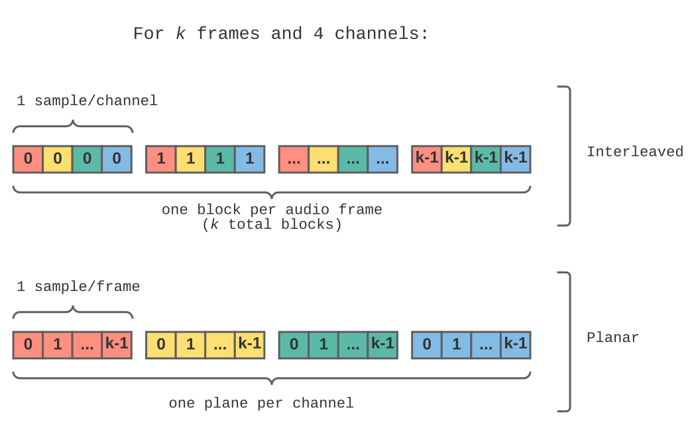

Title: WebCodecs
Repository: w3c/webcodecs
Status: ED
ED: https://w3c.github.io/webcodecs/
TR: https://www.w3.org/TR/webcodecs/
Shortname: webcodecs
Level: None
Group: mediawg
Editor: Chris Cunningham, w3cid 114832, Google Inc. https://www.google.com/
Editor: Paul Adenot, w3cid 62410, Mozilla https://www.mozilla.org/
Editor: Bernard Aboba, w3cid 65611, Microsoft Corporation https://www.microsoft.com/
Abstract: This specification defines interfaces to codecs for encoding and
decoding of audio, video, and images.
This specification does not specify or require any particular codec or
method of encoding or decoding. The purpose of this specification is to
provide JavaScript interfaces to implementations of existing codec
technology developed elsewhere. Implementers are free to
support any combination of codecs or none at all.
Complain About:accidental-2119 yes
Markup Shorthands:css no, markdown yes, dfn yes
!Participate: Git Repository.
!Participate: File an issue.
!Version History: https://github.com/w3c/webcodecs/commits
spec:webidl; type:interface; text:Promise
spec:html; type:attribute; text:hidden
spec: media-source; urlPrefix: https://www.w3.org/TR/media-source/
type: method
for: MediaSource; text: isTypeSupported(); url: #dom-mediasource-istypesupported
spec: html; urlPrefix: https://html.spec.whatwg.org/multipage/;
for: HTMLMediaElement;
type: method; text: canPlayType(); url: #dom-navigator-canplaytype
for: PlatformObject;
type: attribute; text: [[Detached]]; url: structured-data.html#detached
for: ImageBitmap;
type: attribute; text: resizeWidth; url:#dom-imagebitmapoptions-resizewidth
type: attribute; text: resizeHeight; url:#dom-imagebitmapoptions-resizeheight
type: dfn; text: cropped to the source rectangle with formatting; url: imagebitmap-and-animations.html#cropped-to-the-source-rectangle-with-formatting
type: dfn; text: bitmap data; url: imagebitmap-and-animations.html#concept-imagebitmap-bitmap-data
for: Canvas;
type: dfn; text: Check the usability of the image argument; url: canvas.html#check-the-usability-of-the-image-argument
for: origin;
type: dfn; text: origin; url: origin.html#concept-origin
for: webappapis;
type: dfn; text: global object; url: webappapis.html#global-object
type: dfn; text: entry settings object; url: webappapis.html#entry-settings-object
for: media;
type: dfn; text: current playback position; url: media.html#current-playback-position
type: dfn; text: live; url: infrastructure.html#live
spec: mediacapture-streams; urlPrefix: https://www.w3.org/TR/mediacapture-streams/
for: mediaDevices;
type: method; text: getUserMedia(); url: #dom-mediadevices-getusermedia
spec: mediacapture-screen-share; urlPrefix: https://w3c.github.io/mediacapture-screen-share/
for: mediaDevices; type: method; text: getDisplayMedia(); url: #dom-mediadevices-getdisplaymedia
spec: mediacapture-main; urlPrefix: https://w3c.github.io/mediacapture-main/
for:MediaStreamTrackState;
type: enum-value; text: live; url: #idl-def-MediaStreamTrackState.live
type: enum-value; text: ended; url: #idl-def-MediaStreamTrackState.ended
spec: mimesniff; urlPrefix: https://mimesniff.spec.whatwg.org/#
type: dfn; text: MIME type; url: mime-type
type: dfn; text: valid MIME type string; url:valid-mime-type
spec: infra; urlPrefix: https://infra.spec.whatwg.org/#
type: dfn; text: queue; url: queues
type: dfn; text: enqueuing; url: queue-enqueue;
type: dfn; text: dequeued; url: queue-dequeue;
type: dfn; text: empty; url: list-is-empty;
type: dfn; text: list; url: lists;
spec: mediastream-recording; urlPrefix: https://www.w3.org/TR/mediastream-recording/#
type: interface; text: MediaRecorder; url: mediarecorder
type: interface; text: BitrateMode; url: bitratemode
for: BitrateMode;
type: enum-value; text: constant; url: dom-bitratemode-constant
type: enum-value; text: variable; url: dom-bitratemode-variable
spec: media-capabilities; urlPrefix: https://w3c.github.io/media-capabilities/#
type: method; text: decodingInfo(); url: dom-mediacapabilities-decodinginfo
type: attribute; text: powerEfficient; url: dom-mediacapabilitiesinfo-powerefficient
spec: css-images-3; urlPrefix: https://www.w3.org/TR/css-images-3/
type: dfn; text: natural dimensions; url: #natural-dimensions
type: dfn; text: natural width; url: #natural-width
type: dfn; text: natural height; url: #natural-height
spec: webrtc-svc; urlPrefix: https://w3c.github.io/webrtc-svc/
type: dfn; text: scalability mode identifier; url:#scalabilitymodes*
spec: ECMASCRIPT; urlPrefix: https://tc39.es/ecma262/
type: dfn; text: the current Realm; url: #current-realm
{
"H.273": {
"href": "https://www.itu.int/rec/T-REC-H.273/en",
"title": "Coding-independent code points for video signal type identification",
"publisher": "ITU",
"date": "December 2016"
},
"WEBCODECS-VIDEO-FRAME-METADATA-REGISTRY": {
"href": "https://w3c.github.io/webcodecs/video_frame_metadata_registry.html",
"title": "WebCodecs VideoFrame Metadata Registry",
"publisher": "W3C",
"authors": [
"Youenn Fablet"
],
"status": "ED"
}
}
Definitions {#definitions}
==========================
: Codec
:: Refers generically to an instance of AudioDecoder, AudioEncoder,
VideoDecoder, or VideoEncoder.
: Key Chunk
:: An encoded chunk that does not depend on any other frames for decoding. Also
commonly referred to as a "key frame".
: Internal Pending Output
:: Codec outputs such as {{VideoFrame}}s that currently reside in the internal
pipeline of the underlying codec implementation. The underlying codec
implementation MAY emit new outputs only when new
inputs are provided. The underlying codec implementation MUST emit all outputs in response to a flush.
: Codec System Resources
:: Resources including CPU memory, GPU memory, and exclusive handles to specific
decoding/encoding hardware that MAY be allocated by
the User Agent as part of codec configuration or generation of {{AudioData}}
and {{VideoFrame}} objects. Such resources MAY be
quickly exhausted and SHOULD be released immediately
when no longer in use.
: Temporal Layer
:: A grouping of {{EncodedVideoChunk}}s whose timestamp cadence produces a
particular framerate. See {{VideoEncoderConfig/scalabilityMode}}.
: Progressive Image
:: An image that supports decoding to multiple levels of detail, with lower
levels becoming available while the encoded data is not yet fully buffered.
: Progressive Image Frame Generation
:: A generational identifier for a given [=Progressive Image=] decoded output.
Each successive generation adds additional detail to the decoded output.
The mechanism for computing a frame's generation is implementer defined.
: Primary Image Track
:: An image track that is marked by the given image file as being the default
track. The mechanism for indicating a primary track is format defined.
: RGB Format
:: A {{VideoPixelFormat}} containing red, green, and blue color channels in
any order or layout (interleaved or planar), and irrespective of whether an
alpha channel is present.
: sRGB Color Space
:: A {{VideoColorSpaceInit}} containing «[
"primaries" → {{VideoColorPrimaries/bt709}},
"transfer" → {{VideoTransferCharacteristics/iec61966-2-1}},
"matrix" → {{VideoMatrixCoefficients/rgb}},
"fullRange" → `true`]».
: REC709 Color Space
:: A {{VideoColorSpaceInit}} containing «[
"primaries" → {{VideoColorPrimaries/bt709}},
"transfer" → {{VideoTransferCharacteristics/bt709}},
"matrix" → {{VideoMatrixCoefficients/bt709}},
"fullRange" → `false`]».
: Codec Saturation
:: The state of an underlying codec implementation where the number of active
decoding or encoding requests has reached an implementation specific
maximum such that it is temporarily unable to accept more work. The maximum
may be any value greater than 1, including infinity (no maximum). While
saturated, additional calls to `decode()` or `encode()` will be buffered
in the [=control message queue=], and will increment the respective
`decodeQueuSize` and `encodeQueueSize` attributes. The codec implementation
will become unsaturated after making sufficient progress on the current
workload.
Codec Processing Model {#codec-processing-model-section}
===================================================================
Background {#processing-model-background}
-----------------------------------------
This section is non-normative.
The codec interfaces defined by the specification are designed such that new
codec tasks can be scheduled while previous tasks are still pending. For
example, web authors can call `decode()` without waiting for a previous
`decode()` to complete. This is achieved by offloading underlying codec tasks
to a separate [=parallel queue=] for parallel execution.
This section describes threading behaviors as they are visible from the
perspective of web authors. Implementers can choose to use more threads, as
long as the exernally visible behaviors of blocking and sequencing are
maintained as follows.
Control Messages {#control-messages}
------------------------------------
A control message defines a sequence of steps corresponding to a
method invocation on a [=codec=] instance (e.g. `encode()`).
A control message queue is a a [=queue=] of
[=control messages=]. Each [=codec=] instance has a control message queue
stored in an internal slot named
[[control message queue]].
Queuing a control
message means [=enqueuing=] the message to a [=codec=]’s [=[[control
message queue]]=]. Invoking codec methods will generally queue a control message
to schedule work.
Running a control
message means performing a sequence of steps specified by the method
that enqueued the message.
The steps of a given control message can block processing later messages in the
control message queue. Each [=codec=] instance has a boolean internal slot named
[[message queue blocked]] that is set to `true` when this occurs. A
blocking message will conclude by setting [=[[message queue blocked]]=] to
`false` and rerunning the [=Process the control message queue=] steps.
All control messages will return either `"processed"` or `"not processed"`.
Returning `"processed"` indicates the message steps are being (or have been)
executed and the message may be removed from the [=control message queue=].
`"not processed"` indicates the message must could not be processed at this time
and should remain in the [=control message queue=] to be retried later.
To Process the control message queue, run these steps:
1. While [=[[message queue blocked]]=] is `false` and
[=[[control message queue]]=] is not empty:
1. Let |front message| be the first message in
[=[[control message queue]]=].
2. Let |outcome| be the result of running the [=control message steps=]
described by |front message|.
3. If |outcome| equals `"not processed"`, break.
4. Otherwise, dequeue |front message| from the
[=[[control message queue]]=].
Codec Work Parallel Queue {#codec-work-parallel-queue}
------------------------------------------------------
Each [=codec=] instance has an internal slot named
[[codec work queue]] that is a [=parallel queue=].
Each [=codec=] instance has an internal slot named
[[codec implementation]] that refers to the underlying platform
encoder or decoder. Except for assignment, any steps that reference
[=[[codec implementation]]=] will be enqueued to the [=[[codec work queue]]=].
Each [=codec=] instance has a unique codec task source. Tasks
[=queue a task|queued=] from the [=[[codec work queue]]=] to the [=/event loop=]
will use the [=codec task source=].
AudioDecoder Interface {#audiodecoder-interface}
================================================
[Exposed=(Window,DedicatedWorker), SecureContext]
interface AudioDecoder {
constructor(AudioDecoderInit init);
readonly attribute CodecState state;
readonly attribute unsigned long decodeQueueSize;
attribute EventHandler ondequeue;
undefined configure(AudioDecoderConfig config);
undefined decode(EncodedAudioChunk chunk);
Promise<undefined> flush();
undefined reset();
undefined close();
static Promise<AudioDecoderSupport> isConfigSupported(AudioDecoderConfig config);
};
dictionary AudioDecoderInit {
required AudioDataOutputCallback output;
required WebCodecsErrorCallback error;
};
callback AudioDataOutputCallback = undefined(AudioData output);
Internal Slots {#audiodecoder-internal-slots}
---------------------------------------------
: [[control message queue]]
:: A [=queue=] of [=control messages=] to be performed upon this [=codec=]
instance. See [=[[control message queue]]=].
: [[message queue blocked]]
:: A boolean indicating when processing the
{{AudioDecoder/[[control message queue]]}} is blocked by a pending
[=control message=]. See [=[[message queue blocked]]=].
: [[codec implementation]]
:: Underlying decoder implementation provided by the User Agent.
: [[codec work queue]]
:: A [=parallel queue=] used for running parallel steps that reference the
{{AudioDecoder/[[codec implementation]]}}. See [=[[codec work queue]]=].
: [[codec saturated]]
:: A boolean indicating when the [[codec implementation]] is unable to accept
additional decoding work.
: [[output callback]]
:: Callback given at construction for decoded outputs.
: [[error callback]]
:: Callback given at construction for decode errors.
: [[key chunk required]]
:: A boolean indicating that the next chunk passed to {{AudioDecoder/decode()}}
MUST describe a [=key chunk=] as indicated by
{{EncodedAudioChunk/[[type]]}}.
: \[[state]]
:: The current {{CodecState}} of this {{AudioDecoder}}.
: \[[decodeQueueSize]]
:: The number of pending decode requests. This number will decrease as the
underlying codec is ready to accept new input.
: [[pending flush promises]]
:: A list of unresolved promises returned by calls to {{AudioDecoder/flush()}}.
: [[dequeue event scheduled]]
:: A boolean indicating whether a {{AudioDecoder/dequeue}} event is already
scheduled to fire. Used to avoid event spam.
Constructors {#audiodecoder-constructors}
-----------------------------------------
AudioDecoder(init)
1. Let d be a new {{AudioDecoder}} object.
2. Assign a new [=queue=] to {{AudioDecoder/[[control message queue]]}}.
3. Assign `false` to {{AudioDecoder/[[message queue blocked]]}}.
4. Assign `null` to {{AudioDecoder/[[codec implementation]]}}.
5. Assign the result of starting a new [=parallel queue=] to
{{AudioDecoder/[[codec work queue]]}}.
6. Assign `false` to {{AudioDecoder/[[codec saturated]]}}.
7. Assign init.output to {{AudioDecoder/[[output callback]]}}.
8. Assign init.error to {{AudioDecoder/[[error callback]]}}.
9. Assign `true` to {{AudioDecoder/[[key chunk required]]}}.
10. Assign `"unconfigured"` to {{AudioDecoder/[[state]]}}
11. Assign `0` to {{AudioDecoder/[[decodeQueueSize]]}}.
12. Assign a new [=list=] to {{AudioDecoder/[[pending flush promises]]}}.
13. Assign `false` to {{AudioDecoder/[[dequeue event scheduled]]}}.
13. Return d.
Attributes {#audiodecoder-attributes}
-------------------------------------
: state
:: Returns the value of {{AudioDecoder/[[state]]}}.
: decodeQueueSize
:: Returns the value of {{AudioDecoder/[[decodeQueueSize]]}}.
: ondequeue
:: An [=event handler IDL attribute=] whose [=event handler event type=] is
{{AudioDecoder/dequeue}}.
Event Summary {#audiodecoder-event-summary}
-------------------------------------------
: dequeue
:: Fired at the {{AudioDecoder}} when the {{AudioDecoder/decodeQueueSize}} has
decreased.
Methods {#audiodecoder-methods}
-------------------------------
- configure(config)
-
[=Enqueues a control message=] to configure the audio decoder for decoding
chunks as described by |config|.
NOTE: This method will trigger a {{NotSupportedError}} if the User Agent
does not support |config|. Authors are encouraged to first check support
by calling {{AudioDecoder/isConfigSupported()}} with |config|. User
Agents don't have to support any particular codec type or configuration.
When invoked, run these steps:
1. If |config| is not a [=valid AudioDecoderConfig=], throw a
{{TypeError}}.
2. If {{AudioDecoder/[[state]]}} is `“closed”`, throw an {{InvalidStateError}}.
3. Set {{AudioDecoder/[[state]]}} to `"configured"`.
4. Set {{AudioDecoder/[[key chunk required]]}} to `true`.
5. [=Queue a control message=] to configure the decoder with |config|.
6. [=Process the control message queue=].
[=Running a control message=] to configure the decoder means running
these steps:
1. Let |supported| be the result of running the Check Configuration
Support algorithm with |config|.
2. If |supported| is `true`, assign
{{AudioDecoder/[[codec implementation]]}} with an implementation
supporting |config|.
3. Otherwise, run the Close AudioDecoder algorithm with
{{NotSupportedError}} and return `"processed"`.
4. Assign `true` to {{AudioDecoder/[[message queue blocked]]}}.
5. Enqueue the following steps to {{AudioDecoder/[[codec work queue]]}}:
1. Configure {{AudioDecoder/[[codec implementation]]}} with |config|.
2. Assign `false` to {{AudioDecoder/[[message queue blocked]]}}.
3. [=Queue a task=] to [=Process the control message queue=].
6. Return `"processed"`.
- decode(chunk)
-
[=Enqueues a control message=] to decode the given |chunk|.
When invoked, run these steps:
1. If {{AudioDecoder/[[state]]}} is not `"configured"`, throw an
{{InvalidStateError}}.
2. If {{AudioDecoder/[[key chunk required]]}} is `true`:
1. If |chunk|.{{EncodedAudioChunk/[[type]]}} is not
{{EncodedAudioChunkType/key}}, throw a {{DataError}}.
2. Implementers SHOULD inspect the |chunk|'s
{{EncodedAudioChunk/[[internal data]]}} to verify that
it is truly a [=key chunk=]. If a mismatch is detected, throw a
{{DataError}}.
3. Otherwise, assign `false` to
{{AudioDecoder/[[key chunk required]]}}.
3. Increment {{AudioDecoder/[[decodeQueueSize]]}}.
4. [=Queue a control message=] to decode the |chunk|.
5. [=Process the control message queue=].
[=Running a control message=] to decode the chunk means performing these
steps:
1. If {{AudioDecoder/[[codec saturated]]}} equals `true`, return `"not
processed"`.
2. If decoding chunk will cause the
{{AudioDecoder/[[codec implementation]]}} to become [=saturated=],
assign `true` to {{AudioDecoder/[[codec saturated]]}}.
3. Decrement {{AudioDecoder/[[decodeQueueSize]]}} and run the
[=AudioDecoder/Schedule Dequeue Event=] algorithm.
4. Enqueue the following steps to the {{AudioDecoder/[[codec work queue]]}}:
1. Attempt to use {{AudioDecoder/[[codec implementation]]}} to decode
the chunk.
2. If decoding results in an error, [=queue a task=] to run the
[=Close AudioDecoder=] algorithm with {{EncodingError}} and return.
3. If {{AudioDecoder/[[codec saturated]]}} equals `true` and
{{AudioDecoder/[[codec implementation]]}} is no longer
[=saturated=], [=queue a task=] to perform the following steps:
1. Assign `false` to {{AudioDecoder/[[codec saturated]]}}.
2. [=Process the control message queue=].
4. Let |decoded outputs| be a [=list=] of decoded audio data outputs
emitted by {{AudioDecoder/[[codec implementation]]}}.
5. If |decoded outputs| is not empty, [=queue a task=] to run the
[=Output AudioData=] algorithm with |decoded outputs|.
5. Return `"processed"`.
- flush()
-
Completes all [=control messages=] in the [=control message queue=]
and emits all outputs.
When invoked, run these steps:
1. If {{AudioDecoder/[[state]]}} is not `"configured"`, return
[=a promise rejected with=] {{InvalidStateError}} {{DOMException}}.
2. Set {{AudioDecoder/[[key chunk required]]}} to `true`.
3. Let |promise| be a new Promise.
4. Append |promise| to {{AudioDecoder/[[pending flush promises]]}}.
5. [=Queue a control message=] to flush the codec with |promise|.
6. [=Process the control message queue=].
7. Return |promise|.
[=Running a control message=] to flush the codec means performing these
steps with |promise|.
1. Enqueue the following steps to the {{AudioDecoder/[[codec work queue]]}}:
1. Signal {{AudioDecoder/[[codec implementation]]}} to emit all
[=internal pending outputs=].
2. Let |decoded outputs| be a [=list=] of decoded audio data outputs
emitted by {{AudioDecoder/[[codec implementation]]}}.
3. [=Queue a task=] to perform these steps:
1. If |decoded outputs| is not empty, run the [=Output AudioData=]
algorithm with |decoded outputs|.
2. Remove |promise| from
{{AudioDecoder/[[pending flush promises]]}}.
3. Resolve |promise|.
- reset()
-
Immediately resets all state including configuration,
[=control messages=] in the [=control message queue=], and all pending
callbacks.
When invoked, run the [=Reset AudioDecoder=] algorithm with an
{{AbortError}} {{DOMException}}.
- close()
-
Immediately aborts all pending work and releases [=system resources=].
Close is final.
When invoked, run the [=Close AudioDecoder=] algorithm with an
{{AbortError}} {{DOMException}}.
- isConfigSupported(config)
-
Returns a promise indicating whether the provided |config| is supported by
the User Agent.
NOTE: The returned {{AudioDecoderSupport}} {{AudioDecoderSupport/config}}
will contain only the dictionary members that User Agent recognized.
Unrecognized dictionary members will be ignored. Authors can detect
unrecognized dictionary members by comparing
{{AudioDecoderSupport/config}} to their provided |config|.
When invoked, run these steps:
1. If |config| is not a valid AudioDecoderConfig, return
[=a promise rejected with=] {{TypeError}}.
2. Let |p| be a new Promise.
3. Let |checkSupportQueue| be the result of starting a new parallel
queue.
4. Enqueue the following steps to |checkSupportQueue|:
1. Let |decoderSupport| be a newly constructed
{{AudioDecoderSupport}}, initialized as follows:
1. Set {{AudioDecoderSupport/config}} to the result of running the
Clone Configuration algorithm with |config|.
2. Set {{AudioDecoderSupport/supported}} to the result of running
the Check Configuration Support algorithm with |config|.
2. Resolve |p| with |decoderSupport|.
5. Return |p|.
Algorithms {#audiodecoder-algorithms}
-------------------------------------
- Schedule Dequeue Event
-
1. If {{AudioDecoder/[[dequeue event scheduled]]}} equals `true`, return.
2. Assign `true` to {{AudioDecoder/[[dequeue event scheduled]]}}.
3. [=Queue a task=] to run the following steps:
1. Fire a simple event named {{AudioDecoder/dequeue}} at [=this=].
2. Assign `false` to {{AudioDecoder/[[dequeue event scheduled]]}}.
- Output AudioData (with |outputs|)
-
Run these steps:
1. For each |output| in |outputs|:
1. Let |data| be an {{AudioData}}, initialized as follows:
1. Assign `false` to {{platform object/[[Detached]]}}.
2. Let |resource| be the [=media resource=] described by |output|.
3. Let |resourceReference| be a reference to |resource|.
4. Assign |resourceReference| to
{{AudioData/[[resource reference]]}}.
5. Let |timestamp| be the {{EncodedAudioChunk/[[timestamp]]}} of the
{{EncodedAudioChunk}} associated with |output|.
6. Assign |timestamp| to {{AudioData/[[timestamp]]}}.
7. If |output| uses a recognized {{AudioSampleFormat}}, assign that
format to {{AudioData/[[format]]}}. Otherwise, assign `null` to
{{AudioData/[[format]]}}.
8. Assign values to {{AudioData/[[sample rate]]}},
{{AudioData/[[number of frames]]}}, and
{{AudioData/[[number of channels]]}} as determined by |output|.
3. Invoke {{AudioDecoder/[[output callback]]}} with |data|.
- Reset AudioDecoder (with |exception|)
-
Run these steps:
1. If {{AudioDecoder/[[state]]}} is `"closed"`, throw an {{InvalidStateError}}.
2. Set {{AudioDecoder/[[state]]}} to `"unconfigured"`.
3. Signal {{AudioDecoder/[[codec implementation]]}} to cease producing
output for the previous configuration.
4. Remove all [=control messages=] from the
{{AudioDecoder/[[control message queue]]}}.
5. If {{AudioDecoder/[[decodeQueueSize]]}} is greater than zero:
1. Set {{AudioDecoder/[[decodeQueueSize]]}} to zero.
2. Run the [=AudioDecoder/Schedule Dequeue Event=] algorithm.
6. For each |promise| in {{AudioDecoder/[[pending flush promises]]}}:
1. Reject |promise| with |exception|.
2. Remove |promise| from {{AudioDecoder/[[pending flush promises]]}}.
- Close AudioDecoder (with |exception|)
-
Run these steps:
1. Run the [=Reset AudioDecoder=] algorithm with |exception|.
2. Set {{AudioDecoder/[[state]]}} to `"closed"`.
3. Clear {{AudioDecoder/[[codec implementation]]}} and release associated
[=system resources=].
4. If |exception| is not an {{AbortError}} {{DOMException}},
[=queue a task=] to invoke the {{AudioDecoder/[[error callback]]}} with |exception|.
VideoDecoder Interface {#videodecoder-interface}
================================================
[Exposed=(Window,DedicatedWorker), SecureContext]
interface VideoDecoder {
constructor(VideoDecoderInit init);
readonly attribute CodecState state;
readonly attribute unsigned long decodeQueueSize;
attribute EventHandler ondequeue;
undefined configure(VideoDecoderConfig config);
undefined decode(EncodedVideoChunk chunk);
Promise<undefined> flush();
undefined reset();
undefined close();
static Promise<VideoDecoderSupport> isConfigSupported(VideoDecoderConfig config);
};
dictionary VideoDecoderInit {
required VideoFrameOutputCallback output;
required WebCodecsErrorCallback error;
};
callback VideoFrameOutputCallback = undefined(VideoFrame output);
Internal Slots {#videodecoder-internal-slots}
---------------------------------------------
: [[control message queue]]
:: A [=queue=] of [=control messages=] to be performed upon this [=codec=]
instance. See [=[[control message queue]]=].
: [[message queue blocked]]
:: A boolean indicating when processing the
{{VideoDecoder/[[control message queue]]}} is blocked by a pending
[=control message=]. See [=[[message queue blocked]]=].
: [[codec implementation]]
:: Underlying decoder implementation provided by the User Agent.
: [[codec work queue]]
:: A [=parallel queue=] used for running parallel steps that reference the
{{VideoDecoder/[[codec implementation]]}}. See [=[[codec work queue]]=].
: [[codec saturated]]
:: A boolean indicating when the [[codec implementation]] is unable to accept
additional decoding work.
: [[output callback]]
:: Callback given at construction for decoded outputs.
: [[error callback]]
:: Callback given at construction for decode errors.
: [[active decoder config]]
:: The {{VideoDecoderConfig}} that is actively applied.
: [[key chunk required]]
:: A boolean indicating that the next chunk passed to {{VideoDecoder/decode()}}
MUST describe a [=key chunk=] as indicated by
{{EncodedVideoChunk/type}}.
: \[[state]]
:: The current {{CodecState}} of this {{VideoDecoder}}.
: \[[decodeQueueSize]]
:: The number of pending decode requests. This number will decrease as the
underlying codec is ready to accept new input.
: [[pending flush promises]]
:: A list of unresolved promises returned by calls to {{VideoDecoder/flush()}}.
: [[dequeue event scheduled]]
:: A boolean indicating whether a {{VideoDecoder/dequeue}} event is already
scheduled to fire. Used to avoid event spam.
Constructors {#videodecoder-constructors}
-----------------------------------------
VideoDecoder(init)
1. Let d be a new {{VideoDecoder}} object.
2. Assign a new [=queue=] to {{VideoDecoder/[[control message queue]]}}.
3. Assign `false` to {{VideoDecoder/[[message queue blocked]]}}.
4. Assign `null` to {{VideoDecoder/[[codec implementation]]}}.
5. Assign the result of starting a new [=parallel queue=] to
{{VideoDecoder/[[codec work queue]]}}.
6. Assign `false` to {{VideoDecoder/[[codec saturated]]}}.
7. Assign init.output to {{VideoDecoder/[[output callback]]}}.
8. Assign init.error to {{VideoDecoder/[[error callback]]}}.
9. Assign `null` to {{VideoDecoder/[[active decoder config]]}}.
10. Assign `true` to {{VideoDecoder/[[key chunk required]]}}.
11. Assign `"unconfigured"` to {{VideoDecoder/[[state]]}}
12. Assign `0` to {{VideoDecoder/[[decodeQueueSize]]}}.
13. Assign a new [=list=] to {{VideoDecoder/[[pending flush promises]]}}.
14. Assign `false` to {{VideoDecoder/[[dequeue event scheduled]]}}.
15. Return d.
Attributes {#videodecoder-attributes}
-------------------------------------
: state
:: Returns the value of {{VideoDecoder/[[state]]}}.
: decodeQueueSize
:: Returns the value of {{VideoDecoder/[[decodeQueueSize]]}}.
: ondequeue
:: An [=event handler IDL attribute=] whose [=event handler event type=] is
{{VideoDecoder/dequeue}}.
Event Summary {#videodecoder-event-summary}
-------------------------------------------
: dequeue
:: Fired at the {{VideoDecoder}} when the {{VideoDecoder/decodeQueueSize}} has
decreased.
Methods {#videodecoder-methods}
-------------------------------
- configure(config)
-
[=Enqueues a control message=] to configure the video decoder for decoding
chunks as described by |config|.
NOTE: This method will trigger a {{NotSupportedError}} if the User Agent
does not support |config|. Authors are encouraged to first check support
by calling {{VideoDecoder/isConfigSupported()}} with |config|. User Agents
don't have to support any particular codec type or configuration.
When invoked, run these steps:
1. If |config| is not a [=valid VideoDecoderConfig=], throw a
{{TypeError}}.
2. If {{VideoDecoder/[[state]]}} is `“closed”`, throw an
{{InvalidStateError}}.
3. Set {{VideoDecoder/[[state]]}} to `"configured"`.
4. Set {{VideoDecoder/[[key chunk required]]}} to `true`.
5. [=Queue a control message=] to configure the decoder with |config|.
6. [=Process the control message queue=].
[=Running a control message=] to configure the decoder means running
these steps:
1. Let |supported| be the result of running the Check Configuration
Support algorithm with |config|.
2. If |supported| is `true`, assign
{{VideoDecoder/[[codec implementation]]}} with an implementation
supporting |config|.
3. Otherwise, run the Close VideoDecoder algorithm with
{{NotSupportedError}} and return `"processed"`.
4. Assign `true` to {{VideoDecoder/[[message queue blocked]]}}.
5. Enqueue the following steps to {{VideoDecoder/[[codec work queue]]}}:
1. Configure {{VideoDecoder/[[codec implementation]]}} with |config|.
2. Set {{VideoDecoder/[[active decoder config]]}} to `config`.
3. Assign `false` to {{VideoDecoder/[[message queue blocked]]}}.
4. [=Queue a task=] to [=Process the control message queue=].
6. Return `"processed"`.
- decode(chunk)
-
[=Enqueues a control message=] to decode the given |chunk|.
NOTE: Authors are encouraged to call {{VideoFrame/close()}} on output
{{VideoFrame}}s immediately when frames are no longer needed. The
underlying [=media resource=]s are owned by the {{VideoDecoder}} and
failing to release them (or waiting for garbage collection) can cause
decoding to stall.
NOTE: {{VideoDecoder}} requires that frames are output in the order they
expect to be presented, commonly known as presentation order. When using
some {{VideoDecoder/[[codec implementation]]}}s the User Agent will have to
to reorder outputs into presentation order.
When invoked, run these steps:
1. If {{VideoDecoder/[[state]]}} is not `"configured"`, throw an
{{InvalidStateError}}.
2. If {{VideoDecoder/[[key chunk required]]}} is `true`:
1. If |chunk|.{{EncodedVideoChunk/type}} is not
{{EncodedVideoChunkType/key}}, throw a {{DataError}}.
2. Implementers SHOULD inspect the |chunk|'s
{{EncodedVideoChunk/[[internal data]]}} to verify that
it is truly a [=key chunk=]. If a mismatch is detected, throw a
{{DataError}}.
3. Otherwise, assign `false` to
{{VideoDecoder/[[key chunk required]]}}.
3. Increment {{VideoDecoder/[[decodeQueueSize]]}}.
4. [=Queue a control message=] to decode the |chunk|.
5. [=Process the control message queue=].
[=Running a control message=] to decode the chunk means performing these steps:
1. If {{VideoDecoder/[[codec saturated]]}} equals `true`, return `"not
processed"`.
2. If decoding chunk will cause the
{{VideoDecoder/[[codec implementation]]}} to become [=saturated=],
assign `true` to {{VideoDecoder/[[codec saturated]]}}.
3. Decrement {{VideoDecoder/[[decodeQueueSize]]}} and run the
[=VideoDecoder/Schedule Dequeue Event=] algorithm.
4. Enqueue the following steps to the {{VideoDecoder/[[codec work queue]]}}:
1. Attempt to use {{VideoDecoder/[[codec implementation]]}} to decode
the chunk.
2. If decoding results in an error, [=queue a task=] to run the
[=Close VideoDecoder=] algorithm with {{EncodingError}} and return.
3. If {{VideoDecoder/[[codec saturated]]}} equals `true` and
{{VideoDecoder/[[codec implementation]]}} is no longer
[=saturated=], [=queue a task=] to perform the following steps:
1. Assign `false` to {{VideoDecoder/[[codec saturated]]}}.
2. [=Process the control message queue=].
4. Let |decoded outputs| be a [=list=] of decoded video data outputs
emitted by {{VideoDecoder/[[codec implementation]]}} in
presentation order.
5. If |decoded outputs| is not empty, [=queue a task=] to run the
[=Output VideoFrame=] algorithm with |decoded outputs|.
5. Return `"processed"`.
- flush()
-
Completes all [=control messages=] in the [=control message queue=]
and emits all outputs.
When invoked, run these steps:
1. If {{VideoDecoder/[[state]]}} is not `"configured"`, return
[=a promise rejected with=] {{InvalidStateError}} {{DOMException}}.
2. Set {{VideoDecoder/[[key chunk required]]}} to `true`.
3. Let |promise| be a new Promise.
4. Append |promise| to {{VideoDecoder/[[pending flush promises]]}}.
5. [=Queue a control message=] to flush the codec with |promise|.
6. [=Process the control message queue=].
7. Return |promise|.
[=Running a control message=] to flush the codec means performing these
steps with |promise|.
1. Enqueue the following steps to the {{VideoDecoder/[[codec work queue]]}}:
1. Signal {{VideoDecoder/[[codec implementation]]}} to emit all
[=internal pending outputs=].
2. Let |decoded outputs| be a [=list=] of decoded video data outputs
emitted by {{VideoDecoder/[[codec implementation]]}}.
3. [=Queue a task=] to perform these steps:
1. If |decoded outputs| is not empty, run the [=Output VideoFrame=]
algorithm with |decoded outputs|.
2. Remove |promise| from
{{VideoDecoder/[[pending flush promises]]}}.
3. Resolve |promise|.
- reset()
-
Immediately resets all state including configuration,
[=control messages=] in the [=control message queue=], and all pending
callbacks.
When invoked, run the [=Reset VideoDecoder=] algorithm with an
{{AbortError}} {{DOMException}}.
- close()
-
Immediately aborts all pending work and releases [=system resources=].
Close is final.
When invoked, run the [=Close VideoDecoder=] algorithm with an
{{AbortError}} {{DOMException}}.
- isConfigSupported(config)
-
Returns a promise indicating whether the provided |config| is supported by
the User Agent.
NOTE: The returned {{VideoDecoderSupport}} {{VideoDecoderSupport/config}}
will contain only the dictionary members that User Agent recognized.
Unrecognized dictionary members will be ignored. Authors can detect
unrecognized dictionary members by comparing
{{VideoDecoderSupport/config}} to their provided |config|.
When invoked, run these steps:
1. If |config| is not a valid VideoDecoderConfig, return
[=a promise rejected with=] {{TypeError}}.
2. Let |p| be a new Promise.
3. Let |checkSupportQueue| be the result of starting a new parallel
queue.
4. Enqueue the following steps to |checkSupportQueue|:
1. Let |decoderSupport| be a newly constructed
{{VideoDecoderSupport}}, initialized as follows:
1. Set {{VideoDecoderSupport/config}} to the result of running the
Clone Configuration algorithm with |config|.
2. Set {{VideoDecoderSupport/supported}} to the result of running
the Check Configuration Support algorithm with |config|.
2. Resolve |p| with |decoderSupport|.
5. Return |p|.
Algorithms {#videodecoder-algorithms}
-------------------------------------
- Schedule Dequeue Event
-
1. If {{VideoDecoder/[[dequeue event scheduled]]}} equals `true`, return.
2. Assign `true` to {{VideoDecoder/[[dequeue event scheduled]]}}.
3. [=Queue a task=] to run the following steps:
1. Fire a simple event named {{VideoDecoder/dequeue}} at [=this=].
2. Assign `false` to {{VideoDecoder/[[dequeue event scheduled]]}}.
- Output VideoFrames (with |outputs|)
-
Run these steps:
1. For each |output| in |outputs|:
1. Let |timestamp| and |duration| be the
{{EncodedVideoChunk/timestamp}} and {{EncodedVideoChunk/duration}}
from the {{EncodedVideoChunk}} associated with |output|.
2. Let |displayAspectWidth| and |displayAspectHeight| be undefined.
3. If {{VideoDecoderConfig/displayAspectWidth}} and
{{VideoDecoderConfig/displayAspectHeight}} [=map/exist=] in the
{{VideoDecoder/[[active decoder config]]}}, assign their values to
|displayAspectWidth| and |displayAspectHeight| respectively.
4. Let |colorSpace| be the {{VideoColorSpace}} for |output| as detected
by the codec implementation. If no {{VideoColorSpace}} is detected,
let |colorSpace| be `undefined`.
NOTE: The codec implementation can detect a {{VideoColorSpace}} by
analyzing the bitstream. Detection is made on a best-effort
basis. The exact method of detection is implementer defined and
codec-specific. Authors can override the detected
{{VideoColorSpace}} by providing a
{{VideoDecoderConfig/colorSpace}} in the {{VideoDecoderConfig}}.
5. If {{VideoDecoderConfig/colorSpace}} [=map/exists=] in the
{{VideoDecoder/[[active decoder config]]}}, assign its value to
|colorSpace|.
6. Let |frame| be the result of running the [=Create a VideoFrame=]
algorithm with |output|, |timestamp|, |duration|,
|displayAspectWidth|, |displayAspectHeight|, and |colorSpace|.
7. Invoke {{VideoDecoder/[[output callback]]}} with |frame|.
- Reset VideoDecoder (with |exception|)
-
Run these steps:
1. If {{VideoDecoder/state}} is `"closed"`, throw an {{InvalidStateError}}.
2. Set {{VideoDecoder/state}} to `"unconfigured"`.
3. Signal {{VideoDecoder/[[codec implementation]]}} to cease producing
output for the previous configuration.
4. Remove all [=control messages=] from the
{{VideoDecoder/[[control message queue]]}}.
5. If {{VideoDecoder/[[decodeQueueSize]]}} is greater than zero:
1. Set {{VideoDecoder/[[decodeQueueSize]]}} to zero.
2. Run the [=VideoDecoder/Schedule Dequeue Event=] algorithm.
6. For each |promise| in {{VideoDecoder/[[pending flush promises]]}}:
1. Reject |promise| with |exception|.
2. Remove |promise| from {{VideoDecoder/[[pending flush promises]]}}.
- Close VideoDecoder (with |exception|)
-
Run these steps:
1. Run the [=Reset VideoDecoder=] algorithm with |exception|.
2. Set {{VideoDecoder/state}} to `"closed"`.
3. Clear {{VideoDecoder/[[codec implementation]]}} and release associated
[=system resources=].
4. If |exception| is not an {{AbortError}} {{DOMException}},
[=queue a task=] to invoke the {{VideoDecoder/[[error callback]]}} with |exception|.
AudioEncoder Interface {#audioencoder-interface}
================================================
[Exposed=(Window,DedicatedWorker), SecureContext]
interface AudioEncoder {
constructor(AudioEncoderInit init);
readonly attribute CodecState state;
readonly attribute unsigned long encodeQueueSize;
attribute EventHandler ondequeue;
undefined configure(AudioEncoderConfig config);
undefined encode(AudioData data);
Promise<undefined> flush();
undefined reset();
undefined close();
static Promise<AudioEncoderSupport> isConfigSupported(AudioEncoderConfig config);
};
dictionary AudioEncoderInit {
required EncodedAudioChunkOutputCallback output;
required WebCodecsErrorCallback error;
};
callback EncodedAudioChunkOutputCallback =
undefined (EncodedAudioChunk output,
optional EncodedAudioChunkMetadata metadata = {});
Internal Slots {#audioencoder-internal-slots}
---------------------------------------------
: [[control message queue]]
:: A [=queue=] of [=control messages=] to be performed upon this [=codec=]
instance. See [=[[control message queue]]=].
: [[message queue blocked]]
:: A boolean indicating when processing the
{{AudioEncoder/[[control message queue]]}} is blocked by a pending
[=control message=]. See [=[[message queue blocked]]=].
: [[codec implementation]]
:: Underlying encoder implementation provided by the User Agent.
: [[codec work queue]]
:: A [=parallel queue=] used for running parallel steps that reference the
{{AudioEncoder/[[codec implementation]]}}. See [=[[codec work queue]]=].
: [[codec saturated]]
:: A boolean indicating when the [[codec implementation]] is unable to accept
additional encoding work.
: [[output callback]]
:: Callback given at construction for encoded outputs.
: [[error callback]]
:: Callback given at construction for encode errors.
: [[active encoder config]]
:: The {{AudioEncoderConfig}} that is actively applied.
: [[active output config]]
:: The {{AudioDecoderConfig}} that describes how to decode the most recently
emitted {{EncodedAudioChunk}}.
: \[[state]]
:: The current {{CodecState}} of this {{AudioEncoder}}.
: \[[encodeQueueSize]]
:: The number of pending encode requests. This number will decrease as the
underlying codec is ready to accept new input.
: [[pending flush promises]]
:: A list of unresolved promises returned by calls to {{AudioEncoder/flush()}}.
: [[dequeue event scheduled]]
:: A boolean indicating whether a {{AudioEncoder/dequeue}} event is already
scheduled to fire. Used to avoid event spam.
Constructors {#audioencoder-constructors}
-----------------------------------------
AudioEncoder(init)
1. Let e be a new {{AudioEncoder}} object.
2. Assign a new [=queue=] to {{AudioEncoder/[[control message queue]]}}.
3. Assign `false` to {{AudioEncoder/[[message queue blocked]]}}.
4. Assign `null` to {{AudioEncoder/[[codec implementation]]}}.
5. Assign the result of starting a new [=parallel queue=] to
{{AudioEncoder/[[codec work queue]]}}.
6. Assign `false` to {{AudioEncoder/[[codec saturated]]}}.
7. Assign init.output to {{AudioEncoder/[[output callback]]}}.
8. Assign init.error to {{AudioEncoder/[[error callback]]}}.
9. Assign `null` to {{AudioEncoder/[[active encoder config]]}}.
10. Assign `null` to {{AudioEncoder/[[active output config]]}}.
11. Assign `"unconfigured"` to {{AudioEncoder/[[state]]}}
12. Assign `0` to {{AudioEncoder/[[encodeQueueSize]]}}.
13. Assign a new [=list=] to {{AudioEncoder/[[pending flush promises]]}}.
14. Assign `false` to {{AudioEncoder/[[dequeue event scheduled]]}}.
15. Return e.
Attributes {#audioencoder-attributes}
-------------------------------------
: state
:: Returns the value of {{AudioEncoder/[[state]]}}.
: encodeQueueSize
:: Returns the value of {{AudioEncoder/[[encodeQueueSize]]}}.
: ondequeue
:: An [=event handler IDL attribute=] whose [=event handler event type=] is
{{AudioEncoder/dequeue}}.
Event Summary {#audioencoder-event-summary}
-------------------------------------------
: dequeue
:: Fired at the {{AudioEncoder}} when the {{AudioEncoder/encodeQueueSize}} has
decreased.
Methods {#audioencoder-methods}
-------------------------------
- configure(config)
-
[=Enqueues a control message=] to configure the audio encoder for
decoding chunks as described by |config|.
NOTE: This method will trigger a {{NotSupportedError}} if the User Agent
does not support |config|. Authors are encouraged to first check support
by calling {{AudioEncoder/isConfigSupported()}} with |config|. User
Agents don't have to support any particular codec type or configuration.
When invoked, run these steps:
1. If |config| is not a [=valid AudioEncoderConfig=], throw a
{{TypeError}}.
2. If {{AudioEncoder/[[state]]}} is `"closed"`, throw an
{{InvalidStateError}}.
3. Set {{AudioEncoder/[[state]]}} to `"configured"`.
4. [=Queue a control message=] to configure the encoder using |config|.
5. [=Process the control message queue=].
[=Running a control message=] to configure the encoder means performing
these steps:
1. Let |supported| be the result of running the Check Configuration
Support algorithm with |config|.
2. If |supported| is `true`, assign
{{AudioEncoder/[[codec implementation]]}} with an implementation
supporting |config|.
3. Otherwise, run the Close AudioEncoder algorithm with
{{NotSupportedError}} and return `"processed"`.
4. Assign `true` to {{AudioEncoder/[[message queue blocked]]}}.
5. Enqueue the following steps to {{AudioEncoder/[[codec work queue]]}}:
1. Configure {{AudioEncoder/[[codec implementation]]}} with |config|.
2. Set {{AudioEncoder/[[active encoder config]]}} to `config`.
3. Assign `false` to {{AudioEncoder/[[message queue blocked]]}}.
4. [=Queue a task=] to [=Process the control message queue=].
6. Return `"processed"`.
- encode(data)
-
[=Enqueues a control message=] to encode the given |data|.
When invoked, run these steps:
1. If the value of |data|'s {{platform object/[[Detached]]}} internal slot
is `true`, throw a {{TypeError}}.
2. If {{AudioEncoder/[[state]]}} is not `"configured"`, throw an
{{InvalidStateError}}.
3. Let |dataClone| hold the result of running the [=Clone AudioData=]
algorithm with |data|.
4. Increment {{AudioEncoder/[[encodeQueueSize]]}}.
5. [=Queue a control message=] to encode |dataClone|.
6. [=Process the control message queue=].
[=Running a control message=] to encode the data means performing these
steps:
1. If {{AudioEncoder/[[codec saturated]]}} equals `true`, return `"not
processed"`.
2. If encoding |data| will cause the
{{AudioEncoder/[[codec implementation]]}} to become [=saturated=],
assign `true` to {{AudioEncoder/[[codec saturated]]}}.
3. Decrement {{AudioEncoder/[[encodeQueueSize]]}} and run the
[=AudioEncoder/Schedule Dequeue Event=] algorithm.
4. Enqueue the following steps to the {{AudioEncoder/[[codec work queue]]}}:
1. Attempt to use {{AudioEncoder/[[codec implementation]]}} to encode
the [=media resource=] described by |dataClone|.
2. If encoding results in an error, [=queue a task=] to run the
[=Close AudioEncoder=] algorithm with {{EncodingError}} and return.
3. If {{AudioEncoder/[[codec saturated]]}} equals `true` and
{{AudioEncoder/[[codec implementation]]}} is no longer
[=saturated=], [=queue a task=] to perform the following steps:
1. Assign `false` to {{AudioEncoder/[[codec saturated]]}}.
2. [=Process the control message queue=].
4. Let |encoded outputs| be a [=list=] of encoded audio data outputs
emitted by {{AudioEncoder/[[codec implementation]]}}.
5. If |encoded outputs| is not empty, [=queue a task=] to run the
[=Output EncodedAudioChunks=] algorithm with |encoded outputs|.
5. Return `"processed"`.
- flush()
-
Completes all [=control messages=] in the [=control message queue=]
and emits all outputs.
When invoked, run these steps:
1. If {{AudioEncoder/[[state]]}} is not `"configured"`, return
[=a promise rejected with=] {{InvalidStateError}} {{DOMException}}.
2. Let |promise| be a new Promise.
3. Append |promise| to {{AudioEncoder/[[pending flush promises]]}}.
4. [=Queue a control message=] to flush the codec with |promise|.
5. [=Process the control message queue=].
6. Return |promise|.
[=Running a control message=] to flush the codec means performing these
steps with |promise|.
1. Enqueue the following steps to the {{AudioEncoder/[[codec work queue]]}}:
1. Signal {{AudioEncoder/[[codec implementation]]}} to emit all
[=internal pending outputs=].
2. Let |encoded outputs| be a [=list=] of encoded audio data outputs
emitted by {{AudioEncoder/[[codec implementation]]}}.
3. [=Queue a task=] to perform these steps:
1. If |encoded outputs| is not empty, run the
[=Output EncodedAudioChunks=] algorithm with |encoded outputs|.
2. Remove |promise| from
{{AudioEncoder/[[pending flush promises]]}}.
3. Resolve |promise|.
- reset()
-
Immediately resets all state including configuration,
[=control messages=] in the [=control message queue=], and all pending
callbacks.
When invoked, run the [=Reset AudioEncoder=] algorithm with an
{{AbortError}} {{DOMException}}.
- close()
-
Immediately aborts all pending work and releases [=system resources=].
Close is final.
When invoked, run the [=Close AudioEncoder=] algorithm with an
{{AbortError}} {{DOMException}}.
- isConfigSupported(config)
-
Returns a promise indicating whether the provided |config| is supported by
the User Agent.
NOTE: The returned {{AudioEncoderSupport}} {{AudioEncoderSupport/config}}
will contain only the dictionary members that User Agent recognized.
Unrecognized dictionary members will be ignored. Authors can detect
unrecognized dictionary members by comparing
{{AudioEncoderSupport/config}} to their provided |config|.
When invoked, run these steps:
1. If |config| is not a valid AudioEncoderConfig, return
[=a promise rejected with=] {{TypeError}}.
2. Let |p| be a new Promise.
3. Let |checkSupportQueue| be the result of starting a new parallel
queue.
4. Enqueue the following steps to |checkSupportQueue|:
1. Let |encoderSupport| be a newly constructed
{{AudioEncoderSupport}}, initialized as follows:
1. Set {{AudioEncoderSupport/config}} to the result of running the
Clone Configuration algorithm with |config|.
2. Set {{AudioEncoderSupport/supported}} to the result of running
the Check Configuration Support algorithm with |config|.
2. Resolve |p| with |encoderSupport|.
5. Return |p|.
Algorithms {#audioencoder-algorithms}
-------------------------------------
- Schedule Dequeue Event
-
1. If {{AudioEncoder/[[dequeue event scheduled]]}} equals `true`, return.
2. Assign `true` to {{AudioEncoder/[[dequeue event scheduled]]}}.
3. [=Queue a task=] to run the following steps:
1. Fire a simple event named {{AudioEncoder/dequeue}} at [=this=].
2. Assign `false` to {{AudioEncoder/[[dequeue event scheduled]]}}.
- Output EncodedAudioChunks (with |outputs|)
-
Run these steps:
1. For each |output| in |outputs|:
1. Let |chunkInit| be an {{EncodedAudioChunkInit}} with the following
keys:
1. Let {{EncodedAudioChunkInit/data}} contain the encoded audio data
from |output|.
2. Let {{EncodedAudioChunkInit/type}} be the
{{EncodedAudioChunkType}} of |output|.
3. Let {{EncodedAudioChunkInit/timestamp}} be the
{{AudioData/timestamp}} from the AudioData associated with
|output|.
4. Let {{EncodedAudioChunkInit/duration}} be the
{{AudioData/duration}} from the AudioData associated with
|output|.
2. Let |chunk| be a new {{EncodedAudioChunk}} constructed with
|chunkInit|.
3. Let |chunkMetadata| be a new {{EncodedAudioChunkMetadata}}.
4. Let |encoderConfig| be the
{{AudioEncoder/[[active encoder config]]}}.
5. Let |outputConfig| be a new {{AudioDecoderConfig}} that describes
|output|. Initialize |outputConfig| as follows:
1. Assign |encoderConfig|.{{AudioEncoderConfig/codec}} to
|outputConfig|.{{AudioDecoderConfig/codec}}.
2. Assign |encoderConfig|.{{AudioEncoderConfig/sampleRate}} to
|outputConfig|.{{AudioDecoderConfig/sampleRate}}.
3. Assign to
|encoderConfig|.{{AudioEncoderConfig/numberOfChannels}} to
|outputConfig|.{{AudioDecoderConfig/numberOfChannels}}.
4. Assign |outputConfig|.{{AudioDecoderConfig/description}} with a
sequence of codec specific bytes as determined by the
{{AudioEncoder/[[codec implementation]]}}. The User Agent MUST ensure that the provided description
could be used to correctly decode output.
NOTE: The codec specific requirements for populating the
{{AudioDecoderConfig/description}} are described in the
[[WEBCODECS-CODEC-REGISTRY]].
6. If |outputConfig| and {{AudioEncoder/[[active output config]]}} are
not [=equal dictionaries=]:
1. Assign |outputConfig| to
|chunkMetadata|.{{EncodedAudioChunkMetadata/decoderConfig}}.
2. Assign |outputConfig| to
{{AudioEncoder/[[active output config]]}}.
7. Invoke {{AudioEncoder/[[output callback]]}} with |chunk| and
|chunkMetadata|.
- Reset AudioEncoder (with |exception|)
-
Run these steps:
1. If {{AudioEncoder/[[state]]}} is `"closed"`, throw an {{InvalidStateError}}.
2. Set {{AudioEncoder/[[state]]}} to `"unconfigured"`.
3. Set {{AudioEncoder/[[active encoder config]]}} to `null`.
4. Set {{AudioEncoder/[[active output config]]}} to `null`.
5. Signal {{AudioEncoder/[[codec implementation]]}} to cease producing
output for the previous configuration.
6. Remove all [=control messages=] from the
{{AudioEncoder/[[control message queue]]}}.
7. If {{AudioEncoder/[[encodeQueueSize]]}} is greater than zero:
1. Set {{AudioEncoder/[[encodeQueueSize]]}} to zero.
2. Run the [=AudioEncoder/Schedule Dequeue Event=] algorithm.
8. For each |promise| in {{AudioEncoder/[[pending flush promises]]}}:
1. Reject |promise| with |exception|.
2. Remove |promise| from {{AudioEncoder/[[pending flush promises]]}}.
- Close AudioEncoder (with |exception|)
-
Run these steps:
1. Run the [=Reset AudioEncoder=] algorithm with |exception|.
2. Set {{AudioEncoder/[[state]]}} to `"closed"`.
3. Clear {{AudioEncoder/[[codec implementation]]}} and release associated
[=system resources=].
4. If |exception| is not an {{AbortError}} {{DOMException}},
[=queue a task=] to invoke the
{{AudioEncoder/[[error callback]]}} with |exception|.
EncodedAudioChunkMetadata {#encoded-audio-chunk-metadata}
---------------------------------------------------------
The following metadata dictionary is emitted by the
{{EncodedVideoChunkOutputCallback}} alongside an associated
{{EncodedVideoChunk}}.
dictionary EncodedAudioChunkMetadata {
AudioDecoderConfig decoderConfig;
};
: decoderConfig
:: A {{AudioDecoderConfig}} that authors MAY use to
decode the associated {{EncodedAudioChunk}}.
VideoEncoder Interface {#videoencoder-interface}
================================================
[Exposed=(Window,DedicatedWorker), SecureContext]
interface VideoEncoder {
constructor(VideoEncoderInit init);
readonly attribute CodecState state;
readonly attribute unsigned long encodeQueueSize;
attribute EventHandler ondequeue;
undefined configure(VideoEncoderConfig config);
undefined encode(VideoFrame frame, optional VideoEncoderEncodeOptions options = {});
Promise<undefined> flush();
undefined reset();
undefined close();
static Promise<VideoEncoderSupport> isConfigSupported(VideoEncoderConfig config);
};
dictionary VideoEncoderInit {
required EncodedVideoChunkOutputCallback output;
required WebCodecsErrorCallback error;
};
callback EncodedVideoChunkOutputCallback =
undefined (EncodedVideoChunk chunk,
optional EncodedVideoChunkMetadata metadata = {});
Internal Slots {#videoencoder-internal-slots}
---------------------------------------------
: [[control message queue]]
:: A [=queue=] of [=control messages=] to be performed upon this [=codec=]
instance. See [=[[control message queue]]=].
: [[message queue blocked]]
:: A boolean indicating when processing the
{{VideoEncoder/[[control message queue]]}} is blocked by a pending
[=control message=]. See [=[[message queue blocked]]=].
: [[codec implementation]]
:: Underlying encoder implementation provided by the User Agent.
: [[codec work queue]]
:: A [=parallel queue=] used for running parallel steps that reference the
{{VideoEncoder/[[codec implementation]]}}. See [=[[codec work queue]]=].
: [[codec saturated]]
:: A boolean indicating when the [[codec implementation]] is unable to accept
additional encoding work.
: [[output callback]]
:: Callback given at construction for encoded outputs.
: [[error callback]]
:: Callback given at construction for encode errors.
: [[active encoder config]]
:: The {{VideoEncoderConfig}} that is actively applied.
: [[active output config]]
:: The {{VideoDecoderConfig}} that describes how to decode the most recently
emitted {{EncodedVideoChunk}}.
: \[[state]]
:: The current {{CodecState}} of this {{VideoEncoder}}.
: \[[encodeQueueSize]]
:: The number of pending encode requests. This number will decrease as the
underlying codec is ready to accept new input.
: [[pending flush promises]]
:: A list of unresolved promises returned by calls to {{VideoEncoder/flush()}}.
: [[dequeue event scheduled]]
:: A boolean indicating whether a {{VideoEncoder/dequeue}} event is already
scheduled to fire. Used to avoid event spam.
Constructors {#videoencoder-constructors}
-----------------------------------------
VideoEncoder(init)
1. Let e be a new {{VideoEncoder}} object.
2. Assign a new [=queue=] to {{VideoEncoder/[[control message queue]]}}.
3. Assign `false` to {{VideoEncoder/[[message queue blocked]]}}.
4. Assign `null` to {{VideoEncoder/[[codec implementation]]}}.
5. Assign the result of starting a new [=parallel queue=] to
{{VideoEncoder/[[codec work queue]]}}.
6. Assign `false` to {{VideoEncoder/[[codec saturated]]}}.
7. Assign init.output to {{VideoEncoder/[[output callback]]}}.
8. Assign init.error to {{VideoEncoder/[[error callback]]}}.
9. Assign `null` to {{VideoEncoder/[[active encoder config]]}}.
10. Assign `null` to {{VideoEncoder/[[active output config]]}}.
11. Assign `"unconfigured"` to {{VideoEncoder/[[state]]}}
12. Assign `0` to {{VideoEncoder/[[encodeQueueSize]]}}.
13. Assign a new [=list=] to {{VideoEncoder/[[pending flush promises]]}}.
14. Assign `false` to {{VideoEncoder/[[dequeue event scheduled]]}}.
15. Return e.
Attributes {#videoencoder-attributes}
-------------------------------------
: state
:: Returns the value of {{VideoEncoder/[[state]]}}.
: encodeQueueSize
:: Returns the value of {{VideoEncoder/[[encodeQueueSize]]}}.
: ondequeue
:: An [=event handler IDL attribute=] whose [=event handler event type=] is
{{VideoEncoder/dequeue}}.
Event Summary {#videoencoder-event-summary}
-------------------------------------------
: dequeue
:: Fired at the {{VideoEncoder}} when the {{VideoEncoder/encodeQueueSize}} has
decreased.
Methods {#videoencoder-methods}
-------------------------------
- configure(config)
-
[=Enqueues a control message=] to configure the video encoder for
decoding chunks as described by |config|.
NOTE: This method will trigger a {{NotSupportedError}} if the User Agent
does not support |config|. Authors are encouraged to first check support
by calling {{VideoEncoder/isConfigSupported()}} with |config|. User
Agents don't have to support any particular codec type or
configuration.
When invoked, run these steps:
1. If |config| is not a [=valid VideoEncoderConfig=], throw a
{{TypeError}}.
2. If {{VideoEncoder/[[state]]}} is `"closed"`, throw an
{{InvalidStateError}}.
3. Set {{VideoEncoder/[[state]]}} to `"configured"`.
4. [=Queue a control message=] to configure the encoder using |config|.
5. [=Process the control message queue=].
[=Running a control message=] to configure the encoder means performing
these steps:
1. Let |supported| be the result of running the Check Configuration
Support algorithm with |config|.
2. If |supported| is `true`, assign
{{VideoEncoder/[[codec implementation]]}} with an implementation
supporting |config|.
3. Otherwise, run the Close VideoEncoder algorithm with
{{NotSupportedError}} and return `"processed"`.
4. Assign `true` to {{VideoEncoder/[[message queue blocked]]}}.
5. Enqueue the following steps to {{VideoEncoder/[[codec work queue]]}}:
1. Configure {{VideoEncoder/[[codec implementation]]}} with |config|.
2. Set {{VideoEncoder/[[active encoder config]]}} to `config`.
3. Assign `false` to {{VideoEncoder/[[message queue blocked]]}}.
4. [=Queue a task=] to [=Process the control message queue=].
6. Return `"processed"`.
- encode(|frame|, |options|)
-
[=Enqueues a control message=] to encode the given |frame|.
When invoked, run these steps:
1. If the value of |frame|'s {{platform object/[[Detached]]}} internal slot
is `true`, throw a {{TypeError}}.
2. If {{VideoEncoder/[[state]]}} is not `"configured"`, throw an
{{InvalidStateError}}.
3. Let |frameClone| hold the result of running the [=Clone VideoFrame=]
algorithm with |frame|.
4. Increment {{VideoEncoder/[[encodeQueueSize]]}}.
5. [=Queue a control message=] to encode |frameClone|.
6. [=Process the control message queue=].
[=Running a control message=] to encode the frame means performing these
steps:
1. If {{VideoEncoder/[[codec saturated]]}} equals `true`, return `"not
processed"`.
2. If encoding |frame| will cause the
{{VideoEncoder/[[codec implementation]]}} to become [=saturated=],
assign `true` to {{VideoEncoder/[[codec saturated]]}}.
3. Decrement {{VideoEncoder/[[encodeQueueSize]]}} and run the
[=VideoEncoder/Schedule Dequeue Event=] algorithm.
4. Enqueue the following steps to the {{VideoEncoder/[[codec work queue]]}}:
1. Attempt to use {{VideoEncoder/[[codec implementation]]}} to encode
the |frameClone| according to |options|.
2. If encoding results in an error, [=queue a task=] to run the
[=Close VideoEncoder=] algorithm with {{EncodingError}} and return.
3. If {{VideoEncoder/[[codec saturated]]}} equals `true` and
{{VideoEncoder/[[codec implementation]]}} is no longer
[=saturated=], [=queue a task=] to perform the following steps:
1. Assign `false` to {{VideoEncoder/[[codec saturated]]}}.
2. [=Process the control message queue=].
4. Let |encoded outputs| be a [=list=] of encoded video data outputs
emitted by {{VideoEncoder/[[codec implementation]]}}.
5. If |encoded outputs| is not empty, [=queue a task=] to run the
[=Output EncodedVideoChunks=] algorithm with |encoded outputs|.
5. Return `"processed"`.
- flush()
-
Completes all [=control messages=] in the [=control message queue=]
and emits all outputs.
When invoked, run these steps:
1. If {{VideoEncoder/[[state]]}} is not `"configured"`, return
[=a promise rejected with=] {{InvalidStateError}} {{DOMException}}.
2. Let |promise| be a new Promise.
3. Append |promise| to {{VideoEncoder/[[pending flush promises]]}}.
4. [=Queue a control message=] to flush the codec with |promise|.
5. [=Process the control message queue=].
6. Return |promise|.
[=Running a control message=] to flush the codec means performing these
steps with |promise|:
1. Enqueue the following steps to the {{VideoEncoder/[[codec work queue]]}}:
1. Signal {{VideoEncoder/[[codec implementation]]}} to emit all
[=internal pending outputs=].
2. Let |encoded outputs| be a [=list=] of encoded video data outputs
emitted by {{VideoEncoder/[[codec implementation]]}}.
3. [=Queue a task=] to perform these steps:
1. If |encoded outputs| is not empty, run the
[=Output EncodedVideoChunks=] algorithm with |encoded outputs|.
2. Remove |promise| from
{{VideoEncoder/[[pending flush promises]]}}.
3. Resolve |promise|.
- reset()
-
Immediately resets all state including configuration,
[=control messages=] in the [=control message queue=], and all pending
callbacks.
When invoked, run the [=Reset VideoEncoder=] algorithm with an
{{AbortError}} {{DOMException}}.
- close()
-
Immediately aborts all pending work and releases [=system resources=].
Close is final.
When invoked, run the [=Close VideoEncoder=] algorithm with an
{{AbortError}} {{DOMException}}.
- isConfigSupported(config)
-
Returns a promise indicating whether the provided |config| is supported by
the User Agent.
NOTE: The returned {{VideoEncoderSupport}} {{VideoEncoderSupport/config}}
will contain only the dictionary members that User Agent recognized.
Unrecognized dictionary members will be ignored. Authors can detect
unrecognized dictionary members by comparing
{{VideoEncoderSupport/config}} to their provided |config|.
When invoked, run these steps:
1. If |config| is not a valid VideoEncoderConfig, return
[=a promise rejected with=] {{TypeError}}.
2. Let |p| be a new Promise.
3. Let |checkSupportQueue| be the result of starting a new parallel
queue.
4. Enqueue the following steps to |checkSupportQueue|:
1. Let |encoderSupport| be a newly constructed
{{VideoEncoderSupport}}, initialized as follows:
1. Set {{VideoEncoderSupport/config}} to the result of running the
Clone Configuration algorithm with |config|.
2. Set {{VideoEncoderSupport/supported}} to the result of running
the Check Configuration Support algorithm with |config|.
2. Resolve |p| with |encoderSupport|.
5. Return |p|.
Algorithms {#videoencoder-algorithms}
-------------------------------------
- Schedule Dequeue Event
-
1. If {{VideoEncoder/[[dequeue event scheduled]]}} equals `true`, return.
2. Assign `true` to {{VideoEncoder/[[dequeue event scheduled]]}}.
3. [=Queue a task=] to run the following steps:
1. Fire a simple event named {{VideoEncoder/dequeue}} at [=this=].
2. Assign `false` to {{VideoEncoder/[[dequeue event scheduled]]}}.
- Output EncodedVideoChunks (with |outputs|)
-
Run these steps:
1. For each |output| in |outputs|:
1. Let |chunkInit| be an {{EncodedVideoChunkInit}} with the following
keys:
1. Let {{EncodedVideoChunkInit/data}} contain the encoded video data
from |output|.
2. Let {{EncodedVideoChunkInit/type}} be the
{{EncodedVideoChunkType}} of |output|.
3. Let {{EncodedVideoChunkInit/timestamp}} be the
{{VideoFrame/[[timestamp]]}} from the {{VideoFrame}}
associated with |output|.
4. Let {{EncodedVideoChunkInit/duration}} be the
{{VideoFrame/[[duration]]}} from the {{VideoFrame}} associated
with |output|.
2. Let |chunk| be a new {{EncodedVideoChunk}} constructed with
|chunkInit|.
3. Let |chunkMetadata| be a new {{EncodedVideoChunkMetadata}}.
4. Let |encoderConfig| be the
{{VideoEncoder/[[active encoder config]]}}.
5. Let |outputConfig| be a {{VideoDecoderConfig}} that describes
|output|. Initialize |outputConfig| as follows:
1. Assign `encoderConfig.codec` to `outputConfig.codec`.
2. Assign `encoderConfig.width` to
`outputConfig.visibleRect.width`.
3. Assign `encoderConfig.height` to
`outputConfig.visibleRect.height`.
4. Assign `encoderConfig.displayWidth` to
`outputConfig.displayWidth`.
5. Assign `encoderConfig.displayHeight` to
`outputConfig.displayHeight`.
6. Assign the remaining keys of `outputConfig` as determined by
{{VideoEncoder/[[codec implementation]]}}. The User Agent
MUST ensure that the configuration is
completely described such that |outputConfig| could be used to
correctly decode |output|.
NOTE: The codec specific requirements for populating the
{{VideoDecoderConfig/description}} are described in the
[[WEBCODECS-CODEC-REGISTRY]].
6. If |outputConfig| and {{VideoEncoder/[[active output config]]}} are
not equal dictionaries:
1. Assign |outputConfig| to
|chunkMetadata|.{{EncodedVideoChunkMetadata/decoderConfig}}.
2. Assign |outputConfig| to
{{VideoEncoder/[[active output config]]}}.
7. If |encoderConfig|.{{VideoEncoderConfig/scalabilityMode}}
describes multiple [=temporal layers=]:
1. Let |svc| be a new {{SvcOutputMetadata}} instance.
2. Let |temporal_layer_id| be the zero-based index describing the
temporal layer for |output|.
3. Assign |temporal_layer_id| to
|svc|.{{SvcOutputMetadata/temporalLayerId}}.
4. Assign |svc| to
|chunkMetadata|.{{EncodedVideoChunkMetadata/svc}}.
8. If |encoderConfig|.{{VideoEncoderConfig/alpha}} is set to `"keep"`:
1. Let |alphaSideData| be the encoded alpha data in |output|.
2. Assign |alphaSideData| to
|chunkMetadata|.{{EncodedVideoChunkMetadata/alphaSideData}}.
9. Invoke {{VideoEncoder/[[output callback]]}} with |chunk| and
|chunkMetadata|.
- Reset VideoEncoder (with |exception|)
-
Run these steps:
1. If {{VideoEncoder/[[state]]}} is `"closed"`, throw an {{InvalidStateError}}.
2. Set {{VideoEncoder/[[state]]}} to `"unconfigured"`.
3. Set {{VideoEncoder/[[active encoder config]]}} to `null`.
4. Set {{VideoEncoder/[[active output config]]}} to `null`.
5. Signal {{VideoEncoder/[[codec implementation]]}} to cease producing
output for the previous configuration.
6. Remove all [=control messages=] from the
{{VideoEncoder/[[control message queue]]}}.
7. If {{VideoEncoder/[[encodeQueueSize]]}} is greater than zero:
1. Set {{VideoEncoder/[[encodeQueueSize]]}} to zero.
2. Run the [=VideoEncoder/Schedule Dequeue Event=] algorithm.
8. For each |promise| in {{VideoEncoder/[[pending flush promises]]}}:
1. Reject |promise| with |exception|.
2. Remove |promise| from {{VideoEncoder/[[pending flush promises]]}}.
- Close VideoEncoder (with |exception|)
-
Run these steps:
1. Run the [=Reset VideoEncoder=] algorithm with |exception|.
2. Set {{VideoEncoder/[[state]]}} to `"closed"`.
3. Clear {{VideoEncoder/[[codec implementation]]}} and release associated
[=system resources=].
4. If |exception| is not an {{AbortError}} {{DOMException}},
[=queue a task=] to invoke the {{VideoEncoder/[[error callback]]}} with
|exception|.
EncodedVideoChunkMetadata {#encoded-video-chunk-metadata}
---------------------------------------------------------
The following metadata dictionary is emitted by the
{{EncodedVideoChunkOutputCallback}} alongside an associated
{{EncodedVideoChunk}}.
dictionary EncodedVideoChunkMetadata {
VideoDecoderConfig decoderConfig;
SvcOutputMetadata svc;
BufferSource alphaSideData;
};
dictionary SvcOutputMetadata {
unsigned long temporalLayerId;
};
: decoderConfig
:: A {{VideoDecoderConfig}} that authors MAY use to
decode the associated {{EncodedVideoChunk}}.
: svc
:: A collection of metadata describing this {{EncodedVideoChunk}} with respect
to the configured {{VideoEncoderConfig/scalabilityMode}}.
: alphaSideData
:: A {{BufferSource}} that contains the {{EncodedVideoChunk}}'s extra alpha
channel data.
: temporalLayerId
:: A number that identifies the [=temporal layer=] for the associated
{{EncodedVideoChunk}}.
Configurations{#configurations}
===============================
Check Configuration Support (with |config|) {#config-support}
------------------------------------------------------------------------
Run these steps:
1. If |config| is an {{AudioDecoderConfig}} or {{VideoDecoderConfig}} and the
User Agent can't provide a codec that can decode the exact profile
(where present), level (where present), and constraint bits (where present)
indicated by the codec string in |config|.codec, return `false`.
2. If |config| is an {{AudioEncoderConfig}} or {{VideoEncoderConfig}}:
1. If the codec string in |config|.codec contains a profile and the
User Agent can't provide a codec that can encode the exact
profile indicated by |config|.codec, return `false`.
2. If the codec string in |config|.codec contains a level and the
User Agent can't provide a codec that can encode to a level less
than or equal to the level indicated by |config|.codec, return `false`.
3. If the codec string in |config|.codec contains constraint bits and
the User Agent can't provide a codec that can produce an encoded
bitstream at least as constrained as indicated by |config|.codec, return
`false`.
3. If the User Agent can provide a codec to support all entries of the
|config|, including applicable default values for keys that are not
included, return `true`.
NOTE: The types {{AudioDecoderConfig}}, {{VideoDecoderConfig}},
{{AudioEncoderConfig}}, and {{VideoEncoderConfig}} each define their
respective configuration entries and defaults.
NOTE: Support for a given configuration can change dynamically if the
hardware is altered (e.g. external GPU unplugged) or if essential
hardware resources are exhausted. User Agents describe support on
a best-effort basis given the resources that are available at the time
of the query.
2. Otherwise, return false.
Clone Configuration (with |config|) {#clone-config}
--------------------------------------------------------------
NOTE: This algorithm will copy only the dictionary members that the User Agent
recognizes as part of the dictionary type.
Run these steps:
1. Let |dictType| be the type of dictionary |config|.
2. Let clone be a new empty instance of |dictType|.
3. For each dictionary member |m| defined on |dictType|:
1. If |m| does not [=map/exist=] in |config|, then [=iteration/continue=].
2. If `config[m]` is a nested dictionary, set `clone[m]` to the result of
recursively running the Clone Configuration algorithm with
`config[m]`.
3. Otherwise, assign the value of `config[m]` to `clone[m]`.
Signalling Configuration Support{#config-support-info}
------------------------------------------------------
### AudioDecoderSupport ### {#audio-decoder-support}
dictionary AudioDecoderSupport {
boolean supported;
AudioDecoderConfig config;
};
- supported
-
A boolean indicating the whether the corresponding
{{AudioDecoderSupport/config}} is supported by the User Agent.
- config
-
An {{AudioDecoderConfig}} used by the User Agent in determining the value of
{{AudioDecoderSupport/supported}}.
### VideoDecoderSupport ### {#video-decoder-support}
dictionary VideoDecoderSupport {
boolean supported;
VideoDecoderConfig config;
};
- supported
-
A boolean indicating the whether the corresponding
{{VideoDecoderSupport/config}} is supported by the User Agent.
- config
-
A {{VideoDecoderConfig}} used by the User Agent in determining the value of
{{VideoDecoderSupport/supported}}.
### AudioEncoderSupport ### {#audio-encoder-support}
dictionary AudioEncoderSupport {
boolean supported;
AudioEncoderConfig config;
};
- supported
-
A boolean indicating the whether the corresponding
{{AudioEncoderSupport/config}} is supported by the User Agent.
- config
-
An {{AudioEncoderConfig}} used by the User Agent in determining the value of
{{AudioEncoderSupport/supported}}.
### VideoEncoderSupport ### {#video-encoder-support}
dictionary VideoEncoderSupport {
boolean supported;
VideoEncoderConfig config;
};
- supported
-
A boolean indicating the whether the corresponding
{{VideoEncoderSupport/config}} is supported by the User Agent.
- config
-
A {{VideoEncoderConfig}} used by the User Agent in determining the value of
{{VideoEncoderSupport/supported}}.
Codec String{#config-codec-string}
----------------------------------------------------
A codec string describes a given codec format to be used for encoding or
decoding.
A valid codec string MUST meet the following
conditions.
1. Is valid per the relevant codec specification (see examples below).
2. It describes a single codec.
3. It is unambiguous about codec profile, level, and constraint bits for codecs
that define these concepts.
NOTE: In other media specifications, codec strings historically accompanied a
[=MIME type=] as the "codecs=" parameter
({{MediaSource/isTypeSupported()}}, {{HTMLMediaElement/canPlayType()}})
[[RFC6381]]. In this specification, encoded media is not containerized;
hence, only the value of the codecs parameter is accepted.
NOTE: Encoders for codecs that define level and constraint bits have flexibility
around these parameters, but won't produce bitstreams that have a higher
level or are less constrained than requested.
The format and semantics for codec strings are defined by codec registrations
listed in the [[WEBCODECS-CODEC-REGISTRY]]. A compliant implementation MAY support any combination of codec registrations or
none at all.
AudioDecoderConfig{#audio-decoder-config}
-----------------------------------------
dictionary AudioDecoderConfig {
required DOMString codec;
[EnforceRange] required unsigned long sampleRate;
[EnforceRange] required unsigned long numberOfChannels;
BufferSource description;
};
To check if an {{AudioDecoderConfig}} is a valid AudioDecoderConfig,
run these steps:
1. If codec is not a valid codec string, return `false`.
2. Return `true`.
- codec
- Contains a codec string in |config|.codec describing the codec.
- sampleRate
- The number of frame samples per second.
- numberOfChannels
- The number of audio channels.
- description
-
A sequence of codec specific bytes, commonly known as extradata.
NOTE: The registrations in the [[WEBCODECS-CODEC-REGISTRY]] describe whether/how to
populate this sequence, corresponding to the provided
{{AudioDecoderConfig/codec}}.
VideoDecoderConfig{#video-decoder-config}
-----------------------------------------
dictionary VideoDecoderConfig {
required DOMString codec;
[AllowShared] BufferSource description;
[EnforceRange] unsigned long codedWidth;
[EnforceRange] unsigned long codedHeight;
[EnforceRange] unsigned long displayAspectWidth;
[EnforceRange] unsigned long displayAspectHeight;
VideoColorSpaceInit colorSpace;
HardwareAcceleration hardwareAcceleration = "no-preference";
boolean optimizeForLatency;
};
To check if a {{VideoDecoderConfig}} is a valid VideoDecoderConfig,
run these steps:
1. If {{VideoDecoderConfig/codec}} is not a valid codec string, return
`false`.
2. If one of {{VideoDecoderConfig/codedWidth}} or
{{VideoDecoderConfig/codedHeight}} is provided but the other isn't,
return `false`.
3. If {{VideoDecoderConfig/codedWidth}} = 0 or
{{VideoDecoderConfig/codedHeight}} = 0, return `false`.
4. If one of {{VideoDecoderConfig/displayAspectWidth}} or
{{VideoDecoderConfig/displayAspectHeight}} is provided but the other isn't,
return `false`.
5. If {{VideoDecoderConfig/displayAspectWidth}} = 0 or
{{VideoDecoderConfig/displayAspectHeight}} = 0, return `false`.
6. Return `true`.
- codec
- Contains a codec string describing the codec.
- description
-
A sequence of codec specific bytes, commonly known as extradata.
NOTE: The registrations in the [[WEBCODECS-CODEC-REGISTRY]] describes
whether/how to populate this sequence, corresponding to the provided
{{VideoDecoderConfig/codec}}.
- codedWidth
-
Width of the VideoFrame in pixels, potentially including non-visible
padding, and prior to considering potential ratio adjustments.
- codedHeight
-
Height of the VideoFrame in pixels, potentially including non-visible
padding, and prior to considering potential ratio adjustments.
NOTE: {{VideoDecoderConfig/codedWidth}} and {{VideoDecoderConfig/codedHeight}}
are used when selecting a {{VideoDecoder/[[codec implementation]]}}.
- displayAspectWidth
-
Horizontal dimension of the VideoFrame's aspect ratio when displayed.
- displayAspectHeight
-
Vertical dimension of the VideoFrame's aspect ratio when displayed.
NOTE: {{VideoFrame/displayWidth}} and {{VideoFrame/displayHeight}} can both be
different from {{VideoDecoderConfig/displayAspectWidth}} and
{{VideoDecoderConfig/displayAspectHeight}}, but have identical ratios, after scaling is applied when [=create a videoframe|creating the
video frame=].
- colorSpace
-
Configures the {{VideoFrame}}.{{VideoFrame/colorSpace}} for {{VideoFrame}}s
associated with this {{VideoDecoderConfig}}. If
{{VideoDecoderConfig/colorSpace}} [=map/exists=], the provided values will
override any in-band values from the bitsream.
- hardwareAcceleration
-
Hint that configures hardware acceleration for this codec. See
{{HardwareAcceleration}}.
- optimizeForLatency
-
Hint that the selected decoder SHOULD be configured to minimize the number
of {{EncodedVideoChunk}}s that have to be decoded before a {{VideoFrame}}
is output.
NOTE: In addition to User Agent and hardware limitations, some codec
bitstreams require a minimum number of inputs before any output can be
produced.
AudioEncoderConfig{#audio-encoder-config}
-----------------------------------------
dictionary AudioEncoderConfig {
required DOMString codec;
[EnforceRange] unsigned long sampleRate;
[EnforceRange] unsigned long numberOfChannels;
[EnforceRange] unsigned long long bitrate;
};
NOTE: Codec-specific extensions to {{AudioEncoderConfig}} are described in
their registrations in the [[WEBCODECS-CODEC-REGISTRY]].
To check if an {{AudioEncoderConfig}} is a valid AudioEncoderConfig,
run these steps:
1. If {{AudioEncoderConfig/codec}} is not a valid codec string, return
`false`.
2. If the {{AudioEncoderConfig}} has a codec-specific extension and the corresponding
registration in the [[WEBCODECS-CODEC-REGISTRY]] defines steps to check whether the
the extension is a valid extension, return the result of running those steps.
3. Return `true`.
- codec
- Contains a codec string describing the codec.
- sampleRate
- The number of frame samples per second.
- numberOfChannels
- The number of audio channels.
- bitrate
-
The average bitrate of the encoded audio given in units of bits per second.
VideoEncoderConfig{#video-encoder-config}
-----------------------------------------
dictionary VideoEncoderConfig {
required DOMString codec;
[EnforceRange] required unsigned long width;
[EnforceRange] required unsigned long height;
[EnforceRange] unsigned long displayWidth;
[EnforceRange] unsigned long displayHeight;
[EnforceRange] unsigned long long bitrate;
double framerate;
HardwareAcceleration hardwareAcceleration = "no-preference";
AlphaOption alpha = "discard";
DOMString scalabilityMode;
BitrateMode bitrateMode = "variable";
LatencyMode latencyMode = "quality";
};
NOTE: Codec-specific extensions to {{VideoEncoderConfig}} are described in their
registrations in the [[WEBCODECS-CODEC-REGISTRY]].
To check if a {{VideoEncoderConfig}} is a valid VideoEncoderConfig,
run these steps:
1. If {{VideoEncoderConfig/codec}} is not a valid codec string, return
`false`.
2. If {{VideoEncoderConfig/width}} = 0 or {{VideoEncoderConfig/height}}
= 0, return `false`.
3. If {{VideoEncoderConfig/displayWidth}} = 0 or
{{VideoEncoderConfig/displayHeight}} = 0, return `false`.
4. Return `true`.
- codec
- Contains a codec string in |config|.codec describing the codec.
- width
-
The encoded width of output {{EncodedVideoChunk}}s in pixels, prior to any
display aspect ratio adjustments.
The encoder MUST scale any {{VideoFrame}} whose
{{VideoFrame/[[visible width]]}} differs from this value.
- height
-
The encoded height of output {{EncodedVideoChunk}}s in pixels, prior to any
display aspect ratio adjustments.
The encoder MUST scale any {{VideoFrame}} whose
{{VideoFrame/[[visible height]]}} differs from this value.
- displayWidth
-
The intended display width of output {{EncodedVideoChunk}}s in pixels.
Defaults to {{VideoEncoderConfig/width}} if not present.
- displayHeight
-
The intended display height of output {{EncodedVideoChunk}}s in pixels.
Defaults to {{VideoEncoderConfig/width}} if not present.
NOTE: Providing a {{VideoEncoderConfig/displayWidth}} or
{{VideoEncoderConfig/displayHeight}} that differs from
{{VideoEncoderConfig/width}} and {{VideoEncoderConfig/height}} signals
that chunks are to be scaled after decoding to arrive at the final
display aspect ratio.
For many codecs this is merely pass-through information, but some codecs
can sometimes include display sizing in the bitstream.
- bitrate
-
The average bitrate of the encoded video given in units of bits per second.
NOTE: Authors are encouraged to additionally provide a
{{VideoEncoderConfig/framerate}} to inform rate control.
- framerate
-
The expected frame rate in frames per second, if known. This value, along
with the frame {{VideoFrame/timestamp}}, SHOULD be
used by the video encoder to calculate the optimal byte length for each
encoded frame. Additionally, the value SHOULD be
considered a target deadline for outputting encoding chunks when
{{VideoEncoderConfig/latencyMode}} is set to {{LatencyMode/realtime}}.
- hardwareAcceleration
-
Hint that configures hardware acceleration for this codec. See
{{HardwareAcceleration}}.
- alpha
-
Whether the alpha component of the {{VideoFrame}} inputs SHOULD be kept or discarded prior to encoding. If
{{VideoEncoderConfig/alpha}} is equal to {{AlphaOption/discard}}, alpha data
is always discarded, regardless of a {{VideoFrame}}'s
{{VideoFrame/[[format]]}}.
- scalabilityMode
-
An encoding [=scalability mode identifier=] as defined by [[WebRTC-SVC]].
- bitrateMode
-
Configures encoding to use a {{BitrateMode/constant}} or
{{BitrateMode/variable}} bitrate as defined by [[MEDIASTREAM-RECORDING]].
NOTE: The precise degree of bitrate fluctuation in either mode is
implementation defined.
- latencyMode
-
Configures latency related behaviors for this codec. See {{LatencyMode}}.
Hardware Acceleration{#hardware-acceleration}
---------------------------------------------
enum HardwareAcceleration {
"no-preference",
"prefer-hardware",
"prefer-software",
};
When supported, hardware acceleration offloads encoding or decoding to
specialized hardware. {{HardwareAcceleration/prefer-hardware}} and
{{HardwareAcceleration/prefer-software}} are hints. While User Agents SHOULD
respect these values when possible, User Agents may ignore these values in some
or all circumstances for any reason.
To prevent fingerprinting, if a User Agent implements [[media-capabilities]],
the User Agent MUST ensure rejection or acceptance of a given
{{HardwareAcceleration}} preference reveals no additional information on top of
what is inherent to the User Agent and revealed by [[media-capabilities]]. If a
User Agent does not implement [[media-capabilities]] for reasons of
fingerprinting, they SHOULD ignore the {{HardwareAcceleration}} preference.
NOTE: Good examples of when a User Agent can ignore
{{HardwareAcceleration/prefer-hardware}} or
{{HardwareAcceleration/prefer-software}} are for reasons of user privacy or
circumstances where the User Agent determines an alternative setting would
better serve the end user.
Most authors will be best served by using the default of
{{HardwareAcceleration/no-preference}}. This gives the User Agent flexibility
to optimize based on its knowledge of the system and configuration. A common
strategy will be to prioritize hardware acceleration at higher resolutions
with a fallback to software codecs if hardware acceleration fails.
Authors are encouraged to carefully weigh the tradeoffs when setting a
hardware acceleration preference. The precise tradeoffs will be
device-specific, but authors can generally expect the following:
* Setting a value of {{HardwareAcceleration/prefer-hardware}} or
{{HardwareAcceleration/prefer-software}} can significantly restrict what
configurations are supported. It can occur that the user's device does not
offer acceleration for any codec, or only for the most common profiles of
older codecs. It can also occur that a given User Agent lacks a software
based codec implementation.
* Hardware acceleration does not simply imply faster encoding / decoding.
Hardware acceleration often has higher startup latency but more consistent
throughput performance. Acceleration will generally reduce CPU load.
* For decoding, hardware acceleration is often less robust to inputs that are
mislabeled or violate the relevant codec specification.
* Hardware acceleration will often be more power efficient than purely
software based codecs.
* For lower resolution content, the overhead added by hardware acceleration
can yield decreased performance and power efficiency compared to purely
software based codecs.
Given these tradeoffs, a good example of using "prefer-hardware" would be if
an author intends to provide their own software based fallback via
WebAssembly.
Alternatively, a good example of using "prefer-software" would be if an author
is especially sensitive to the higher startup latency or decreased robustness
generally associated with hardware acceleration.
- no-preference
-
Indicates that the User Agent MAY use hardware
acceleration if it is available and compatible with other aspects of the
codec configuration.
- prefer-software
-
Indicates that the User Agent SHOULD prefer a
software codec implementation. User Agents may ignore this value for any
reason.
NOTE: This can cause the configuration to be unsupported on platforms where
an unaccelerated codec is unavailable or is incompatible with other aspects
of the codec configuration.
- prefer-hardware
-
Indicates that the User Agent SHOULD prefer
hardware acceleration. User Agents may ignore this value for any reason.
NOTE: This can cause the configuration to be unsupported on platforms where
an accelerated codec is unavailable or is incompatible with other aspects of
the codec configuration.
Alpha Option{#alpha-option}
---------------------------
enum AlphaOption {
"keep",
"discard",
};
Describes how the user agent SHOULD behave when dealing
with alpha channels, for a variety of different operations.
- keep
-
Indicates that the user agent SHOULD preserve alpha
channel data for {{VideoFrame}}s, if it is present.
- discard
-
Indicates that the user agent SHOULD ignore or
remove {{VideoFrame}}'s alpha channel data.
Latency Mode{#latency-mode}
---------------------------
enum LatencyMode {
"quality",
"realtime"
};
: quality
:: Indicates that the User Agent SHOULD optimize for
encoding quality. In this mode:
* User Agents MAY increase encoding latency to
improve quality.
* User Agents MUST not drop frames to achieve the
target {{VideoEncoderConfig/bitrate}} and/or
{{VideoEncoderConfig/framerate}}.
* {{VideoEncoderConfig/framerate}} SHOULD not be
used as a target deadline for emitting encoded chunks.
: realtime
:: Indicates that the User Agent SHOULD optimize for
low latency. In this
mode:
* User Agents MAY sacrifice quality to improve
latency.
* User Agents MAY drop frames to achieve the target
{{VideoEncoderConfig/bitrate}} and/or {{VideoEncoderConfig/framerate}}.
* {{VideoEncoderConfig/framerate}} SHOULD be used
as a target deadline for emitting encoded chunks.
Configuration Equivalence{#config-equivalence}
----------------------------------------------
Two dictionaries are equal dictionaries if they contain the same
keys and values. For nested dictionaries, apply this definition recursively.
VideoEncoderEncodeOptions{#video-encoder-options}
-------------------------------------------------
dictionary VideoEncoderEncodeOptions {
boolean keyFrame = false;
};
- keyFrame
-
A value of `true` indicates that the given frame MUST be encoded as a key
frame. A value of `false` indicates that the User Agent has flexibility to
decide whether the frame will be encoded as a [=key frame=].
CodecState{#codec-state}
------------------------
enum CodecState {
"unconfigured",
"configured",
"closed"
};
- unconfigured
- The codec is not configured for encoding or decoding.
- configured
-
A valid configuration has been provided. The codec is ready for encoding or
decoding.
- closed
-
The codec is no longer usable and underlying [=system resources=] have
been released.
WebCodecsErrorCallback{#error-callback}
---------------------------------------
callback WebCodecsErrorCallback = undefined(DOMException error);
Encoded Media Interfaces (Chunks) {#encoded-media-interfaces}
=============================================================
These interfaces represent chunks of encoded media.
EncodedAudioChunk Interface {#encodedaudiochunk-interface}
------------------------------------------------------------
[Exposed=(Window,DedicatedWorker), Serializable]
interface EncodedAudioChunk {
constructor(EncodedAudioChunkInit init);
readonly attribute EncodedAudioChunkType type;
readonly attribute long long timestamp; // microseconds
readonly attribute unsigned long long? duration; // microseconds
readonly attribute unsigned long byteLength;
undefined copyTo([AllowShared] BufferSource destination);
};
dictionary EncodedAudioChunkInit {
required EncodedAudioChunkType type;
[EnforceRange] required long long timestamp; // microseconds
[EnforceRange] unsigned long long duration; // microseconds
required BufferSource data;
};
enum EncodedAudioChunkType {
"key",
"delta",
};
### Internal Slots ### {#encodedaudiochunk-internal-slots}
: [[internal data]]
:: An array of bytes representing the encoded chunk data.
: \[[type]]
:: Describes whether the chunk is a [=key chunk=].
: \[[timestamp]]
:: The presentation timestamp, given in microseconds.
: \[[duration]]
:: The presentation duration, given in microseconds.
: [[byte length]]
:: The byte length of {{EncodedAudioChunk/[[internal data]]}}.
### Constructors ###{#encodedaudiochunk-constructors}
EncodedAudioChunk(init)
1. Let |chunk| be a new {{EncodedAudioChunk}} object, initialized as follows
1. Assign `init.type` to {{EncodedAudioChunk/[[type]]}}.
2. Assign `init.timestamp` to {{EncodedAudioChunk/[[timestamp]]}}.
3. If `init.duration` exists, assign it to
{{EncodedAudioChunk/[[duration]]}}, or assign `null` otherwise.
4. Assign a copy of `init.data` to {{EncodedAudioChunk/[[internal data]]}}.
5. Assign `init.data.byteLength` to {{EncodedAudioChunk/[[byte length]]}};
5. Return |chunk|.
### Attributes ###{#encodedaudiochunk-attributes}
: type
:: Returns the value of {{EncodedAudioChunk/[[type]]}}.
: timestamp
:: Returns the value of {{EncodedAudioChunk/[[timestamp]]}}.
: duration
:: Returns the value of {{EncodedAudioChunk/[[duration]]}}.
: byteLength
:: Returns the value of {{EncodedAudioChunk/[[byte length]]}}.
### Methods ###{#encodedaudiochunk-methods}
: copyTo(destination)
:: When invoked, run these steps:
1. If the {{EncodedAudioChunk/[[byte length]]}} of this {{EncodedAudioChunk}} is
greater than in |destination|, throw a {{TypeError}}.
2. Copy the {{EncodedAudioChunk/[[internal data]]}} into |destination|.
### Serialization ###{#encodedaudiochunk-serialization}
: The {{EncodedAudioChunk}} [=serialization steps=] (with |value|, |serialized|,
and |forStorage|) are:
:: 1. If |forStorage| is `true`, throw a {{TypeError}}.
2. For each {{EncodedAudioChunk}} internal slot in |value|, assign the value
of each internal slot to a field in |serialized| with the same name as
the internal slot.
: The {{EncodedAudioChunk}} [=deserialization steps=] (with |serialized| and
|value|) are:
:: 1. For all named fields in |serialized|, assign the value of each named field
to the {{EncodedAudioChunk}} internal slot in |value| with the same name
as the named field.
NOTE: Since {{EncodedAudioChunk}}s are immutable, User Agents may choose to
implement serialization using a reference counting model similar to
[[#audiodata-transfer-serialization]].
EncodedVideoChunk Interface{#encodedvideochunk-interface}
-----------------------------------------------------------
[Exposed=(Window,DedicatedWorker), Serializable]
interface EncodedVideoChunk {
constructor(EncodedVideoChunkInit init);
readonly attribute EncodedVideoChunkType type;
readonly attribute long long timestamp; // microseconds
readonly attribute unsigned long long? duration; // microseconds
readonly attribute unsigned long byteLength;
undefined copyTo([AllowShared] BufferSource destination);
};
dictionary EncodedVideoChunkInit {
required EncodedVideoChunkType type;
[EnforceRange] required long long timestamp; // microseconds
[EnforceRange] unsigned long long duration; // microseconds
required [AllowShared] BufferSource data;
};
enum EncodedVideoChunkType {
"key",
"delta",
};
### Internal Slots ### {#encodedvideochunk-internal-slots}
: [[internal data]]
:: An array of bytes representing the encoded chunk data.
: \[[type]]
:: The {{EncodedVideoChunkType}} of this {{EncodedVideoChunk}};
: \[[timestamp]]
:: The presentation timestamp, given in microseconds.
: \[[duration]]
:: The presentation duration, given in microseconds.
: [[byte length]]
:: The byte length of {{EncodedVideoChunk/[[internal data]]}}.
### Constructors ###{#encodedvideochunk-constructors}
EncodedVideoChunk(init)
1. Let |chunk| be a new {{EncodedVideoChunk}} object, initialized as follows
1. Assign `init.type` to {{EncodedVideoChunk/[[type]]}}.
2. Assign `init.timestamp` to {{EncodedVideoChunk/[[timestamp]]}}.
3. If duration is present in init, assign `init.duration` to
{{EncodedVideoChunk/[[duration]]}}. Otherwise, assign `null` to
{{EncodedVideoChunk/[[duration]]}}.
4. Assign a copy of `init.data` to {{EncodedVideoChunk/[[internal data]]}}.
5. Assign `init.data.byteLength` to {{EncodedVideoChunk/[[byte length]]}};
3. Return |chunk|.
### Attributes ###{#encodedvideochunk-attributes}
: type
:: Returns the value of {{EncodedVideoChunk/[[type]]}}.
: timestamp
:: Returns the value of {{EncodedVideoChunk/[[timestamp]]}}.
: duration
:: Returns the value of {{EncodedVideoChunk/[[duration]]}}.
: byteLength
:: Returns the value of {{EncodedVideoChunk/[[byte length]]}}.
### Methods ###{#encodedvideochunk-methods}
: copyTo(destination)
:: When invoked, run these steps:
1. If {{EncodedVideoChunk/[[byte length]]}} is greater than
the {{EncodedVideoChunk/[[byte length]]}} of |destination|, throw a
{{TypeError}}.
2. Copy the {{EncodedVideoChunk/[[internal data]]}} into |destination|.
### Serialization ###{#encodedvideochunk-serialization}
: The {{EncodedVideoChunk}} [=serialization steps=] (with |value|, |serialized|,
and |forStorage|) are:
:: 1. If |forStorage| is `true`, throw a {{TypeError}}.
2. For each {{EncodedVideoChunk}} internal slot in |value|, assign the value
of each internal slot to a field in |serialized| with the same name as
the internal slot.
: The {{EncodedVideoChunk}} [=deserialization steps=] (with |serialized| and
|value|) are:
:: 1. For all named fields in |serialized|, assign the value of each named field
to the {{EncodedVideoChunk}} internal slot in |value| with the same name
as the named field.
NOTE: Since {{EncodedVideoChunk}}s are immutable, User Agents may choose to
implement serialization using a reference counting model similar to
[[#videoframe-transfer-serialization]].
Raw Media Interfaces {#raw-media-interfaces}
====================================================
These interfaces represent unencoded (raw) media.
Memory Model {#raw-media-memory-model}
--------------------------------------
### Background ### {#raw-media-memory-model-background}
This section is non-normative.
Decoded media data MAY occupy a large amount of system
memory. To minimize the need for expensive copies, this specification defines a
scheme for reference counting (`clone()` and `close()`).
NOTE: Authors are encourage to call `close()` immediately when frames are
no longer needed.
### Reference Counting ### {#raw-media-memory-model-reference-counting}
A media resource is storage for the actual pixel data or the audio
sample data described by a {{VideoFrame}} or {{AudioData}}.
The {{AudioData}} {{AudioData/[[resource reference]]}} and {{VideoFrame}}
{{VideoFrame/[[resource reference]]}} internal slots hold a reference to a
[=media resource=].
{{VideoFrame}}.{{VideoFrame/clone()}} and
{{AudioData}}.{{AudioData/clone()}} return new objects whose
`[[resource reference]]` points to the same [=media resource=] as the original
object.
{{VideoFrame}}.{{VideoFrame/close()}} and {{AudioData}}.{{AudioData/close()}}
will clear their [[resource reference]] slot, releasing the reference their
[=media resource=].
A [=media resource=] MUST remain alive at least as long
as it continues to be referenced by a `[[resource reference]]`.
NOTE: When a [=media resource=] is no longer referenced by a
`[[resource reference]]`, the resource can be destroyed. User Agents are
encouraged to destroy such resources quickly to reduce memory pressure and
facilitate resource reuse.
### Transfer and Serialization ### {#raw-media-serialization-and-transfer}
This section is non-normative.
{{AudioData}} and {{VideoFrame}} are both [=transferable objects|transferable=]
and [=serializable objects|serializable=] objects. Their transfer and
serialization steps are defined in [[#audiodata-transfer-serialization]] and
[[#videoframe-transfer-serialization]] respectively.
Transferring an {{AudioData}} or {{VideoFrame}} moves its `[[resource
reference]]` to the destination object and closes (as in {{AudioData/close()}})
the source object. Authors MAY use this facility
to move an {{AudioData}} or {{VideoFrame}} between realms without copying the
underlying [=media resource=].
Serializing an {{AudioData}} or {{VideoFrame}} effectively clones (as in
{{VideoFrame/clone()}}) the source object, resulting in two objects that
reference the same [=media resource=]. Authors MAY use
this facility to clone an {{AudioData}} or {{VideoFrame}} to another realm
without copying the underlying [=media resource=].
AudioData Interface {#audiodata-interface}
---------------------------------------------
[Exposed=(Window,DedicatedWorker), Serializable, Transferable]
interface AudioData {
constructor(AudioDataInit init);
readonly attribute AudioSampleFormat? format;
readonly attribute float sampleRate;
readonly attribute unsigned long numberOfFrames;
readonly attribute unsigned long numberOfChannels;
readonly attribute unsigned long long duration; // microseconds
readonly attribute long long timestamp; // microseconds
unsigned long allocationSize(AudioDataCopyToOptions options);
undefined copyTo([AllowShared] BufferSource destination, AudioDataCopyToOptions options);
AudioData clone();
undefined close();
};
dictionary AudioDataInit {
required AudioSampleFormat format;
required float sampleRate;
[EnforceRange] required unsigned long numberOfFrames;
[EnforceRange] required unsigned long numberOfChannels;
[EnforceRange] required long long timestamp; // microseconds
required BufferSource data;
};
### Internal Slots ###{#audiodata-internal-slots}
: [[resource reference]]
:: A reference to a [=media resource=] that stores the audio sample data for
this {{AudioData}}.
: \[[format]]
:: The {{AudioSampleFormat}} used by this {{AudioData}}. Will be `null` whenever
the underlying format does not map to an {{AudioSampleFormat}} or when
{{platform object/[[Detached]]}} is `true`.
: [[sample rate]]
:: The sample-rate, in Hz, for this {{AudioData}}.
: [[number of frames]]
:: The number of [=frames=] for this {{AudioData}}.
: [[number of channels]]
:: The number of audio channels for this {{AudioData}}.
: \[[timestamp]]
:: The presentation timestamp, in microseconds, for this {{AudioData}}.
### Constructors ###{#audiodata-constructors}
AudioData(init)
1. If |init| is not a [=valid AudioDataInit=], throw a {{TypeError}}.
2. Let |frame| be a new {{AudioData}} object, initialized as follows:
1. Assign `false` to {{platform object/[[Detached]]}}.
2. Assign |init|.{{AudioDataInit/format}} to
{{AudioData/[[format]]}}.
3. Assign |init|.{{AudioDataInit/sampleRate}} to
{{AudioData/[[sample rate]]}}.
4. Assign |init|.{{AudioDataInit/numberOfFrames}} to
{{AudioData/[[number of frames]]}}.
5. Assign |init|.{{AudioDataInit/numberOfChannels}} to
{{AudioData/[[number of channels]]}}.
6. Assign |init|.{{AudioDataInit/timestamp}} to
{{AudioData/[[timestamp]]}}.
7. Let |resource| be a [=media resource=] containing a copy of
|init|.{{AudioDataInit/data}}.
8. Let |resourceReference| be a reference to |resource|.
9. Assign |resourceReference| to {{AudioData/[[resource reference]]}}.
3. Return |frame|.
### Attributes ###{#audiodata-attributes}
: format
:: The {{AudioSampleFormat}} used by this {{AudioData}}. Will be `null` whenever
the underlying format does not map to a {{AudioSampleFormat}} or when
{{platform object/[[Detached]]}} is `true`.
The {{AudioData/format}} getter steps are to return
{{AudioData/[[format]]}}.
: sampleRate
:: The sample-rate, in Hz, for this {{AudioData}}.
The {{AudioData/sampleRate}} getter steps are to return
{{AudioData/[[sample rate]]}}.
: numberOfFrames
:: The number of [=frames=] for this {{AudioData}}.
The {{AudioData/numberOfFrames}} getter steps are to return
{{AudioData/[[number of frames]]}}.
: numberOfChannels
:: The number of audio channels for this {{AudioData}}.
The {{AudioData/numberOfChannels}} getter steps are to return
{{AudioData/[[number of channels]]}}.
: timestamp
:: The presentation timestamp, in microseconds, for this {{AudioData}}.
The {{AudioData/numberOfChannels}} getter steps are to return
{{AudioData/[[timestamp]]}}.
: duration
:: The duration, in microseconds, for this {{AudioData}}.
The {{AudioData/duration}} getter steps are to:
1. Let |microsecondsPerSecond| be `1,000,000`.
2. Let |durationInSeconds| be the result of dividing
{{AudioData/[[number of frames]]}} by {{AudioData/[[sample rate]]}}.
3. Return the product of |durationInSeconds| and |microsecondsPerSecond|.
### Methods ###{#audiodata-methods}
: allocationSize(|options|)
:: Returns the number of bytes required to hold the samples as described by
|options|.
When invoked, run these steps:
1. If {{platform object/[[Detached]]}} is `true`, throw an
{{InvalidStateError}} {{DOMException}}.
2. Let |copyElementCount| be the result of running the
[=Compute Copy Element Count=] algorithm with |options|.
3. Let |destFormat| be the value of {{AudioData/[[format]]}}.
4. If |options|.{{AudioDataCopyToOptions/format}} [=map/exists=], assign
|options|.{{AudioDataCopyToOptions/format}} to |destFormat|.
5. Let |bytesPerSample| be the number of bytes per sample, as defined by
the |destFormat|.
4. Return the product of multiplying |bytesPerSample| by
|copyElementCount|.
: copyTo(|destination|, |options|)
:: Copies the samples from the specified plane of the {{AudioData}} to the
destination buffer.
When invoked, run these steps:
1. If {{platform object/[[Detached]]}} is `true`, throw an
{{InvalidStateError}} {{DOMException}}.
2. Let |copyElementCount| be the result of running the
[=Compute Copy Element Count=] algorithm with |options|.
3. Let |destFormat| be the value of {{AudioData/[[format]]}}.
4. If |options|.{{AudioDataCopyToOptions/format}} [=map/exists=], assign
|options|.{{AudioDataCopyToOptions/format}} to |destFormat|.
5. Let |bytesPerSample| be the number of bytes per sample, as defined by
the |destFormat|.
6. If the product of multiplying |bytesPerSample| by |copyElementCount| is
greater than `destination.byteLength`, throw a {{RangeError}}.
7. Let |resource| be the [=media resource=] referenced by
{{AudioData/[[resource reference]]}}.
8. Let |planeFrames| be the region of |resource| corresponding to
|options|.{{AudioDataCopyToOptions/planeIndex}}.
9. Copy elements of |planeFrames| into |destination|, starting with the
[=frame=] positioned at |options|.{{AudioDataCopyToOptions/frameOffset}}
and stopping after |copyElementCount| samples have been copied. If
|destFormat| does not equal {{AudioData/[[format]]}}, convert elements
to the |destFormat| {{AudioSampleFormat}} while making the copy.
: clone()
:: Creates a new AudioData with a reference to the same [=media resource=].
When invoked, run these steps:
1. If {{platform object/[[Detached]]}} is `true`, throw an
{{InvalidStateError}} {{DOMException}}.
2. Return the result of running the [=Clone AudioData=] algorithm with
[=this=].
: close()
:: Clears all state and releases the reference to the [=media resource=].
Close is final.
When invoked, run the [=Close AudioData=] algorithm with [=this=].
### Algorithms ### {#audiodata-algorithms}
: Compute Copy Element Count (with |options|)
:: Run these steps:
1. Let |destFormat| be the value of {{AudioData/[[format]]}}.
2. If |options|.{{AudioDataCopyToOptions/format}} [=map/exists=], assign
|options|.{{AudioDataCopyToOptions/format}} to |destFormat|.
3. If |destFormat| describes an [=interleaved=] {{AudioSampleFormat}} and
|options|.{{AudioDataCopyToOptions/planeIndex}} is greater than `0`,
throw a {{RangeError}}.
4. Otherwise, if |destFormat| describes a [=planar=] {{AudioSampleFormat}}
and if |options|.{{AudioDataCopyToOptions/planeIndex}} is greater or
equal to {{AudioData/[[number of channels]]}}, throw a
{{RangeError}}.
5. If {{AudioData/[[format]]}} does not equal |destFormat| and the User
Agent does not support the requested {{AudioSampleFormat}} conversion,
throw a {{NotSupportedError}} {{DOMException}}.
Conversion to {{f32-planar}} MUST always be
supported.
6. Let |frameCount| be the number of frames in the plane identified by
|options|.{{AudioDataCopyToOptions/planeIndex}}.
7. If |options|.{{AudioDataCopyToOptions/frameOffset}} is greater than or
equal to |frameCount|, throw a {{RangeError}}.
8. Let |copyFrameCount| be the difference of subtracting
|options|.{{AudioDataCopyToOptions/frameOffset}} from |frameCount|.
9. If |options|.{{AudioDataCopyToOptions/frameCount}} [=map/exists=]:
1. If |options|.{{AudioDataCopyToOptions/frameCount}} is greater than
|copyFrameCount|, throw a {{RangeError}}.
2. Otherwise, assign |options|.{{AudioDataCopyToOptions/frameCount}}
to |copyFrameCount|.
10. Let |elementCount| be |copyFrameCount|.
11. If |destFormat| describes an [=interleaved=]
{{AudioSampleFormat}}, mutliply |elementCount| by
{{AudioData/[[number of channels]]}}
12. return |elementCount|.
: Clone AudioData (with |data|)
:: Run these steps:
1. Let |clone| be a new {{AudioData}} initialized as follows:
1. Let |resource| be the [=media resource=] referenced by |data|'s
{{AudioData/[[resource reference]]}}.
2. Let |reference| be a new reference to |resource|.
3. Assign |reference| to {{AudioData/[[resource reference]]}}.
4. Assign the values of |data|'s {{platform object/[[Detached]]}},
{{AudioData/[[format]]}}, {{AudioData/[[sample rate]]}},
{{AudioData/[[number of frames]]}},
{{AudioData/[[number of channels]]}}, and
{{AudioData/[[timestamp]]}} slots to the corresponding slots in
|clone|.
2. Return |clone|.
: Close AudioData (with |data|)
:: Run these steps:
1. Assign `true` to |data|'s {{platform object/[[Detached]]}} internal slot.
2. Assign `null` to |data|'s {{AudioData/[[resource reference]]}}.
3. Assign `0` to |data|'s {{AudioData/[[sample rate]]}}.
4. Assign `0` to |data|'s {{AudioData/[[number of frames]]}}.
5. Assign `0` to |data|'s {{AudioData/[[number of channels]]}}.
6. Assign `null` to |data|'s {{AudioData/[[format]]}}.
: To check if a {{AudioDataInit}} is a
valid AudioDataInit, run these steps:
:: 1. If {{AudioDataInit/sampleRate}} less than or equal to `0`, return `false`.
2. If {{AudioDataInit/numberOfFrames}} = `0`, return `false`.
3. If {{AudioDataInit/numberOfChannels}} = `0`, return `false`.
4. Verify {{AudioDataInit/data}} has enough data by running the following
steps:
1. Let |totalSamples| be the product of multiplying
{{AudioDataInit/numberOfFrames}} by
{{AudioDataInit/numberOfChannels}}.
2. Let |bytesPerSample| be the number of bytes per sample, as defined by
the {{AudioDataInit/format}}.
3. Let |totalSize| be the product of multiplying |bytesPerSample| with
|totalSamples|.
4. Let |dataSize| be the size in bytes of {{AudioDataInit/data}}.
5. If |dataSize| is less than |totalSize|, return false.
5. Return `true`.
Note: It's expected that {{AudioDataInit}}'s {{AudioDataInit/data}}'s memory
layout matches the expectations of the [=planar=] or [=interleaved=]
{{AudioDataInit/format}}. There is no real way to verify whether the samples
conform to their {{AudioSampleFormat}}.
### Transfer and Serialization ###{#audiodata-transfer-serialization}
: The {{AudioData}} [=transfer steps=] (with |value| and |dataHolder|) are:
:: 1. If |value|'s {{platform object/[[Detached]]}} is `true`, throw a
{{DataCloneError}} {{DOMException}}.
2. For all {{AudioData}} internal slots in |value|, assign the value of
each internal slot to a field in |dataHolder| with the same name as the
internal slot.
3. Run the [=Close AudioData=] algorithm with |value|.
: The {{AudioData}} [=transfer-receiving steps=] (with |dataHolder| and |value|)
are:
:: 1. For all named fields in |dataHolder|, assign the value of each named
field to the {{AudioData}} internal slot in |value| with the same name
as the named field.
: The {{AudioData}} [=serialization steps=] (with |value|, |serialized|, and
|forStorage|) are:
:: 1. If |value|'s {{platform object/[[Detached]]}} is `true`, throw a
{{DataCloneError}} {{DOMException}}.
2. If |forStorage| is `true`, throw a {{TypeError}}.
3. Let |resource| be the [=media resource=] referenced by
|value|'s {{AudioData/[[resource reference]]}}.
4. Let |newReference| be a new reference to |resource|.
5. Assign |newReference| to |serialized|.[[resource reference]].
6. For all remaining {{AudioData}} internal slots (excluding
{{AudioData/[[resource reference]]}}) in |value|, assign the value of
each internal slot to a field in |serialized| with the same name as the
internal slot.
: The {{AudioData}} [=deserialization steps=] (with |serialized| and |value|)
are:
:: 1. For all named fields in |serialized|, assign the value of each named
field to the {{AudioData}} internal slot in |value| with the same name
as the named field.
### AudioDataCopyToOptions ### {#audiodata-copy-to-options}
dictionary AudioDataCopyToOptions {
[EnforceRange] required unsigned long planeIndex;
[EnforceRange] unsigned long frameOffset = 0;
[EnforceRange] unsigned long frameCount;
AudioSampleFormat format;
};
: planeIndex
:: The index identifying the plane to copy from.
: frameOffset
:: An offset into the source plane data indicating which [=frame=] to begin
copying from. Defaults to `0`.
: frameCount
:: The number of [=frames=] to copy. If not provided, the copy will include all
[=frames=] in the plane beginning with {{AudioDataCopyToOptions/frameOffset}}.
: format
:: The output {{AudioSampleFormat}} for the destination data. If not provided,
the resulting copy will use [=this=] AudioData's {{AudioData/[[format]]}}.
Invoking {{AudioData/copyTo()}} will throw a {{NotSupportedError}} if
conversion to the requested format is not supported. Conversion from any
{{AudioSampleFormat}} to {{f32-planar}} MUST always
be supported.
NOTE: Authors seeking to integrate with [[WEBAUDIO]] can request
{{f32-planar}} and use the resulting copy to create and {{AudioBuffer}}
or render via {{AudioWorklet}}.
## Audio Sample Format ##{#audio-sample-formats}
An audio sample format describes the numeric type used to represent a
single sample (e.g. 32-bit floating point) and the arrangement of samples from
different channels as either [=interleaved=] or [=planar=]. The audio
sample type refers solely to the numeric type and interval used to store
the data, this is {{u8}}, {{s16}}, {{s32}}, or {{f32}} for respectively
unsigned 8-bits, signed 16-bits, signed 32-bits, and 32-bits
floating point number. The [[#audio-buffer-arrangement|audio buffer
arrangement]] refers solely to the way the samples are laid out in memory
([=planar=] or [=interleaved=]).
A sample refers to a single value that is the magnitude of a
signal at a particular point in time in a particular channel.
A frame or (sample-frame) refers to a set of values of all channels
of a multi-channel signal, that happen at the exact same time.
NOTE: Consequently if an audio signal is mono (has only one channel), a frame
and a sample refer to the same thing.
All audio [=samples=] in this specification are using linear pulse-code
modulation (Linear PCM): quantization levels are uniform between values.
NOTE: The Web Audio API, that is expected to be used with this specification,
also uses Linear PCM.
enum AudioSampleFormat {
"u8",
"s16",
"s32",
"f32",
"u8-planar",
"s16-planar",
"s32-planar",
"f32-planar",
};
: u8
:: [[WEBIDL#idl-octet|8-bit unsigned integer]] [=samples=] with [=interleaved=] [[#audio-buffer-arrangement|channel arrangement]].
: s16
:: [[WEBIDL#idl-short|16-bit signed integer]] [=samples=] with [=interleaved=] [[#audio-buffer-arrangement|channel arrangement]].
: s32
:: [[WEBIDL#idl-long|32-bit signed integer]] [=samples=] with [=interleaved=] [[#audio-buffer-arrangement|channel arrangement]].
: f32
:: [[WEBIDL#idl-float|32-bit float]] [=samples=] with [=interleaved=] [[#audio-buffer-arrangement|channel arrangement]].
: u8-planar
:: [[WEBIDL#idl-octet|8-bit unsigned integer]] [=samples=] with [=planar=] [[#audio-buffer-arrangement|channel arrangement]].
: s16-planar
:: [[WEBIDL#idl-short|16-bit signed integer]] [=samples=] with [=planar=] [[#audio-buffer-arrangement|channel arrangement]].
: s32-planar
:: [[WEBIDL#idl-long|32-bit signed integer]] [=samples=] with [=planar=] [[#audio-buffer-arrangement|channel arrangement]].
: f32-planar
:: [[WEBIDL#idl-float|32-bit float]] [=samples=] with [=planar=] [[#audio-buffer-arrangement|channel arrangement]].
### Arrangement of audio buffer ### {#audio-buffer-arrangement}
When an {{AudioData}} has an {{AudioSampleFormat}} that is
interleaved, the audio samples from different channels are laid out
consecutively in the same buffer, in the order described in the section
[[#audio-channel-ordering]]. The {{AudioData}} has a single plane, that contains a
number of elements therefore equal to {{AudioData/[[number of frames]]}} *
{{AudioData/[[number of channels]]}}.
When an {{AudioData}} has an {{AudioSampleFormat}} that is
planar, the audio samples from different channels are laid out
in different buffers, themselves arranged in an order described in the section
[[#audio-channel-ordering]]. The {{AudioData}} has a number of planes equal to the
{{AudioData}}'s {{AudioData/[[number of channels]]}}. Each plane contains
{{AudioData/[[number of frames]]}} elements.
NOTE: The [[WEBAUDIO|Web Audio API]] currently uses {{f32-planar}} exclusively.
NOTE: The following diagram exemplifies the memory layout of [=planar=] versus
[=interleaved=] {{AudioSampleFormat}}s

### Magnitude of the audio samples ### {#audio-samples-magnitude}
The minimum value and maximum value of an audio sample,
for a particular audio sample type, are the values below which
(respectively above which) audio clipping might occur. They are otherwise regular
types, that can hold values outside this interval during intermediate
processing.
The bias value for an audio sample type is the value that often
corresponds to the middle of the range (but often the range is not symmetrical).
An audio buffer comprised only of values equal to the [=bias value=] is silent.
| {{u8}} |
[[WEBIDL#idl-octet|octet]] |
0 |
128 |
+255 |
| {{s16}} |
[[WEBIDL#idl-short|short]] |
-32768 |
0 |
+32767 |
| {{s32}} |
[[WEBIDL#idl-long|long]] |
-2147483648 |
0 |
+2147483647 |
| {{f32}} |
[[WEBIDL#idl-float|float]] |
-1.0 |
0.0 |
+1.0 |
NOTE: There is no data type that can hold 24 bits of information conveniently,
but audio content using 24-bit samples is common, so 32-bits integers are
commonly used to hold 24-bit content.
{{AudioData}} containing 24-bit samples SHOULD store those samples in {{s32}} or
{{f32}}. When samples are stored in {{s32}}, each sample MUST be left-shifted by
`8` bits. By virtue of this process, samples outside of the valid 24-bit range
([-8388608, +8388607]) will be clipped. To avoid clipping and ensure lossless
transport, samples MAY be converted to {{f32}}.
NOTE: While clipping is unavoidable in {{u8}}, {{s16}}, and {{s32}} samples due
to their storage types, implementations SHOULD take care not to clip internally
when handling {{f32}} samples.
### Audio channel ordering ### {#audio-channel-ordering}
When decoding, the ordering of the audio channels in the resulting {{AudioData}}
MUST be the same as what is present in the {{EncodedAudioChunk}}.
When encoding, the ordering of the audio channels in the resulting
{{EncodedAudioChunk}} MUST be the same as what is preset in the given
{{AudioData}};
In other terms, no channel reordering is performed when encoding and decoding.
NOTE: The container either implies or specifies the channel mapping: the
channel attributed to a particular channel index.
VideoFrame Interface {#videoframe-interface}
--------------------------------------------
NOTE: {{VideoFrame}} is a {{CanvasImageSource}}. A {{VideoFrame}} can be
passed to any method accepting a {{CanvasImageSource}}, including
{{CanvasDrawImage}}'s {{CanvasDrawImage/drawImage()}}.
[Exposed=(Window,DedicatedWorker), Serializable, Transferable]
interface VideoFrame {
constructor(CanvasImageSource image, optional VideoFrameInit init = {});
constructor([AllowShared] BufferSource data, VideoFrameBufferInit init);
readonly attribute VideoPixelFormat? format;
readonly attribute unsigned long codedWidth;
readonly attribute unsigned long codedHeight;
readonly attribute DOMRectReadOnly? codedRect;
readonly attribute DOMRectReadOnly? visibleRect;
readonly attribute unsigned long displayWidth;
readonly attribute unsigned long displayHeight;
readonly attribute unsigned long long? duration; // microseconds
readonly attribute long long timestamp; // microseconds
readonly attribute VideoColorSpace colorSpace;
VideoFrameMetadata metadata();
unsigned long allocationSize(
optional VideoFrameCopyToOptions options = {});
Promise<sequence<PlaneLayout>> copyTo(
[AllowShared] BufferSource destination,
optional VideoFrameCopyToOptions options = {});
VideoFrame clone();
undefined close();
};
dictionary VideoFrameInit {
unsigned long long duration; // microseconds
long long timestamp; // microseconds
AlphaOption alpha = "keep";
// Default matches image. May be used to efficiently crop. Will trigger
// new computation of displayWidth and displayHeight using image's pixel
// aspect ratio unless an explicit displayWidth and displayHeight are given.
DOMRectInit visibleRect;
// Default matches image unless visibleRect is provided.
[EnforceRange] unsigned long displayWidth;
[EnforceRange] unsigned long displayHeight;
VideoFrameMetadata metadata;
};
dictionary VideoFrameBufferInit {
required VideoPixelFormat format;
required [EnforceRange] unsigned long codedWidth;
required [EnforceRange] unsigned long codedHeight;
required [EnforceRange] long long timestamp; // microseconds
[EnforceRange] unsigned long long duration; // microseconds
// Default layout is tightly-packed.
sequence<PlaneLayout> layout;
// Default visible rect is coded size positioned at (0,0)
DOMRectInit visibleRect;
// Default display dimensions match visibleRect.
[EnforceRange] unsigned long displayWidth;
[EnforceRange] unsigned long displayHeight;
VideoColorSpaceInit colorSpace;
};
dictionary VideoFrameMetadata {
// Possible members are recorded in the VideoFrame Metadata Registry.
};
### Internal Slots ###{#videoframe-internal-slots}
: [[resource reference]]
:: A reference to the [=media resource=] that stores the pixel data for
this frame.
: \[[format]]
:: A {{VideoPixelFormat}} describing the pixel format of the {{VideoFrame}}.
Will be `null` whenever the underlying format does not map to a
{{VideoPixelFormat}} or when {{platform object/[[Detached]]}} is `true`.
: [[coded width]]
:: Width of the {{VideoFrame}} in pixels, potentially including non-visible
padding, and prior to considering potential ratio adjustments.
: [[coded height]]
:: Height of the {{VideoFrame}} in pixels, potentially including non-visible
padding, and prior to considering potential ratio adjustments.
: [[visible left]]
:: The number of pixels defining the left offset of the visible rectangle.
: [[visible top]]
:: The number of pixels defining the top offset of the visible rectangle.
: [[visible width]]
:: The width of pixels to include in visible rectangle, starting from
{{VideoFrame/[[visible left]]}}.
: [[visible height]]
:: The height of pixels to include in visible rectangle, starting from
{{VideoFrame/[[visible top]]}}.
: [[display width]]
:: Width of the {{VideoFrame}} when displayed after applying aspect ratio
adjustments.
: [[display height]]
:: Height of the {{VideoFrame}} when displayed after applying aspect ratio
adjustments.
: \[[duration]]
:: The presentation duration, given in microseconds. The duration is copied
from the {{EncodedVideoChunk}} corresponding to this {{VideoFrame}}.
: \[[timestamp]]
:: The presentation timestamp, given in microseconds. The timestamp is copied
from the {{EncodedVideoChunk}} corresponding to this {{VideoFrame}}.
: [[color space]]
:: The {{VideoColorSpace}} associated with this frame.
: \[[metadata]]
:: The {{VideoFrameMetadata}} associated with this frame.
Possible members are recorded in [[webcodecs-video-frame-metadata-registry]].
By design, all {{VideoFrameMetadata}} properties are serializable.
### Constructors ###{#videoframe-constructors}
VideoFrame(image, init)
1. [=Canvas/Check the usability of the image argument=]. If this throws an
exception or returns bad, then throw an
{{InvalidStateError}} {{DOMException}}.
2. If the [=origin/origin=] of |image|'s image data is not [=same origin=]
with the [=webappapis/entry settings object=]'s
[=origin/origin=], then throw a {{SecurityError}}
{{DOMException}}.
3. Let |frame| be a new {{VideoFrame}}.
5. Switch on |image|:
NOTE: Authors are encouraged to provide a meaningful timestamp unless it is
implicitly provided by the {{CanvasImageSource}} at construction.
Interfaces that consume {{VideoFrame}}s can rely on this value for
timing decisions. For example, {{VideoEncoder}} can use
{{VideoFrame/timestamp}} values to guide rate control (see
{{VideoEncoderConfig/framerate}}).
- {{HTMLImageElement}}
- {{SVGImageElement}}
1. If {{VideoFrameInit/timestamp}} does not [=map/exist=] in
|init|, throw a {{TypeError}}.
2. If |image|'s media data has no [=natural dimensions=]
(e.g., it's a vector graphic with no specified content size), then
throw an {{InvalidStateError}} {{DOMException}}.
3. Let |resource| be a new [=media resource=] containing a copy of
|image|'s media data. If this is an animated image, |image|'s
[=bitmap data=] MUST only be taken from the
default image of the animation (the one that the format defines is
to be used when animation is not supported or is disabled), or, if
there is no such image, the first frame of the animation.
4. Let |width| and |height| be the [=natural width=] and
[=natural height=] of |image|.
5. Run the [=VideoFrame/Initialize Frame With Resource and Size=]
algorithm with |init|, |frame|, |resource|, |width|, and |height|
- {{HTMLVideoElement}}
1. If |image|'s {{HTMLMediaElement/networkState}} attribute is
{{HTMLMediaElement/NETWORK_EMPTY}}, then throw an
{{InvalidStateError}} {{DOMException}}.
2. Let |currentPlaybackFrame| be the {{VideoFrame}} at the [=current
playback position=].
3. If {{VideoFrameInit/metadata}} does not [=map/exist=] in |init|,
assign |currentPlaybackFrame|.{{VideoFrame/[[metadata]]}} to it.
4. Run the [=VideoFrame/Initialize Frame From Other Frame=] algorithm
with |init|, |frame|, and |currentPlaybackFrame|.
- {{HTMLCanvasElement}}
- {{ImageBitmap}}
- {{OffscreenCanvas}}
1. If {{VideoFrameInit/timestamp}} does not [=map/exist=] in
|init|, throw a {{TypeError}}.
2. Let |resource| be a new [=media resource=] containing a copy of
|image|'s [=bitmap data=].
NOTE: Implementers are encouraged to avoid a deep copy by using
reference counting where feasible.
3. Let |width| be `image.width` and |height| be `image.height`.
4. Run the [=VideoFrame/Initialize Frame With Resource and Size=]
algorithm with |init|, |frame|, |resource|, |width|, and |height|.
- {{VideoFrame}}
1. Run the [=VideoFrame/Initialize Frame From Other Frame=] algorithm
with |init|, |frame|, and |image|.
6. Return |frame|.
VideoFrame(data, init)
1. If |init| is not a [=valid VideoFrameBufferInit=], throw a {{TypeError}}.
2. Let |defaultRect| be «[ "x:" → `0`, "y" → `0`,
"width" → |init|.{{VideoFrameBufferInit/codedWidth}}, "height" →
|init|.{{VideoFrameBufferInit/codedWidth}} ]».
3. Let |overrideRect| be `undefined`.
4. If |init|.{{VideoFrameBufferInit/visibleRect}} [=map/exists=], assign its
value to |overrideRect|.
4. Let |parsedRect| be the result of running the [=VideoFrame/Parse Visible
Rect=] algorithm with |defaultRect|, |overrideRect|,
|init|.{{VideoFrameBufferInit/codedWidth}},
|init|.{{VideoFrameBufferInit/codedHeight}}, and
|init|.{{VideoFrameBufferInit/format}}.
5. If |parsedRect| is an exception, return |parsedRect|.
6. Let |optLayout| be `undefined`.
7. If |options|.{{VideoFrameBufferInit/layout}} [=map/exists=], assign its value
to |optLayout|.
8. Let |combinedLayout| be the result of running the [=VideoFrame/Compute
Layout and Allocation Size=] algorithm with |parsedRect|,
|init|.{{VideoFrameBufferInit/format}}, and |optLayout|.
9. If |combinedLayout| is an exception, throw |combinedLayout|.
10. If `data.byteLength` is less than |combinedLayout|’s
[=combined buffer layout/allocationSize=], throw a {{TypeError}}.
11. Let |resource| be a new [=media resource=] containing a copy of |data|. Use
{{VideoFrameBufferInit/visibleRect}} and {{VideoFrameBufferInit/layout}}
to determine where in |data| the pixels for each plane reside.
The User Agent MAY choose to allocate
|resource| with a larger coded size and plane strides to improve memory
alignment. Increases will be reflected by {{VideoFrame/codedWidth}} and
{{VideoFrame/codedHeight}}. Additionally, the User Agent MAY use {{VideoFrameBufferInit/visibleRect}} to
copy only the visible rectangle. It MAY also
reposition the visible rectangle within |resource|. The final position
will be reflected by {{VideoFrame/visibleRect}}.
12. Let |resourceCodedWidth| be the coded width of |resource|.
13. Let |resourceCodedHeight| be the coded height of |resource|.
14. Let |resourceVisibleLeft| be the left offset for the visible rectangle of
|resource|.
15. Let |resourceVisibleTop| be the top offset for the visible rectangle of
|resource|.
ISSUE: The spec SHOULD provide definitions (and
possibly diagrams) for coded size, visible rectangle, and display size.
See [#166](https://github.com/w3c/webcodecs/issues/166).
16. Let |frame| be a new {{VideoFrame}} object initialized as follows:
1. Assign |resourceCodedWidth|, |resourceCodedHeight|,
|resourceVisibleLeft|, and |resourceVisibleTop| to
{{VideoFrame/[[coded width]]}}, {{VideoFrame/[[coded height]]}},
{{VideoFrame/[[visible left]]}}, and {{VideoFrame/[[visible top]]}}
respectively.
2. If |init|.{{VideoFrameBufferInit/visibleRect}} [=map/exists=]:
1. Let |truncatedVisibleWidth| be the value of
{{VideoFrameBufferInit/visibleRect}}.{{DOMRectInit/width}} after
truncating.
1. Assign |truncatedVisibleWidth| to {{VideoFrame/[[visible width]]}}.
3. Let |truncatedVisibleHeight| be the value of
{{VideoFrameBufferInit/visibleRect}}.{{DOMRectInit/height}} after
truncating.
2. Assign |truncatedVisibleHeight| to {{VideoFrame/[[visible height]]}}.
3. Otherwise:
1. Assign {{VideoFrame/[[coded width]]}} to
{{VideoFrame/[[visible width]]}}.
2. Assign {{VideoFrame/[[coded height]]}} to
{{VideoFrame/[[visible height]]}}.
4. If |init|.{{VideoFrameBufferInit/displayWidth}} [=map/exists=], assign
it to {{VideoFrame/[[display width]]}}. Otherwise, assign
{{VideoFrame/[[visible width]]}} to {{VideoFrame/[[display width]]}}.
5. If |init|.{{VideoFrameBufferInit/displayHeight}} [=map/exists=], assign
it to {{VideoFrame/[[display height]]}}. Otherwise, assign
{{VideoFrame/[[visible height]]}} to {{VideoFrame/[[display height]]}}.
6. Assign |init|'s {{VideoFrameBufferInit/timestamp}} and
{{VideoFrameBufferInit/duration}} to {{VideoFrame/[[timestamp]]}} and
{{VideoFrame/[[duration]]}} respectively.
7. Let |colorSpace| be `undefined`.
8. If |init|.{{VideoFrameBufferInit/colorSpace}} [=map/exists=], assign its
value to |colorSpace|.
9. Assign the result of running the [=VideoFrame/Pick Color Space=]
algorithm, with |colorSpace| and {{VideoFrame/[[format]]}}, to
{{VideoFrame/[[color space]]}}.
10. Assign the result of calling [=Copy VideoFrame metadata=]
with |init|'s {{VideoFrameInit/metadata}} to |frame|.{{VideoFrame/[[metadata]]}}.
17. Return |frame|.
### Attributes ###{#videoframe-attributes}
: format
:: Describes the arrangement of bytes in each plane as well as the number and
order of the planes. Will be `null` whenever the underlying format does not
map to a {{VideoPixelFormat}} or when {{platform object/[[Detached]]}} is
`true`.
The {{VideoFrame/format}} getter steps are to return
{{VideoFrame/[[format]]}}.
: codedWidth
:: Width of the {{VideoFrame}} in pixels, potentially including non-visible
padding, and prior to considering potential ratio adjustments.
The {{VideoFrame/codedWidth}} getter steps are to return
{{VideoFrame/[[coded width]]}}.
: codedHeight
:: Height of the {{VideoFrame}} in pixels, potentially including non-visible
padding, and prior to considering potential ratio adjustments.
The {{VideoFrame/codedHeight}} getter steps are to return
{{VideoFrame/[[coded height]]}}.
: codedRect
:: A {{DOMRectReadOnly}} with {{DOMRectReadOnly/width}} and
{{DOMRectReadOnly/height}} matching {{VideoFrame/codedWidth}} and
{{VideoFrame/codedHeight}} and {{DOMRectReadOnly/x}} and
{{DOMRectReadOnly/y}} at `(0,0)`. Offered for convenience for use with
{{VideoFrame/allocationSize()}} and {{VideoFrame/copyTo()}}.
The {{VideoFrame/codedRect}} getter steps are:
1. If {{platform object/[[Detached]]}} is `true`, return `null`.
2. Let |rect| be a new {{DOMRectReadOnly}}, initialized as follows:
1. Assign `0` to {{DOMRectReadOnly/x}} and {{DOMRectReadOnly/y}}.
2. Assign {{VideoFrame/[[coded width]]}} and
{{VideoFrame/[[coded height]]}} to {{DOMRectReadOnly/width}} and
{{DOMRectReadOnly/height}} respectively.
3. Return |rect|.
: visibleRect
:: A {{DOMRectReadOnly}} describing the visible rectangle of pixels for this
{{VideoFrame}}.
The {{VideoFrame/visibleRect}} getter steps are:
1. If {{platform object/[[Detached]]}} is `true`, return `null`.
2. Let |rect| be a new {{DOMRectReadOnly}}, initialized as follows:
1. Assign {{VideoFrame/[[visible left]]}},
{{VideoFrame/[[visible top]]}}, {{VideoFrame/[[visible width]]}},
and {{VideoFrame/[[visible height]]}} to {{DOMRectReadOnly/x}},
{{DOMRectReadOnly/y}}, {{DOMRectReadOnly/width}}, and
{{DOMRectReadOnly/height}} respectively.
3. Return |rect|.
: displayWidth
:: Width of the VideoFrame when displayed after applying aspect ratio
adjustments.
The {{VideoFrame/displayWidth}} getter steps are to return
{{VideoFrame/[[display width]]}}.
: displayHeight
:: Height of the VideoFrame when displayed after applying aspect ratio
adjustments.
The {{VideoFrame/displayHeight}} getter steps are to return
{{VideoFrame/[[display height]]}}.
: timestamp
:: The presentation timestamp, given in microseconds. The timestamp is copied
from the {{EncodedVideoChunk}} corresponding to this VideoFrame.
The {{VideoFrame/timestamp}} getter steps are to return
{{VideoFrame/[[timestamp]]}}.
: duration
:: The presentation duration, given in microseconds. The duration is copied
from the {{EncodedVideoChunk}} corresponding to this VideoFrame.
The {{VideoFrame/duration}} getter steps are to return
{{VideoFrame/[[duration]]}}.
: colorSpace
:: The {{VideoColorSpace}} associated with this frame.
The {{VideoFrame/colorSpace}} getter steps are to return
{{VideoFrame/[[color space]]}}.
### Internal Structures ###{#videoframe-internal-structures}
A combined buffer layout is a [=struct=] that consists of:
* A allocationSize (an {{unsigned
long}})
* A computedLayouts (a [=list=] of
[=computed plane layout=] structs).
A computed plane layout is a [=struct=] that consists of:
* A destinationOffset (an
{{unsigned long}})
* A destinationStride (an
{{unsigned long}})
* A sourceTop (an {{unsigned long}})
* A sourceHeight (an {{unsigned long}})
* A sourceLeftBytes (an
{{unsigned long}})
* A sourceWidthBytes (an
{{unsigned long}})
### Methods ###{#videoframe-methods}
: allocationSize(|options|)
:: Returns the minimum byte length for a valid destination {{BufferSource}}
to be used with {{VideoFrame/copyTo()}} with the given options.
When invoked, run these steps:
1. If {{platform object/[[Detached]]}} is `true`, throw an
{{InvalidStateError}} {{DOMException}}.
2. If {{VideoFrame/[[format]]}} is `null`, throw a {{NotSupportedError}}
{{DOMException}}.
3. Let |combinedLayout| be the result of running the [=Parse
VideoFrameCopyToOptions=] algorithm with |options|.
4. If |combinedLayout| is an exception, throw |combinedLayout|.
5. Return |combinedLayout|'s [=combined buffer layout/allocationSize=].
: copyTo(|destination|, |options|)
:: Asynchronously copies the planes of this frame into |destination| according
to |options|. The format of the data is the same as this {{VideoFrame}}'s
{{VideoFrame/format}}.
NOTE: Promises that are returned by several calls to
{{VideoFrame/copyTo()}} are not guaranteed to resolve in the order they
were returned.
When invoked, run these steps:
1. If {{platform object/[[Detached]]}} is `true`, throw an
{{InvalidStateError}} {{DOMException}}.
2. If {{VideoFrame/[[format]]}} is `null`, throw a {{NotSupportedError}}
{{DOMException}}.
3. Let |combinedLayout| be the result of running the [=Parse
VideoFrameCopyToOptions=] algorithm with |options|.
4. If |combinedLayout| is an exception, return a promise rejected with
|combinedLayout|.
5. If `destination.byteLength` is less than |combinedLayout|'s [=combined
buffer layout/allocationSize=], return a promise rejected with a
{{TypeError}}.
6. Let |p| be a new {{Promise}}.
7. Let |copyStepsQueue| be the result of starting a new [=parallel queue=].
8. Enqueue the following steps to |copyStepsQueue|:
1. Let resource be the [=media resource=] referenced by
[[resource reference]].
2. Let |numPlanes| be the number of planes as defined by
{{VideoFrame/[[format]]}}.
3. Let |planeIndex| be `0`.
4. While |planeIndex| is less than |combinedLayout|'s |numPlanes|:
1. Let |sourceStride| be the stride of the plane in |resource| as
identified by |planeIndex|.
2. Let |computedLayout| be the [=computed plane layout=] in
|combinedLayout|'s [=combined buffer layout/computedLayouts=] at
the position of |planeIndex|
3. Let |sourceOffset| be the product of multiplying
|computedLayout|'s [=computed plane layout/sourceTop=] by
|sourceStride|
4. Add |computedLayout|'s [=computed plane layout/sourceLeftBytes=]
to sourceOffset.
5. Let |destinationOffset| be |computedLayout|'s
[=computed plane layout/destinationOffset=].
6. Let |rowBytes| be |computedLayout|'s
[=computed plane layout/sourceWidthBytes=].
7. Let |row| be `0`.
8. While |row| is less than |computedLayout|'s
[=computed plane layout/sourceHeight=]:
1. Copy |rowBytes| bytes from |resource| starting at
|sourceOffset| to |destination| starting at
|destinationOffset|.
2. Increment |sourceOffset| by |sourceStride|.
3. Increment |destinationOffset| by |computedLayout|'s
[=computed plane layout/destinationStride=].
4. Increment |row| by `1`.
9. Increment |planeIndex| by `1`.
5. [=Queue a task=] to resolve |p|.
9. Return |p|.
: clone()
:: Creates a new {{VideoFrame}} with a reference to the same
[=media resource=].
When invoked, run these steps:
1. If the value of |frame|’s {{platform object/[[Detached]]}} internal slot is
`true`, throw an {{InvalidStateError}} {{DOMException}}.
2. Return the result of running the [=Clone VideoFrame=] algorithm with
[=this=].
: close()
:: Clears all state and releases the reference to the [=media resource=].
Close is final.
When invoked, run the [=Close VideoFrame=] algorithm with [=this=].
: metadata()
:: Gets the {{VideoFrameMetadata}} associated with this frame.
When invoked, run these steps:
1. If {{platform object/[[Detached]]}} is true,
throw an {{InvalidStateError}} {{DOMException}}.
2. Return the result of calling [=Copy VideoFrame metadata=]
with {{VideoFrame/[[metadata]]}}.
### Algorithms ###{#videoframe-algorithms}
: Create a VideoFrame (with |output|, |timestamp|, |duration|, |displayAspectWidth|, |displayAspectHeight|, and |colorSpace|)
:: 1. Let |frame| be a new {{VideoFrame}}, constructed as follows:
1. Assign `false` to {{platform object/[[Detached]]}}.
2. Let |resource| be the [=media resource=] described by |output|.
3. Let |resourceReference| be a reference to |resource|.
4. Assign |resourceReference| to {{VideoFrame/[[resource reference]]}}.
5. If |output| uses a recognized {{VideoPixelFormat}}, assign that format to
{{VideoFrame/[[format]]}}. Otherwise, assign `null` to
{{VideoFrame/[[format]]}}.
6. Let |codedWidth| and |codedHeight| be the coded width and height of the
|output| in pixels.
8. Let |visibleLeft|, |visibleTop|, |visibleWidth|, and |visibleHeight| be
the left, top, width and height for the visible rectangle of |output|.
7. Let |displayWidth| and |displayHeight| be the the display size of
|output| in pixels.
8. If |displayAspectWidth| and |displayAspectHeight| are provided,
increase |displayWidth| or |displayHeight| until the ratio of
|displayWidth| to |displayHeight| matches the ratio of
|displayAspectWidth| to |displayAspectHeight|.
9. Assign |codedWidth|, |codedHeight|, |visibleLeft|, |visibleTop|,
|visibleWidth|, |visibleHeight|, |displayWidth|, and
|displayHeight| to {{VideoFrame/[[coded width]]}},
{{VideoFrame/[[coded height]]}}, {{VideoFrame/[[visible left]]}},
{{VideoFrame/[[visible top]]}}, {{VideoFrame/[[visible width]]}},
and {{VideoFrame/[[visible height]]}} respectively.
10. Assign |duration| and |timestamp| to {{VideoFrame/[[duration]]}} and
{{VideoFrame/[[timestamp]]}} respectively.
11. Assign {{VideoFrame/[[color space]]}} with the result of running the
[=VideoFrame/Pick Color Space=] algorithm, with |colorSpace| and
{{VideoFrame/[[format]]}}.
2. Return |frame|.
: Pick Color Space (with |overrideColorSpace| and |format|)
:: 1. If |overrideColorSpace| is provided, return a new {{VideoColorSpace}}
constructed with |overrideColorSpace|.
User Agents MAY replace `null` members of the provided
|overrideColorSpace| with guessed values as determined by implementer
defined heuristics.
2. Otherwise, if {{VideoFrame/[[format]]}} is an [=RGB format=] return a new
instance of the [=sRGB Color Space=]
3. Otherwise, return a new instance of the [=REC709 Color Space=].
: Validate VideoFrameInit (with |format|, |codedWidth|, and
|codedHeight|):
:: 1. If {{VideoFrameInit/visibleRect}} [=map/exists=]:
1. Let |validAlignment| be the result of running the
[=VideoFrame/Verify Rect Offset Alignment=] with |format| and
|visibleRect|.
2. If |validAlignment| is `false`, return `false`.
3. If any attribute of {{VideoFrameInit/visibleRect}} is negative or
not finite, return `false`.
4. If {{VideoFrameInit/visibleRect}}.{{DOMRectInit/width}} == `0` or
{{VideoFrameInit/visibleRect}}.{{DOMRectInit/height}} == `0` return
`false`.
5. If {{VideoFrameInit/visibleRect}}.{{DOMRectInit/y}} +
{{VideoFrameInit/visibleRect}}.{{DOMRectInit/height}} >
|codedHeight|, return `false`.
6. If {{VideoFrameInit/visibleRect}}.{{DOMRectInit/x}} +
{{VideoFrameInit/visibleRect}}.{{DOMRectInit/width}} >
|codedWidth|, return `false`.
2. If |codedWidth| = 0 or |codedHeight| = 0,return `false`.
3. If only one of {{VideoFrameInit/displayWidth}} or
{{VideoFrameInit/displayHeight}} [=map/exists=], return `false`.
4. If {{VideoFrameInit/displayWidth}} == `0` or
{{VideoFrameInit/displayHeight}} == `0`, return `false`.
5. Return `true`.
: To check if a {{VideoFrameBufferInit}} is a
valid VideoFrameBufferInit, run these steps:
:: 1. If {{VideoFrameBufferInit/codedWidth}} = 0 or
{{VideoFrameBufferInit/codedHeight}} = 0,return `false`.
2. If any attribute of {{VideoFrameBufferInit/visibleRect}} is negative or
not finite, return `false`.
3. If {{VideoFrameBufferInit/visibleRect}}.{{DOMRectInit/y}} +
{{VideoFrameBufferInit/visibleRect}}.{{DOMRectInit/height}} >
{{VideoFrameBufferInit/codedHeight}}, return `false`.
4. If {{VideoFrameBufferInit/visibleRect}}.{{DOMRectInit/x}} +
{{VideoFrameBufferInit/visibleRect}}.{{DOMRectInit/width}} >
{{VideoFrameBufferInit/codedWidth}}, return `false`.
5. If only one of {{VideoFrameBufferInit/displayWidth}} or
{{VideoFrameBufferInit/displayHeight}} [=map/exists=], return `false`.
6. If {{VideoFrameBufferInit/displayWidth}} = 0 or
{{VideoFrameBufferInit/displayHeight}} = 0, return `false`.
7. Return `true`.
: Initialize Frame From Other Frame (with |init|,
|frame|, and |otherFrame|)
:: 1. Let |format| be |otherFrame|.{{VideoFrame/format}}.
2. If |init|.{{VideoFrameInit/alpha}} is {{AlphaOption/discard}},
assign |otherFrame|.{{VideoFrame/format}}'s [=equivalent opaque format=]
|format|.
1. Let |validInit| be the result of running the [=Validate VideoFrameInit=]
algorithm with |format| and |otherFrame|'s
{{VideoFrame/[[coded width]]}} and {{VideoFrame/[[coded height]]}}.
2. If |validInit| is `false`, throw a {{TypeError}}.
3. Let |resource| be the [=media resource=] referenced by |otherFrame|'s
{{VideoFrame/[[resource reference]]}}.
4. Assign a new reference for |resource| to |frame|'s
{{VideoFrame/[[resource reference]]}}.
5. Assign the following attributes from |otherFrame| to |frame|:
{{VideoFrame/codedWidth}}, {{VideoFrame/codedHeight}},
{{VideoFrame/colorSpace}}.
6. Let |defaultVisibleRect| be the result of performing the getter steps
for {{VideoFrame/visibleRect}} on |otherFrame|.
7. Let |defaultDisplayWidth|, and |defaultDisplayHeight| be |otherFrame|'s
{{VideoFrame/[[display width]]}}, and {{VideoFrame/[[display height]]}}
respectively.
8. Run the [=VideoFrame/Initialize Visible Rect and Display Size=]
algorithm with |init|, |frame|, |defaultVisibleRect|,
|defaultDisplayWidth|, and |defaultDisplayHeight|.
9. If {{VideoFrameInit/duration}} [=map/exists=] in |init|, assign it to
|frame|'s {{VideoFrame/[[duration]]}}. Otherwise, assign
|otherFrame|.{{VideoFrame/duration}} to
|frame|'s {{VideoFrame/[[duration]]}}.
10. If {{VideoFrameInit/timestamp}} [=map/exists=] in |init|, assign it to
|frame|'s {{VideoFrame/[[timestamp]]}}. Otherwise, assign
|otherFrame|'s {{VideoFrame/timestamp}} to
|frame|'s {{VideoFrame/[[timestamp]]}}.
11. Assign |format| to |frame|.{{VideoFrame/[[format]]}}.
12. Assign the result of calling [=Copy VideoFrame metadata=]
with |init|'s {{VideoFrameInit/metadata}} to |frame|.{{VideoFrame/[[metadata]]}}.
: Initialize Frame With Resource and Size (with
|init|, |frame|, |resource|, |width| and |height|)
:: 1. Let |format| be `null`.
2. If |resource| uses a recognized {{VideoPixelFormat}}, assign the
{{VideoPixelFormat}} of |resource| to |format|.
3. Let |validInit| be the result of running the [=Validate VideoFrameInit=]
algorithm with |format|, |width| and |height|.
4. If |validInit| is `false`, throw a {{TypeError}}.
5. Assign a new reference for |resource| to |frame|'s
{{VideoFrame/[[resource reference]]}}.
6. If |init|.{{VideoFrameInit/alpha}} is {{AlphaOption/discard}}, assign
|format|'s [=equivalent opaque format=] to |format|.
7. Assign |format| to {{VideoFrame/[[format]]}}
8. Assign |width| and |height| to |frame|'s {{VideoFrame/[[coded width]]}}
and {{VideoFrame/[[coded height]]}} respectively.
9. Let |defaultVisibleRect| be a new {{DOMRect}} constructed with
«[ "x:" → `0`, "y" → `0`, "width" → |width|, "height" → |height| ]»
10. Run the [=VideoFrame/Initialize Visible Rect and Display Size=]
algorithm with |init|, |frame|, |defaultVisibleRect|, |width|, and
|height|.
11. Assign `init`.{{VideoFrameInit/duration}} to
|frame|'s {{VideoFrame/[[duration]]}}.
12. Assign `init`.{{VideoFrameInit/timestamp}} to
|frame|'s {{VideoFrame/[[timestamp]]}}.
13. If |resource| has a known {{VideoColorSpace}}, assign its value to
{{VideoFrame/[[color space]]}}.
14. Otherwise, assign a new {{VideoColorSpace}}, constructed with an empty
{{VideoColorSpaceInit}}, to {{VideoFrame/[[color space]]}}.
: Initialize Visible Rect and Display Size (with
|init|, |frame|, |defaultVisibleRect|, |defaultDisplayWidth| and
|defaultDisplayHeight|)
:: 1. Let |visibleRect| be |defaultVisibleRect|.
2. If |init|.{{VideoFrameInit/visibleRect}} [=map/exists=], assign it to
|visibleRect|.
3. Assign |visibleRect|'s {{DOMRect/x}}, {{DOMRect/y}}, {{DOMRect/width}},
and {{DOMRect/height}}, to |frame|'s {{VideoFrame/[[visible left]]}},
{{VideoFrame/[[visible top]]}}, {{VideoFrame/[[visible width]]}}, and
{{VideoFrame/[[visible height]]}} respectively.
4. If {{VideoFrameInit/displayWidth}} and {{VideoFrameInit/displayHeight}}
[=map/exist=] in |init|, assign them to {{VideoFrame/[[display width]]}}
and {{VideoFrame/[[display height]]}} respectively.
5. Otherwise:
1. Let |widthScale| be the result of dividing |defaultDisplayWidth| by
|defaultVisibleRect|.{{DOMRect/width}}.
2. Let |heightScale| be the result of dividing |defaultDisplayHeight| by
|defaultVisibleRect|.{{DOMRect/height}}.
3. Multiply |frame|'s {{VideoFrame/[[visible width]]}} by |widthScale|
and round the result. Assign the rounded result to
{{VideoFrame/[[display width]]}}.
4. Multiply |frame|'s {{VideoFrame/[[visible height]]}} by
|heightScale| and round the result. Assign the rounded result to
|frame|'s {{VideoFrame/[[display height]]}}.
: Clone VideoFrame (with |frame|)
:: 1. Let |clone| be a new {{VideoFrame}} initialized as follows:
1. Let |resource| be the [=media resource=] referenced by |frame|’s
[[resource reference]].
2. Let |newReference| be a new reference to |resource|.
3. Assign |newReference| to |clone|'s
{{VideoFrame/[[resource reference]]}}.
4. Assign all remaining internal slots of |frame| (excluding
{{VideoFrame/[[resource reference]]}}) to those of the same name
in |clone|.
2. Return |clone|.
: Close VideoFrame (with |frame|)
:: 1. Assign `null` to |frame|'s {{VideoFrame/[[resource reference]]}}.
2. Assign `true` to |frame|'s {{platform object/[[Detached]]}}.
3. Assign `null` to |frame|'s {{VideoFrame/format}}.
4. Assign `0` to |frame|'s {{VideoFrame/[[coded width]]}},
{{VideoFrame/[[coded height]]}}, {{VideoFrame/[[visible left]]}},
{{VideoFrame/[[visible top]]}}, {{VideoFrame/[[visible width]]}},
{{VideoFrame/[[visible height]]}}, {{VideoFrame/[[display width]]}},
and {{VideoFrame/[[display height]]}}.
5. Assign `null` to |frame|'s {{VideoFrame/[[duration]]}} and
{{VideoFrame/[[timestamp]]}}.
6. Assign a new {{VideoFrameMetadata}} to |frame|.{{VideoFrame/[[metadata]]}}.
: Parse VideoFrameCopyToOptions (with |options|)
:: 1. Let |defaultRect| be the result of performing the getter steps for
{{VideoFrame/visibleRect}}.
2. Let |overrideRect| be `undefined`.
3. If |options|.{{VideoFrameCopyToOptions/rect}} [=map/exists=]:
1. Assign the value of |options|.{{VideoFrameCopyToOptions/rect}} to
|overrideRect|.
2. Let |validAlignment| be the result of running the
[=VideoFrame/Verify Rect Size Alignment=] algorithm with
|overrideRect| and {{VideoFrame/[[format]]}}.
3. If |validAlignment| is `false`, throw a {{TypeError}}.
4. Let |parsedRect| be the result of running the [=VideoFrame/Parse Visible
Rect=] algorithm with |defaultRect|, |overrideRect|,
{{VideoFrame/[[coded width]]}}, {{VideoFrame/[[coded height]]}}, and
{{VideoFrame/[[format]]}}.
5. If |parsedRect| is an exception, return |parsedRect|.
6. Let |optLayout| be `undefined`.
7. If |options|.{{VideoFrameCopyToOptions/layout}} [=map/exists=], assign
its value to |optLayout|.
8. Let |combinedLayout| be the result of running the [=VideoFrame/Compute
Layout and Allocation Size=] algorithm with |parsedRect|,
{{VideoFrame/[[format]]}}, and |optLayout|.
9. Return |combinedLayout|.
: Verify Rect Offset Alignment (with |format| and
|rect|)
:: 1. If |format| is `null`, return `true`.
2. Let |planeIndex| be `0`.
3. Let |numPlanes| be the number of planes as defined by |format|.
4. While |planeIndex| is less than |numPlanes|:
1. Let |plane| be the Plane identified by |planeIndex| as defined by
|format|.
2. Let |sampleWidth| be the horizontal [=sub-sampling factor=] of each
subsample for |plane|.
3. Let |sampleHeight| be the vertical [=sub-sampling factor=] of each
subsample for |plane|.
4. If |rect|.{{DOMRectReadOnly/x}} is not a multiple of |sampleWidth|,
return `false`.
5. If |rect|.{{DOMRectReadOnly/y}} is not a multiple of |sampleHeight|,
return `false`.
8. Increment |planeIndex| by `1`.
5. Return `true`.
: Verify Rect Size Alignment (with |format| and
|rect|)
:: 1. If |format| is `null`, return `true`.
2. Let |planeIndex| be `0`.
3. Let |numPlanes| be the number of planes as defined by |format|.
4. While |planeIndex| is less than |numPlanes|:
1. Let |plane| be the Plane identified by |planeIndex| as defined by
|format|.
2. Let |sampleWidth| be the horizontal [=sub-sampling factor=] of each
subsample for |plane|.
3. Let |sampleHeight| be the vertical [=sub-sampling factor=] of each
subsample for |plane|.
6. If |rect|.{{DOMRectReadOnly/width}} is not a multiple of
|sampleWidth|, return `false`.
7. If |rect|.{{DOMRectReadOnly/height}} is not a multiple of
|sampleHeight|, return `false`.
8. Increment |planeIndex| by `1`.
5. Return `true`.
: Parse Visible Rect (with |defaultRect|,
|overrideRect|, |codedWidth|, |codedHeight|, and |format|)
:: 1. Let |sourceRect| be |defaultRect|
2. If |overrideRect| is not `undefined`:
1. If either of |overrideRect|.{{DOMRectInit/width}} or
{{DOMRectInit/height}} is `0`, return a {{TypeError}}.
2. If the sum of |overrideRect|.{{DOMRectInit/x}} and
|overrideRect|.{{DOMRectInit/width}} is greater than
|codedWidth|, return a {{TypeError}}.
3. If the sum of |overrideRect|.{{DOMRectInit/y}} and
|overrideRect|.{{DOMRectInit/height}} is greater than
|codedHeight|, return a {{TypeError}}.
4. Assign |overrideRect| to |sourceRect|.
3. Let |validAlignment| be the result of running the
[=VideoFrame/Verify Rect Offset Alignment=] algorithm with |format| and
|sourceRect|.
4. If |validAlignment| is `false`, throw a {{TypeError}}.
5. Return |sourceRect|.
: Compute Layout and Allocation Size (with
|parsedRect|, |format|, and |layout|)
:: 1. Let |numPlanes| be the number of planes as defined by |format|.
2. If |layout| is not `undefined` and its length does not equal |numPlanes|,
throw a {{TypeError}}.
3. Let |minAllocationSize| be `0`.
4. Let |computedLayouts| be a new [=list=].
5. Let |endOffsets| be a new [=list=].
6. Let |planeIndex| be `0`.
7. While |planeIndex| < |numPlanes|:
1. Let |plane| be the Plane identified by |planeIndex| as defined by
|format|.
2. Let |sampleBytes| be the number of bytes per sample for |plane|.
3. Let |sampleWidth| be the horizontal [=sub-sampling factor=] of each
subsample for |plane|.
4. Let |sampleHeight| be the vertical [=sub-sampling factor=] of each
subsample for |plane|.
5. Let |sampleWidthBytes| be the product of multiplying |sampleWidth| by
|sampleBytes|.
6. Let |computedLayout| be a new [=computed plane layout=].
7. Set |computedLayout|'s [=computed plane layout/sourceTop=] to the
result of the integer division of
truncated |parsedRect|.{{DOMRectInit/y}} by |sampleHeight|.
8. Set |computedLayout|'s [=computed plane layout/sourceHeight=] to the
result of the integer division of
truncated |parsedRect|.{{DOMRectInit/height}} by |sampleHeight|
9. Set |computedLayout|'s [=computed plane layout/sourceLeftBytes=] to
the result of the integer division of
truncated |parsedRect|.{{DOMRectInit/x}} by |sampleWidthBytes|.
10. Set |computedLayout|'s [=computed plane layout/sourceWidthBytes=] to
the result of the integer division of
truncated |parsedRect|.{{DOMRectInit/width}} by |sampleWidthBytes|.
11. If |layout| is not `undefined`:
1. Let |planeLayout| be the {{PlaneLayout}} in |layout| at position
|planeIndex|.
2. If |planeLayout|.{{PlaneLayout/stride}} is less than
|computedLayout|'s [=computed plane layout/sourceWidthBytes=],
return a {{TypeError}}.
3. Assign |planeLayout|.{{PlaneLayout/offset}} to |computedLayout|'s
[=computed plane layout/destinationOffset=].
4. Assign |planeLayout|.{{PlaneLayout/stride}} to |computedLayout|'s
[=computed plane layout/destinationStride=].
12. Otherwise:
NOTE: If an explicit layout was not provided, the following steps
default to tight packing.
1. Assign |minAllocationSize| to |computedLayout|'s
[=computed plane layout/destinationOffset=].
2. Assign |computedLayout|'s
[=computed plane layout/sourceWidthBytes=] to
|computedLayout|'s [=computed plane layout/destinationStride=].
13. Let |planeSize| be the product of multiplying |computedLayout|'s
[=computed plane layout/destinationStride=] and
[=computed plane layout/sourceHeight=].
14. Let |planeEnd| be the sum of |planeSize| and |computedLayout|'s
[=computed plane layout/destinationOffset=].
15. If |planeSize| or |planeEnd| is greater than maximum range of
{{unsigned long}}, return a {{TypeError}}.
16. Append |planeEnd| to |endOffsets|.
17. Assign the maximum of |minAllocationSize| and |planeEnd| to
|minAllocationSize|.
NOTE: The above step uses a maximum to allow for the
possibility that user specified plane offsets reorder
planes.
18. Let |earlierPlaneIndex| be `0`.
19. While |earlierPlaneIndex| is less than |planeIndex|.
1. Let |earlierLayout| be `computedLayouts[earlierPlaneIndex]`.
2. If `endOffsets[planeIndex]` is less than or equal to
|earlierLayout|'s [=computed plane layout/destinationOffset=] or
if `endOffsets[earlierPlaneIndex]` is less than or equal to
|computedLayout|'s [=computed plane layout/destinationOffset=],
continue.
NOTE: If plane A ends before plane B starts, they do not
overlap.
3. Otherwise, return a {{TypeError}}.
4. Increment |earlierPlaneIndex| by `1`.
20. Append |computedLayout| to |computedLayouts|.
21. Increment |planeIndex| by `1`.
8. Let |combinedLayout| be a new [=combined buffer layout=], initialized as
follows:
1. Assign |computedLayouts| to
[=combined buffer layout/computedLayouts=].
2. Assign |minAllocationSize| to
[=combined buffer layout/allocationSize=].
9. Return |combinedLayout|.
: Copy VideoFrame metadata (with |metadata|)
:: 1. Let |metadataCopySerialized| be [$StructuredSerialize$](|metadata|).
2. Let |metadataCopy| be [$StructuredDeserialize$](|metadataCopySerialized|, [=the current Realm=]).
3. return |metadataCopy|.
The goal of this algorithm is to ensure that metadata owned by a {{VideoFrame}} is immutable.
### Transfer and Serialization ###{#videoframe-transfer-serialization}
: The {{VideoFrame}} [=transfer steps=] (with |value| and |dataHolder|) are:
:: 1. If |value|'s {{platform object/[[Detached]]}} is `true`, throw a
{{DataCloneError}} {{DOMException}}.
2. For all {{VideoFrame}} internal slots in |value|, assign the value of
each internal slot to a field in |dataHolder| with the same name as the
internal slot.
3. Run the [=Close VideoFrame=] algorithm with |value|.
: The {{VideoFrame}} [=transfer-receiving steps=] (with |dataHolder| and
|value|) are:
:: 1. For all named fields in |dataHolder|, assign the value of each named
field to the {{VideoFrame}} internal slot in |value| with the same name
as the named field.
: The {{VideoFrame}} [=serialization steps=] (with |value|, |serialized|, and
|forStorage|) are:
:: 1. If |value|'s {{platform object/[[Detached]]}} is `true`, throw a
{{DataCloneError}} {{DOMException}}.
2. If |forStorage| is `true`, throw a {{TypeError}}.
3. Let |resource| be the [=media resource=] referenced by
|value|'s {{VideoFrame/[[resource reference]]}}.
4. Let |newReference| be a new reference to |resource|.
5. Assign |newReference| to |serialized|.[[resource reference]].
6. For all remaining {{VideoFrame}} internal slots (excluding
{{VideoFrame/[[resource reference]]}}) in |value|, assign the value of
each internal slot to a field in |serialized| with the same name as the
internal slot.
: The {{VideoFrame}} [=deserialization steps=] (with |serialized| and |value|)
are:
:: 1. For all named fields in |serialized|, assign the value of each named
field to the {{VideoFrame}} internal slot in |value| with the same name
as the named field.
### Rendering ### {#videoframe-rendering}
When rendered, for example by {{CanvasDrawImage}}
{{CanvasDrawImage/drawImage()}}, a {{VideoFrame}} MUST
be converted to a color space compatible with the rendering target, unless color
conversion is explicitly disabled.
Color space conversion during {{ImageBitmap}} construction is controlled by
{{ImageBitmapOptions}} {{ImageBitmapOptions/colorSpaceConversion}}. Setting this
value to "none" disables color space conversion.
VideoFrame CopyTo() Options {#videoframe-copyto-options}
------------------------------------------------------------
Options to specify a rectangle of pixels to copy and the offset and stride of
planes in the destination buffer.
dictionary VideoFrameCopyToOptions {
DOMRectInit rect;
sequence<PlaneLayout> layout;
};
NOTE: The steps of {{VideoFrame/copyTo()}} or {{VideoFrame/allocationSize()}}
will enforce the following requirements:
* The coordinates of {{VideoFrameCopyToOptions/rect}} are
sample-aligned as determiend by {{VideoFrame/[[format]]}}.
* If {{VideoFrameCopyToOptions/layout}} [=map/exists=], a {{PlaneLayout}}
is provided for all planes.
: rect
:: A {{DOMRectInit}} describing the rectangle of pixels to copy from the
{{VideoFrame}}. If unspecified, the {{VideoFrame/visibleRect}} will be used.
NOTE: The coded rectangle can be specified by passing {{VideoFrame}}'s
{{VideoFrame/codedRect}}.
NOTE: The default {{VideoFrameCopyToOptions/rect}} does not necessarily meet
the sample-alignment requirement and can result in
{{VideoFrame/copyTo()}} or {{VideoFrame/allocationSize()}} rejecting.
: layout
:: The {{PlaneLayout}} for each plane in {{VideoFrame}}, affording the option
to specify an offset and stride for each plane in the destination
{{BufferSource}}. If unspecified, the planes will be tightly packed. It is
invalid to specify planes that overlap.
DOMRects in VideoFrame {#videoframe-domrect}
--------------------------------------------
The {{VideoFrame}} interfaces uses {{DOMRect}}s to specify the position and
dimensions for a rectangle of pixels. {{DOMRectInit}} is used with
{{VideoFrame/copyTo()}} and {{VideoFrame/allocationSize()}} to describe the
dimensions of the source rectangle. {{VideoFrame}} defines
{{VideoFrame/codedRect}} and {{VideoFrame/visibleRect}} for convenient copying
of the coded size and visible region respectively.
NOTE: VideoFrame pixels are only addressable by integer numbers. All floating
point values provided to {{DOMRectInit}} will be truncated.
Plane Layout{#plane-layout}
---------------------------
A {{PlaneLayout}} is a dictionary specifying the offset and stride of a
{{VideoFrame}} plane once copied to a {{BufferSource}}. A sequence of
{{PlaneLayout}}s MAY be provided to {{VideoFrame}}'s
{{VideoFrame/copyTo()}} to specify how the plane is laid out in the destination
{{BufferSource}}}. Alternatively, callers can inspect {{VideoFrame/copyTo()}}'s
returned sequence of {{PlaneLayout}}s to learn the the offset and stride for
planes as decided by the User Agent.
dictionary PlaneLayout {
[EnforceRange] required unsigned long offset;
[EnforceRange] required unsigned long stride;
};
: offset
:: The offset in bytes where the given plane begins within a {{BufferSource}}.
: stride
:: The number of bytes, including padding, used by each row of the plane within
a {{BufferSource}}.
Pixel Format{#pixel-format}
---------------------------
Pixel formats describe the arrangement of bytes in each plane as well as the
number and order of the planes. Each format is described in its own sub-section.
enum VideoPixelFormat {
// 4:2:0 Y, U, V
"I420",
// 4:2:0 Y, U, V, A
"I420A",
// 4:2:2 Y, U, V
"I422",
// 4:4:4 Y, U, V
"I444",
// 4:2:0 Y, UV
"NV12",
// 32bpp RGBA
"RGBA",
// 32bpp RGBX (opaque)
"RGBX",
// 32bpp BGRA
"BGRA",
// 32bpp BGRX (opaque)
"BGRX",
};
Sub-sampling is a technique
where a single sample contains information for multiple pixels in the final
image. [=Sub-sampling=] can be horizontal, vertical or both, and has a factor, that is the number of final pixels
in the image that are derived from a [=sub-sampled=] sample.
If a {{VideoFrame}} is in {{I420}} format, then the very first
component of the second plane (the U plane) corresponds to four pixels, that are
the pixels in the top-left angle of the image. Consequently, the first
component of the second row corresponds to the four pixels below those initial
four top-left pixels. The [=sub-sampling factor=] is 2 in both the horizontal
and vertical direction.
If a {{VideoPixelFormat}} has an alpha component, the format's
equivalent opaque format is the same {{VideoPixelFormat}}, without an
alpha component. If a {{VideoPixelFormat}} does not have an alpha component, it
is its own [=equivalent opaque format=].
- I420
-
This format is composed of three distinct planes, one plane of Luma and two
planes of Chroma, denoted Y, U and V, and present in this order. It is also
often refered to as Planar YUV 4:2:0.
The U an V planes are [=sub-sampled=] horizontaly and vertically by a
[=factor=] of 2 compared to the Y plane.
Each sample in this format is 8 bits.
There are {{VideoFrame/codedWidth}} * {{VideoFrame/codedHeight}} samples
(and therefore bytes) in the Y plane, arranged starting at the top left in
the image, in {{VideoFrame/codedHeight}} lines of {{VideoFrame/codedWidth}}
samples.
There is {{VideoFrame/codedWidth}} * {{VideoFrame/codedHeight}} / 4 samples
(and therefore bytes) in the two U and V planes, arranged starting at the
top left in the image, in {{VideoFrame/codedHeight}} / 2 lines of
{{VideoFrame/codedWidth}} / 2 samples.
The {{VideoFrame/codedWidth}} and {{VideoFrame/codedHeight}} MUST be even.
Similarly, the visible rectangle offset
({{VideoFrame/visibleRect}}.{{DOMRectInit/x}} and
{{VideoFrame/visibleRect}}.{{DOMRectInit/y}}) MUST be even.
- I420A
-
This format is composed of four distinct planes, one plane of Luma, two
planes of Chroma, denoted Y, U and V, and one place of alpha values, all
present in this order. It is also often refered to as Planar YUV 4:2:0 with
an alpha channel.
The U an V planes are [=sub-sampled=] horizontaly and vertically by a
[=factor=] of 2 compared to the Y and Alpha planes.
Each sample in this format is 8 bits.
There are {{VideoFrame/codedWidth}} * {{VideoFrame/codedHeight}} samples (and
therefore bytes) in the Y and alpha plane, arranged starting at the top left
in the image, in {{VideoFrame/codedHeight}} lines of
{{VideoFrame/codedWidth}} samples.
There are {{VideoFrame/codedWidth}} * {{VideoFrame/codedHeight}} / 4 samples
(and therefore bytes) in the two U and V planes, arranged starting at the
top left in the image, in {{VideoFrame/codedHeight}} / 2 lines of
{{VideoFrame/codedWidth}} / 2 samples.
The {{VideoFrame/codedWidth}} and {{VideoFrame/codedHeight}} MUST be even.
Similarly, the visible rectangle offset
({{VideoFrame/visibleRect}}.{{DOMRectInit/x}} and
{{VideoFrame/visibleRect}}.{{DOMRectInit/y}}) MUST be even.
{{I420A}}'s [=equivalent opaque format=] is {{I420}}.
- I422
-
This format is composed of three distinct planes, one plane of Luma and two
planes of Chroma, denoted Y, U and V, and present in this order. It is also
often refered to as Planar YUV 4:2:2.
The U an V planes are [=sub-sampled=] horizontaly by a [=factor=] of 2
compared to the Y plane, and not [=sub-sampled=] vertically.
Each sample in this format is 8 bits.
There are {{VideoFrame/codedWidth}} * {{VideoFrame/codedHeight}} samples (and
therefore bytes) in the Y plane, arranged starting at the top left in the
image, in {{VideoFrame/codedHeight}} lines of {{VideoFrame/codedWidth}}
samples.
There are {{VideoFrame/codedWidth}} * {{VideoFrame/codedHeight}} / 2 samples
(and therefore bytes) in the two U and V planes, arranged starting at the
top left in the image, in {{VideoFrame/codedHeight}} / 2 lines of
{{VideoFrame/codedWidth}} samples.
The {{VideoFrame/codedHeight}} MUST be even. Similarly, the visible
rectangle offset ({{VideoFrame/visibleRect}}.{{DOMRectInit/x}} and
{{VideoFrame/visibleRect}}.{{DOMRectInit/y}}) MUST be even.
- I444
-
This format is composed of three distinct planes, one plane of Luma and two
planes of Chroma, denoted Y, U and V, and present in this order. It is also
often refered to as Planar YUV 4:4:4.
Each sample in this format is 8 bits. This format does not use
[=sub-sampling=].
There are {{VideoFrame/codedWidth}} * {{VideoFrame/codedHeight}} samples (and
therefore bytes) in all three planes, arranged starting at the top left in the
image, in {{VideoFrame/codedHeight}} lines of {{VideoFrame/codedWidth}}
samples.
- NV12
-
This format is composed of two distinct planes, one plane of Luma and then
another plane for the two Chroma components. The two planes are present in
this order, and are refered to as respectively the Y plane and the UV plane.
The U an V components are [=sub-sampled=] horizontaly and vertically by a
[=factor=] of 2 compared to the components in the Y planes.
Each sample in this format is 8 bits.
There are {{VideoFrame/codedWidth}} * {{VideoFrame/codedHeight}} samples (and
therefore bytes) in the Y plane, arranged starting at the top left in the
image, in {{VideoFrame/codedHeight}} lines of {{VideoFrame/codedWidth}}
samples.
The UV planes is composed of interleaved U and V values, in
{{VideoFrame/codedWidth}} * {{VideoFrame/codedHeight}} / 4 elements (of two
bytes each), arranged starting at the top left in the image, in
{{VideoFrame/codedHeight}} / 2 lines of {{VideoFrame/codedWidth}} / 2
elements. Each element is composed of a two Chroma values, the U and V
value, in this order.
The {{VideoFrame/codedWidth}} and {{VideoFrame/codedHeight}} MUST be even.
Similarly, the visible rectangle offset
({{VideoFrame/visibleRect}}.{{DOMRectInit/x}} and
{{VideoFrame/visibleRect}}.{{DOMRectInit/y}}) MUST be even.
An image in the NV12 pixel format that is 16 pixels wide and 9 pixels tall
will be arranged like so in memory:
```
YYYYYYYYYYYYYY
YYYYYYYYYYYYYY
YYYYYYYYYYYYYY
YYYYYYYYYYYYYY
YYYYYYYYYYYYYY
YYYYYYYYYYYYYY
YYYYYYYYYYYYYY
YYYYYYYYYYYYYY
YYYYYYYYYYYYYY
UVUVUVUVUVUVUV
UVUVUVUVUVUVUV
UVUVUVUVUVUVUV
UVUVUVUVUVUVUV
UVUVUVUVUVUVUV
UVUVUVUVUVUVUV
UVUVUVUVUVUVUV
UVUVUVUVUVUVUV
UVUVUVUVUVUVUV
```
All samples being linear in memory.
- RGBA
-
This format is composed of a single plane, that encodes four components:
Red, Green, Blue, and an alpha value, present in this order.
Each sample in this format is 8 bits, and each pixel is therefore 32 bits.
There are {{VideoFrame/codedWidth}} * {{VideoFrame/codedHeight}} * 4 samples
(and therefore bytes) in the single plane, arranged starting at the top
left in the image, in {{VideoFrame/codedHeight}} lines of
{{VideoFrame/codedWidth}} samples.
{{RGBA}}'s [=equivalent opaque format=] is {{RGBX}}.
- RGBX
-
This format is composed of a single plane, that encodes four components:
Red, Green, Blue, and a padding value, present in this order.
Each sample in this format is 8 bits. The fourth element in each pixel is to
be ignored, the image is always fully opaque.
There are {{VideoFrame/codedWidth}} * {{VideoFrame/codedHeight}} * 4 samples
(and therefore bytes) in the single plane, arranged starting at the top left
in the image, in {{VideoFrame/codedHeight}} lines of
{{VideoFrame/codedWidth}} samples.
- BGRA
-
This format is composed of a single plane, that encodes four components:
Blue, Green, Red, and an alpha value, present in this order.
Each sample in this format is 8 bits.
There are {{VideoFrame/codedWidth}} * {{VideoFrame/codedHeight}} * 4 samples
(and therefore bytes) in the single plane, arranged starting at the top left
in the image, in {{VideoFrame/codedHeight}} lines of
{{VideoFrame/codedWidth}} samples.
{{BGRA}}'s [=equivalent opaque format=] is {{BGRX}}.
- BGRX
-
This format is composed of a single plane, that encodes four components:
Blue, Green, Red, and a padding value, present in this order.
Each sample in this format is 8 bits. The fourth element in each pixel is to
be ignored, the image is always fully opaque.
There are {{VideoFrame/codedWidth}} * {{VideoFrame/codedHeight}} * 4 samples
(and therefore bytes) in the single plane, arranged starting at the top left
in the image, in {{VideoFrame/codedHeight}} lines of
{{VideoFrame/codedWidth}} samples.
Video Color Space Interface {#video-color-space-interface}
----------------------------------------------------------
[Exposed=(Window,DedicatedWorker)]
interface VideoColorSpace {
constructor(optional VideoColorSpaceInit init = {});
readonly attribute VideoColorPrimaries? primaries;
readonly attribute VideoTransferCharacteristics? transfer;
readonly attribute VideoMatrixCoefficients? matrix;
readonly attribute boolean? fullRange;
[Default] VideoColorSpaceInit toJSON();
};
dictionary VideoColorSpaceInit {
VideoColorPrimaries? primaries = null;
VideoTransferCharacteristics? transfer = null;
VideoMatrixCoefficients? matrix = null;
boolean? fullRange = null;
};
### Internal Slots ### {#videocolorspace-internal-slots}
: \[[primaries]]
:: The color primaries.
: \[[transfer]]
:: The transfer characteristics.
: \[[matrix]]
:: The matrix coefficients.
: [[full range]]
:: Indicates whether full-range color values are used.
### Constructors ### {#videocolorspace-constructors}
VideoColorSpace(init)
1. Let |c| be a new {{VideoColorSpace}} object, initialized as follows:
1. Assign `init.primaries` to {{VideoColorSpace/[[primaries]]}}.
2. Assign `init.transfer` to {{VideoColorSpace/[[transfer]]}}.
3. Assign `init.matrix` to {{VideoColorSpace/[[matrix]]}}.
4. Assign `init.fullRange` to {{VideoColorSpace/[[full range]]}}.
6. Return |c|.
### Attributes ### {#videocolorspace-attributes}
: primaries
:: The {{VideoColorSpace/primaries}} getter steps are to return the value of
{{VideoColorSpace/[[primaries]]}}.
: transfer
:: The {{VideoColorSpace/transfer}} getter steps are to return the value of
{{VideoColorSpace/[[transfer]]}}.
: matrix
:: The {{VideoColorSpace/matrix}} getter steps are to return the value of
{{VideoColorSpace/[[matrix]]}}.
: fullRange
:: The {{VideoColorSpace/fullRange}} getter steps are to return the value of
{{VideoColorSpace/[[full range]]}}.
Video Color Primaries {#videocolorprimaries}
--------------------------------------------
Color primaries describe the color gamut of video samples.
enum VideoColorPrimaries {
"bt709",
"bt470bg",
"smpte170m",
"bt2020",
"smpte432",
};
- bt709
-
Color primaries used by BT.709 and sRGB, as described by [[H.273]]
section 8.1 table 2 value 1.
- bt470bg
-
Color primaries used by BT.601 PAL, as described by [[H.273]]
section 8.1 table 2 value 5.
- smpte170m
-
Color primaries used by BT.601 NTSC, as described by [[H.273]]
section 8.1 table 2 value 6.
- bt2020
-
Color primaries used by BT.2020 and BT.2100, as described by [[H.273]]
section 8.1 table 2 value 9.
- smpte432
-
Color primaries used by P3 D65, as described by [[H.273]]
section 8.1 table 2 value 12.
Video Transfer Characteristics {#videotransfercharacteristics}
--------------------------------------------------------------
Transfer characteristics describe the opto-electronic transfer characteristics
of video samples.
enum VideoTransferCharacteristics {
"bt709",
"smpte170m",
"iec61966-2-1",
"linear",
"pq",
"hlg",
};
- bt709
-
Transfer characteristics used by BT.709, as described by [[H.273]]
section 8.2 table 3 value 1.
- smpte170m
-
Transfer characteristics used by BT.601, as described by [[H.273]]
section 8.2 table 3 value 6. (Functionally the same as "bt709".)
- iec61966-2-1
-
Transfer characteristics used by sRGB, as described by [[H.273]]
section 8.2 table 3 value 13.
- linear
-
Transfer characteristics used by linear RGB, as described by [[H.273]]
section 8.2 table 3 value 8.
- pq
-
Transfer characteristics used by BT.2100 PQ, as described by [[H.273]]
section 8.2 table 3 value 16.
- hlg
-
Transfer characteristics used by BT.2100 HLG, as described by [[H.273]]
section 8.2 table 3 value 18.
Video Matrix Coefficients {#videomatrixcoefficients}
----------------------------------------------------
Matrix coefficients describe the relationship between sample component values
and color coordinates.
enum VideoMatrixCoefficients {
"rgb",
"bt709",
"bt470bg",
"smpte170m",
"bt2020-ncl",
};
- rgb
-
Matrix coefficients used by sRGB, as described by [[H.273]]
section 8.3 table 4 value 0.
- bt709
-
Matrix coefficients used by BT.709, as described by [[H.273]]
section 8.3 table 4 value 1.
- bt470bg
-
Matrix coefficients used by BT.601 PAL, as described by [[H.273]]
section 8.3 table 4 value 5.
- smpte170m
-
Matrix coefficients used by BT.601 NTSC, as described by [[H.273]]
section 8.3 table 4 value 6. (Functionally the same as "bt470bg".)
- bt2020-ncl
-
Matrix coefficients used by BT.2020 NCL, as described by [[H.273]]
section 8.3 table 4 value 9.
Image Decoding {#image-decoding}
====================================
Background {#image-decoding-background}
-------------------------------------
This section is non-normative.
Image codec definitions are typically accompanied by a definition for a
corresponding file format. Hence image decoders often perform both duties of
unpacking (demuxing) as well as decoding the encoded image data. The WebCodecs
{{ImageDecoder}} follows this pattern, which motivates an interface design that
is notably different from that of {{VideoDecoder}} and {{AudioDecoder}}.
In spite of these differences, {{ImageDecoder}} uses the same
[=codec processing model=] as the other codec interfaces. Additionally,
{{ImageDecoder}} uses the {{VideoFrame}} interface to describe decoded outputs.
ImageDecoder Interface {#imagedecoder-interface}
------------------------------------------------
[Exposed=(Window,DedicatedWorker), SecureContext]
interface ImageDecoder {
constructor(ImageDecoderInit init);
readonly attribute DOMString type;
readonly attribute boolean complete;
readonly attribute Promise<undefined> completed;
readonly attribute ImageTrackList tracks;
Promise<ImageDecodeResult> decode(optional ImageDecodeOptions options = {});
undefined reset();
undefined close();
static Promise<boolean> isTypeSupported(DOMString type);
};
### Internal Slots ### {#imagedecoder-internal-slots}
: [[control message queue]]
:: A [=queue=] of [=control messages=] to be performed upon this [=codec=]
instance. See [=[[control message queue]]=].
: [[message queue blocked]]
:: A boolean indicating when processing the
{{ImageDecoder/[[control message queue]]}} is blocked by a pending
[=control message=]. See [=[[message queue blocked]]=].
: [[codec work queue]]
:: A [=parallel queue=] used for running parallel steps that reference the
{{ImageDecoder/[[codec implementation]]}}. See [=[[codec work queue]]=].
: \[[ImageTrackList]]
:: An {{ImageTrackList}} describing the tracks found in
{{ImageDecoder/[[encoded data]]}}
: \[[type]]
:: A string reflecting the value of the MIME {{ImageDecoderInit/type}} given at
construction.
: \[[complete]]
:: A boolean indicating whether {{ImageDecoder/[[encoded data]]}} is completely
buffered.
: [[completed promise]]
:: The promise used to signal when {{ImageDecoder/[[complete]]}} becomes
`true`.
: [[codec implementation]]
:: An underlying image decoder implementation provided by the User Agent.
: [[encoded data]]
:: A [=byte sequence=] containing the encoded image data to be decoded.
: [[prefer animation]]
:: A boolean reflecting the value of {{ImageDecoderInit/preferAnimation}} given
at construction.
: [[pending decode promises]]
:: A list of unresolved promises returned by calls to decode().
: [[internal selected track index]]
:: Identifies the image track within {{ImageDecoder/[[encoded data]]}} that is
used by decoding algorithms.
: [[tracks established]]
:: A boolean indicating whether the track list has been established in
{{ImageDecoder/[[ImageTrackList]]}}.
: \[[closed]]
:: A boolean indicating that the ImageDecoder is in a permanent closed state
and can no longer be used.
: [[progressive frame generations]]
:: A mapping of frame indices to [=Progressive Image Frame Generations=]. The
values represent the Progressive Image Frame Generation for the
{{VideoFrame}} which was most recently output by a call to
{{ImageDecoder/decode()}} with the given frame index.
### Constructor ### {#imagedecoder-constructor}
:
ImageDecoder(init)
:: NOTE: Calling {{ImageDecoder/decode()}} on the constructed {{ImageDecoder}}
will trigger a {{NotSupportedError}} if the User Agent does not support
|type|. Authors are encouraged to first check support by calling
{{ImageDecoder/isTypeSupported()}} with |type|. User Agents don't have to
support any particular type.
When invoked, run these steps:
1. If |init| is not [=valid ImageDecoderInit=], throw a {{TypeError}}.
2. Let |d| be a new {{ImageDecoder}} object. In the steps below, all
mentions of {{ImageDecoder}} members apply to |d| unless stated
otherwise.
3. Assign a new [=queue=] to {{ImageDecoder/[[control message queue]]}}.
4. Assign `false` to {{ImageDecoder/[[message queue blocked]]}}.
5. Assign the result of starting a new [=parallel queue=] to
{{ImageDecoder/[[codec work queue]]}}.
6. Assign {{ImageDecoder/[[ImageTrackList]]}} a new {{ImageTrackList}}
initialized as follows:
1. Assign a new [=list=] to {{ImageTrackList/[[track list]]}}.
2. Assign `-1` to {{ImageTrackList/[[selected index]]}}.
7. Assign {{ImageDecoderInit/type}} to {{ImageDecoder/[[type]]}}.
8. Assign `null` to {{ImageDecoder/[[codec implementation]]}}.
9. If `init.preferAnimation` [=map/exists=], assign `init.preferAnimation`
to the {{ImageDecoder/[[prefer animation]]}} internal slot. Otherwise,
assign 'null' to {{ImageDecoder/[[prefer animation]]}} internal slot.
10. Assign a new [=list=] to {{ImageDecoder/[[pending decode promises]]}}.
11. Assign `-1` to {{ImageDecoder/[[internal selected track index]]}}.
12. Assign `false` to {{ImageDecoder/[[tracks established]]}}.
13. Assign `false` to {{ImageDecoder/[[closed]]}}.
14. Assign a new [=map=] to {{ImageDecoder/[[progressive frame
generations]]}}.
15. If |init|'s {{ImageDecoderInit/data}} member is of type
{{ReadableStream}}:
1. Assign a new [=list=] to {{ImageDecoder/[[encoded data]]}}.
2. Assign `false` to {{ImageDecoder/[[complete]]}}
3. [=Queue a control message=] to [=configure the image decoder=] with
|init|.
4. [=Process the control message queue=].
5. Let |reader| be the result of [=getting a reader=] for
{{ImageDecoderInit/data}}.
6. In parallel, perform the [=Fetch Stream Data Loop=] on |d| with
|reader|.
16. Otherwise:
1. Assert that `init.data` is of type {{BufferSource}}.
2. Assign a copy of `init.data` to {{ImageDecoder/[[encoded data]]}}.
3. Assign `true` to {{ImageDecoder/[[complete]]}}.
4. Reslove {{ImageDecoder/[[completed promise]]}}.
5. Queue a control message to [=configure the image decoder=] with
|init|.
6. Queue a control message to [=decode track metadata=].
7. [=Process the control message queue=].
17. return |d|.
[=Running a control message=] to configure the image decoder
means running these steps:
1. Let |supported| be the result of running the [=ImageDecoder/Check Type
Support=] algorithm with `init.type`.
2. If |supported| is `false`, run the [=ImageDecoder/Close ImageDecoder=]
algorithm with a {{NotSupportedError}} {{DOMException}} and return
`"processed"`.
3. Otherwise, assign the {{ImageDecoder/[[codec implementation]]}} internal
slot with an implementation supporting `init.type`
3. Assign `true` to {{ImageDecoder/[[message queue blocked]]}}.
3. Enqueue the following steps to the {{ImageDecoder/[[codec work queue]]}}:
1. Configure {{ImageDecoder/[[codec implementation]]}} in accordance
with the values given for {{ImageDecoderInit/colorSpaceConversion}},
{{ImageDecoderInit/desiredWidth}}, and
{{ImageDecoderInit/desiredHeight}}.
2. Assign `false` to {{ImageDecoder/[[message queue blocked]]}}.
3. [=Queue a task=] to [=Process the control message queue=].
4. Return `"processed"`.
[=Running a control message=] to decode track metadata means
running these steps:
1. Enqueue the following steps to the {{ImageDecoder/[[codec work queue]]}}:
1. Run the [=ImageDecoder/Establish Tracks=] algorithm.
### Attributes ### {#imagedecoder-attributes}
: type
:: A string reflecting the value of the MIME {{ImageDecoderInit/type}} given at
construction.
The {{ImageDecoder/type}} getter steps are to return
{{ImageDecoder/[[type]]}}.
: complete
:: Indicates whether {{ImageDecoder/[[encoded data]]}} is completely buffered.
The {{ImageDecoder/complete}} getter steps are to return
{{ImageDecoder/[[complete]]}}.
: completed
:: The promise used to signal when {{ImageDecoder/complete}} becomes `true`.
The {{ImageDecoder/completed}} getter steps are to return
{{ImageDecoder/[[completed promise]]}}.
: tracks
:: Returns a [=live=] {{ImageTrackList}}, which provides metadata
for the available tracks and a mechanism for selecting a track to decode.
The {{ImageDecoder/tracks}} getter steps are to return
{{ImageDecoder/[[ImageTrackList]]}}.
### Methods ### {#imagedecoder-methods}
: decode(options)
:: Enqueues a control message to decode the frame according to |options|.
When invoked, run these steps:
1. If {{ImageDecoder/[[closed]]}} is `true`, return a {{Promise}}
rejected with an {{InvalidStateError}} {{DOMException}}.
2. If {{ImageDecoder/[[ImageTrackList]]}}'s
{{ImageTrackList/[[selected index]]}} is '-1', return a {{Promise}}
rejected with an {{InvalidStateError}} {{DOMException}}.
3. If |options| is `undefined`, assign a new {{ImageDecodeOptions}} to
|options|.
4. Let |promise| be a new {{Promise}}.
5. Append |promise| to {{ImageDecoder/[[pending decode promises]]}}.
6. [=Queue a control message=] to decode the image with |options|, and
|promise|.
7. [=Process the control message queue=].
8. Return |promise|.
[=Running a control message=] to decode the image means running these
steps:
1. Enqueue the following steps to the {{ImageDecoder/[[codec work queue]]}}:
1. Wait for {{ImageDecoder/[[tracks established]]}} to become `true`.
2. If |options|.{{ImageDecodeOptions/completeFramesOnly}} is `false` and
the image is a [=Progressive Image=] for which the User Agent
supports progressive decoding, run the [=Decode Progressive Frame=]
algorithm with |options|.{{ImageDecodeOptions/frameIndex}} and
|promise|.
3. Otherwise, run the [=Decode Complete Frame=] algorithm with
|options|.{{ImageDecodeOptions/frameIndex}} and |promise|.
: reset()
:: Immediately aborts all pending work.
When invoked, run the [=ImageDecoder/Reset ImageDecoder=] algorithm with
an {{AbortError}} {{DOMException}}.
: close()
:: Immediately aborts all pending work and releases system resources. Close is
final.
When invoked, run the [=ImageDecoder/Close ImageDecoder=] algorithm with
an {{AbortError}} {{DOMException}}.
: isTypeSupported(type)
:: Returns a promise indicating whether the provided config is supported by the
User Agent.
When invoked, run these steps:
1. If |type| is not a [=valid image MIME type=], return a {{Promise}}
rejected with {{TypeError}}.
2. Let |p| be a new {{Promise}}.
3. In parallel, resolve |p| with the result of running the
[=Check Type Support=] algorithm with |type|.
4. Return |p|.
### Algorithms ### {#imagedecoder-algorithms}
: Fetch Stream Data Loop (with |reader|)
:: Run these steps:
1. Let |readRequest| be the following [=read request=].
: [=read request/chunk steps=], given |chunk|
:: 1. If {{ImageDecoder/[[closed]]}} is `true`, abort these steps.
2. If |chunk| is not a Uint8Array object, [=queue a task=] to run
the [=ImageDecoder/Close ImageDecoder=] algorithm with a
{{DataError}} {{DOMException}} and abort these steps.
3. Let |bytes| be the byte sequence represented by the Uint8Array
object.
4. Append |bytes| to the {{ImageDecoder/[[encoded data]]}}
internal slot.
5. If {{ImageDecoder/[[tracks established]]}} is `false`, run the
[=Establish Tracks=] algorithm.
6. Otherwise, run the [=Update Tracks=] algorithm.
7. Run the [=Fetch Stream Data Loop=] algorithm with |reader|.
: [=read request/close steps=]
:: 1. Assign `true` to {{ImageDecoder/[[complete]]}}
2. Resolve {{ImageDecoder/[[completed promise]]}}.
: [=read request/error steps=]
:: 1. [=Queue a task=] to run the [=ImageDecoder/Close ImageDecoder=]
algorithm with a {{NotReadableError}} {{DOMException}}
2. Read a chunk from |reader| given |readRequest|.
: Establish Tracks
:: Run these steps:
1. Assert {{ImageDecoder/[[tracks established]]}} is `false`.
2. If {{ImageDecoder/[[encoded data]]}} does not contain enough data to
determine the number of tracks:
1. If {{ImageDecoder/complete}} is `true`, [=queue a task=] to run the
[=ImageDecoder/Close ImageDecoder=] algorithm.
2. Abort these steps.
3. If the number of tracks is found to be `0`, [=queue a task=] to run the
[=ImageDecoder/Close ImageDecoder=] algorithm and abort these steps.
4. Let |newTrackList| be a new [=list=].
5. For each |image track| found in {{ImageDecoder/[[encoded data]]}}:
1. Let |newTrack| be a new {{ImageTrack}}, initialized as follows:
1. Assign [=this=] to {{ImageTrack/[[ImageDecoder]]}}.
2. Assign {{ImageDecoder/tracks}} to
{{ImageTrack/[[ImageTrackList]]}}.
3. If |image track| is found to be animated, assign `true` to
|newTrack|'s {{ImageTrack/[[animated]]}} internal slot.
Otherwise, assign `false`.
4. If |image track| is found to describe a frame count, assign
that count to |newTrack|'s {{ImageTrack/[[frame count]]}}
internal slot. Otherwise, assign `0`.
NOTE: If [=this=] was constructed with
{{ImageDecoderInit/data}} as a {{ReadableStream}}, the
{{ImageTrack/frameCount}} can change as additional bytes are
appended to {{ImageDecoder/[[encoded data]]}}. See the
[=Update Tracks=] algorithm.
5. If |image track| is found to describe a repetition count,
assign that count to {{ImageTrack/[[repetition count]]}}
internal slot. Otherwise, assign `0`.
NOTE: A value of `Infinity` indicates infinite repetitions.
6. Assign `false` to |newTrack|'s {{ImageTrack/[[selected]]}}
internal slot.
2. Append |newTrack| to |newTrackList|.
6. Let |selectedTrackIndex| be the result of running the
[=ImageDecoder/Get Default Selected Track Index=] algorithm with
|newTrackList|.
7. Let |selectedTrack| be the track at position |selectedTrackIndex| within
|newTrackList|.
8. Assign `true` to |selectedTrack|'s {{ImageTrack/[[selected]]}} internal
slot.
8. Assign |selectedTrackIndex| to {{ImageDecoder/[[internal selected track
index]]}}.
9. Assign `true` to {{ImageDecoder/[[tracks established]]}}.
10. [=Queue a task=] to perform the following steps:
1. Assign |newTrackList| to the {{ImageDecoder/tracks}}
{{ImageTrackList/[[track list]]}} internal slot.
2. Assign |selectedTrackIndex| to {{ImageDecoder/tracks}}
{{ImageTrackList/[[selected index]]}}.
3. Resolve {{ImageTrackList/[[ready promise]]}}.
: Get Default Selected Track Index (with
|trackList|)
:: Run these steps:
1. If {{ImageDecoder/[[encoded data]]}} identifies a [=Primary Image
Track=]:
1. Let |primaryTrack| be the {{ImageTrack}} from |trackList| that
describes the [=Primary Image Track=].
2. Let |primaryTrackIndex| be position of |primaryTrack| within
|trackList|.
3. If {{ImageDecoder/[[prefer animation]]}} is `null`, return
|primaryTrackIndex|.
4. If |primaryTrack|.{{ImageTrack/animated}} equals
{{ImageDecoder/[[prefer animation]]}}, return |primaryTrackIndex|.
2. If any {{ImageTrack}}s in |trackList| have {{ImageTrack/animated}} equal
to {{ImageDecoder/[[prefer animation]]}}, return the position of the
earliest such track in |trackList|.
3. Return `0`.
: Update Tracks
:: A track update struct is a [=struct=] that consists of a
track index ({{unsigned long}})
and a frame count
({{unsigned long}}).
Run these steps:
1. Assert {{ImageDecoder/[[tracks established]]}} is `true`.
2. Let |trackChanges| be a new [=list=].
3. Let |trackList| be a copy of {{ImageDecoder/tracks}}'
{{ImageTrackList/[[track list]]}}.
4. For each |track| in |trackList|:
1. Let |trackIndex| be the position of |track| in |trackList|.
2. Let |latestFrameCount| be the frame count as indicated by
{{ImageDecoder/[[encoded data]]}} for the track corresponding to
|track|.
3. Assert that |latestFrameCount| is greater than or equal to
`track.frameCount`.
4. If |latestFrameCount| is greater than `track.frameCount`:
1. Let |change| be a [=track update struct=] whose
[=track update struct/track index=] is |trackIndex| and
[=track update struct/frame count=] is |latestFrameCount|.
2. Append |change| to |tracksChanges|.
5. If |tracksChanges| is [=list/empty=], abort these steps.
6. [=Queue a task=] to perform the following steps:
1. For each update in |trackChanges|:
1. Let |updateTrack| be the {{ImageTrack}} at position
`update.trackIndex` within {{ImageDecoder/tracks}}'
{{ImageTrackList/[[track list]]}}.
2. Assign `update.frameCount` to |updateTrack|'s
{{ImageTrack/[[frame count]]}}.
: Decode Complete Frame (with |frameIndex| and
|promise|)
:: 1. Assert that {{ImageDecoder/[[tracks established]]}} is `true`.
2. Assert that {{ImageDecoder/[[internal selected track index]]}} is not
`-1`.
3. Let |encodedFrame| be the encoded frame identified by |frameIndex| and
{{ImageDecoder/[[internal selected track index]]}}.
4. Wait for any of the following conditions to be true (whichever happens
first):
1. {{ImageDecoder/[[encoded data]]}} contains enough bytes to
completely decode |encodedFrame|.
2. {{ImageDecoder/[[encoded data]]}} is found to be malformed.
3. {{ImageDecoder/complete}} is `true`.
4. {{ImageDecoder/[[closed]]}} is `true`.
5. If {{ImageDecoder/[[encoded data]]}} is found to be malformed, run the
[=ImageDecoder/Fatally Reject Bad Data=] algorithm and abort these
steps.
6. If {{ImageDecoder/[[encoded data]]}} does not contain enough bytes to
completely decode |encodedFrame|, run the
[=ImageDecoder/Reject Infeasible Decode=] algorithm with |promise| and
abort these steps.
7. Attempt to use {{ImageDecoder/[[codec implementation]]}} to decode
|encodedFrame|.
8. If decoding produces an error, run the
[=ImageDecoder/Fatally Reject Bad Data=] algorithm and abort these
steps.
9. If {{ImageDecoder/[[progressive frame generations]]}} contains an entry
keyed by |frameIndex|, remove the entry from the map.
10. Let |output| be the decoded image data emitted by
{{ImageDecoder/[[codec implementation]]}} corresponding to
|encodedFrame|.
11. Let |decodeResult| be a new {{ImageDecodeResult}} initialized as
follows:
1. Assign 'true' to {{ImageDecodeResult/complete}}.
2. Let |duration| be the presentation duration for |output| as
described by |encodedFrame|. If |encodedFrame| does not have a
duration, assign `null` to |duration|.
3. Let |timestamp| be the presentation timestamp for |output| as
described by |encodedFrame|. If |encodedFrame| does not have a
timestamp:
1. If |encodedFrame| is a still image assign `0` to |timestamp|.
2. If |encodedFrame| is a constant rate animated image and
|duration| is not `null`, assign `|frameIndex| * |duration|` to
|timestamp|.
3. If a |timestamp| can otherwise be trivially generated from
metadata without further decoding, assign that to |timestamp|.
4. Otherwise, assign `0` to |timestamp|.
4. Assign {{ImageDecodeResult/image}} with the result of running the
[=Create a VideoFrame=] algorithm with |output|, |timestamp|, and
|duration|.
12. Run the [=ImageDecoder/Resolve Decode=] algorithm with |promise| and
|decodeResult|.
: Decode Progressive Frame (with |frameIndex| and
|promise|)
:: 1. Assert that {{ImageDecoder/[[tracks established]]}} is `true`.
2. Assert that {{ImageDecoder/[[internal selected track index]]}} is not
`-1`.
3. Let |encodedFrame| be the encoded frame identified by |frameIndex| and
{{ImageDecoder/[[internal selected track index]]}}.
4. Let |lastFrameGeneration| be `null`.
5. If {{ImageDecoder/[[progressive frame generations]]}} contains a map
entry with the key |frameIndex|, assign the value of the map entry to
|lastFrameGeneration|.
6. Wait for any of the following conditions to be true (whichever happens
first):
1. {{ImageDecoder/[[encoded data]]}} contains enough bytes to decode
|encodedFrame| to produce an output whose [=Progressive Image
Frame Generation=] exceeds |lastFrameGeneration|.
2. {{ImageDecoder/[[encoded data]]}} is found to be malformed.
3. {{ImageDecoder/complete}} is `true`.
4. {{ImageDecoder/[[closed]]}} is `true`.
7. If {{ImageDecoder/[[encoded data]]}} is found to be malformed, run the
[=ImageDecoder/Fatally Reject Bad Data=] algorithm and abort these
steps.
8. Otherwise, if {{ImageDecoder/[[encoded data]]}} does not contain enough
bytes to decode |encodedFrame| to produce an output whose
[=Progressive Image Frame Generation=] exceeds |lastFrameGeneration|,
run the [=ImageDecoder/Reject Infeasible Decode=] algorithm with
|promise| and abort these steps.
9. Attempt to use {{ImageDecoder/[[codec implementation]]}} to decode
|encodedFrame|.
10. If decoding produces an error, run the
[=ImageDecoder/Fatally Reject Bad Data=] algorithm and abort these
steps.
11. Let |output| be the decoded image data emitted by
{{ImageDecoder/[[codec implementation]]}} corresponding to
|encodedFrame|.
12. Let |decodeResult| be a new {{ImageDecodeResult}}.
13. If |output| is the final full-detail progressive output corresponding
to |encodedFrame|:
1. Assign `true` to |decodeResult|'s {{ImageDecodeResult/complete}}.
2. If {{ImageDecoder/[[progressive frame generations]]}} contains an
entry keyed by |frameIndex|, remove the entry from the map.
14. Otherwise:
1. Assign `false` to |decodeResult|'s {{ImageDecodeResult/complete}}.
2. Let |frameGeneration| be the [=Progressive Image Frame Generation=]
for |output|.
3. Add a new entry to {{ImageDecoder/[[progressive frame
generations]]}} with key |frameIndex| and value |frameGeneration|.
15. Let |duration| be the presentation duration for |output| as
described by |encodedFrame|. If |encodedFrame| does not describe a
duration, assign `null` to |duration|.
16. Let |timestamp| be the presentation timestamp for |output| as
described by |encodedFrame|. If |encodedFrame| does not have a
timestamp:
1. If |encodedFrame| is a still image assign `0` to |timestamp|.
2. If |encodedFrame| is a constant rate animated image and
|duration| is not `null`, assign `|frameIndex| * |duration|` to
|timestamp|.
3. If a |timestamp| can otherwise be trivially generated from
metadata without further decoding, assign that to |timestamp|.
4. Otherwise, assign `0` to |timestamp|.
17. Assign {{ImageDecodeResult/image}} with the result of running the
[=Create a VideoFrame=] algorithm with |output|, |timestamp|, and
|duration|.
18. Remove |promise| from {{ImageDecoder/[[pending decode promises]]}}.
19. Resolve |promise| with |decodeResult|.
: Resolve Decode (with |promise| and |result|)
:: 1. [=Queue a task=] to perform these steps:
1. If {{ImageDecoder/[[closed]]}}, abort these steps.
2. Assert that |promise| is an element of
{{ImageDecoder/[[pending decode promises]]}}.
3. Remove |promise| from {{ImageDecoder/[[pending decode promises]]}}.
4. Resolve |promise| with |result|.
: Reject Infeasible Decode (with |promise|)
:: 1. Assert that {{ImageDecoder/complete}} is `true` or
{{ImageDecoder/[[closed]]}} is `true`.
2. If {{ImageDecoder/complete}} is `true`, let |exception| be a
{{RangeError}}. Otherwise, let |exception| be an
{{InvalidStateError}} {{DOMException}}.
3. [=Queue a task=] to perform these steps:
1. If {{ImageDecoder/[[closed]]}}, abort these steps.
2. Assert that |promise| is an element of
{{ImageDecoder/[[pending decode promises]]}}.
3. Remove |promise| from {{ImageDecoder/[[pending decode promises]]}}.
4. Reject |promise| with |exception|.
: Fatally Reject Bad Data
:: 1. [=Queue a task=] to perform these steps:
1. If {{ImageDecoder/[[closed]]}}, abort these steps.
2. Run the [=ImageDecoder/Close ImageDecoder=] algorithm with an
{{EncodingError}} {{DOMException}}.
: Check Type Support (with |type|)
:: 1. If the User Agent can provide a codec to support decoding |type|, return
`true`.
2. Otherwise, return `false`.
: Reset ImageDecoder (with |exception|)
:: 1. Signal {{ImageDecoder/[[codec implementation]]}} to abort any active
decoding operation.
2. For each |decodePromise| in
{{ImageDecoder/[[pending decode promises]]}}:
1. Reject |decodePromise| with |exception|.
2. Remove |decodePromise| from
{{ImageDecoder/[[pending decode promises]]}}.
: Close ImageDecoder (with |exception|)
:: 1. Run the [=ImageDecoder/Reset ImageDecoder=] algorithm with |exception|.
1. Assign `true` to {{ImageDecoder/[[closed]]}}.
2. Clear {{ImageDecoder/[[codec implementation]]}} and release associated
[=system resources=].
3. Remove all entries from {{ImageDecoder/[[ImageTrackList]]}}.
4. Assign `-1` to {{ImageDecoder/[[ImageTrackList]]}}'s
{{ImageTrackList/[[selected index]]}}.
ImageDecoderInit Interface {#imagedecoderinit-interface}
--------------------------------------------------------
typedef (BufferSource or ReadableStream) ImageBufferSource;
dictionary ImageDecoderInit {
required DOMString type;
required ImageBufferSource data;
ColorSpaceConversion colorSpaceConversion = "default";
[EnforceRange] unsigned long desiredWidth;
[EnforceRange] unsigned long desiredHeight;
boolean preferAnimation;
};
To determine if an {{ImageDecoderInit}} is a valid ImageDecoderInit,
run these steps:
1. If |type| is not a [=valid image MIME type=], return `false`.
2. If |data| is of type {{ReadableStream}} and the ReadableStream is
[=ReadableStream/disturbed=] or [=ReadableStream/locked=], return `false`.
3. If |data| is of type {{BufferSource}}:
1. If the result of running IsDetachedBuffer (described in
[[!ECMASCRIPT]]) on |data| is `false`, return `false`.
2. If |data| is [=empty=], return `false`.
4. If {{ImageDecoderInit/desiredWidth}} [=map/exists=] and
{{ImageDecoderInit/desiredHeight}} does not exist, return `false`.
5. If {{ImageDecoderInit/desiredHeight}} [=map/exists=] and
{{ImageDecoderInit/desiredWidth}} does not exist, return `false`.
6. Return `true`.
A valid image MIME type is a string that is a [=valid MIME type
string=] and for which the `type`, per Section 8.3.1 of [[RFC9110]], is
`image`.
: type
:: String containing the MIME type of the image file to be decoded.
: data
:: {{BufferSource}} or {{ReadableStream}} of bytes representing an encoded
image file as described by {{ImageDecoderInit/type}}.
: colorSpaceConversion
:: Controls whether decoded outputs' color space is converted or ignored, as
defined by {{ImageBitmapOptions/colorSpaceConversion}} in
{{ImageBitmapOptions}}.
: desiredWidth
:: Indicates a desired width for decoded outputs. Implementation is best
effort; decoding to a desired width MAY not be
supported by all formats/ decoders.
: desiredHeight
:: Indicates a desired height for decoded outputs. Implementation is best
effort; decoding to a desired height MAY not be
supported by all formats/decoders.
: preferAnimation
:: For images with multiple tracks, this indicates whether the
initial track selection SHOULD prefer an animated
track.
NOTE: See the [=ImageDecoder/Get Default Selected Track Index=] algorithm.
ImageDecodeOptions Interface {#imagedecodeoptions-interface}
------------------------------------------------------------
dictionary ImageDecodeOptions {
[EnforceRange] unsigned long frameIndex = 0;
boolean completeFramesOnly = true;
};
: frameIndex
:: The index of the frame to decode.
: completeFramesOnly
:: For [=Progressive Images=], a value of `false` indicates that the decoder
MAY output an {{ImageDecodeResult/image}} with
reduced detail. Each subsequent call to {{ImageDecoder/decode()}} for the
same {{ImageDecodeOptions/frameIndex}} will resolve to produce an image with
a higher [=Progressive Image Frame Generation=] (more image detail) than the
previous call, until finally the full-detail image is produced.
If {{ImageDecodeOptions/completeFramesOnly}} is assigned `true`, or if the
image is not a [=Progressive Image=], or if the User Agent does not support
progressive decoding for the given image type, calls to
{{ImageDecoder/decode()}} will only resolve once the full detail image is
decoded.
NOTE: For [=Progressive Images=], setting
{{ImageDecodeOptions/completeFramesOnly}} to `false` can be used to
offer users a preview an image that is still being buffered from the
network (via the {{ImageDecoderInit/data}} {{ReadableStream}}).
Upon decoding the full detail image, the {{ImageDecodeResult}}'s
{{ImageDecodeResult/complete}} will be set to true.
ImageDecodeResult Interface {#imagedecoderesult-interface}
----------------------------------------------------------
dictionary ImageDecodeResult {
required VideoFrame image;
required boolean complete;
};
: image
:: The decoded image.
: complete
:: Indicates whether {{ImageDecodeResult/image}} contains the final full-detail
output.
NOTE: {{ImageDecodeResult/complete}} is always `true` when
{{ImageDecoder/decode()}} is invoked with
{{ImageDecodeOptions/completeFramesOnly}} set to `true`.
ImageTrackList Interface {#imagetracklist-interface}
----------------------------------------------------
[Exposed=(Window,DedicatedWorker)]
interface ImageTrackList {
getter ImageTrack (unsigned long index);
readonly attribute Promise<undefined> ready;
readonly attribute unsigned long length;
readonly attribute long selectedIndex;
readonly attribute ImageTrack? selectedTrack;
};
### Internal Slots ### {#imagetracklist-internal-slots}
: [[ready promise]]
:: The promise used to signal when the {{ImageTrackList}} has been populated
with {{ImageTrack}}s.
NOTE: {{ImageTrack}} {{ImageTrack/frameCount}} can receive subsequent
updates until {{ImageDecoder/complete}} is `true`.
: [[track list]]
:: The list of {{ImageTrack}}s describe by this {{ImageTrackList}}.
: \[[selected index]]
:: The index of the selected track in {{ImageTrackList/[[track list]]}}. A
value of `-1` indicates that no track is selected.
### Attributes ### {#imagetracklist-attributes}
: ready
:: The {{ImageTrackList/ready}} getter steps are to return the
{{ImageTrackList/[[ready promise]]}}.
: length
:: The {{ImageTrackList/length}} getter steps are to return the length of
{{ImageTrackList/[[track list]]}}.
: selectedIndex
:: The {{ImageTrackList/selectedIndex}} getter steps are to return
{{ImageTrackList/[[selected index]]}};
: selectedTrack
:: The {{ImageTrackList/selectedTrack}} getter steps are:
1. If {{ImageTrackList/[[selected index]]}} is `-1`, return `null`.
2. Otherwise, return the ImageTrack from {{ImageTrackList/[[track list]]}}
at the position indicated by {{ImageTrackList/[[selected index]]}}.
ImageTrack Interface {#imagetrack-interface}
--------------------------------------------
[Exposed=(Window,DedicatedWorker)]
interface ImageTrack {
readonly attribute boolean animated;
readonly attribute unsigned long frameCount;
readonly attribute unrestricted float repetitionCount;
attribute boolean selected;
};
### Internal Slots ### {#imagetrack-internal-slots}
: \[[ImageDecoder]]
:: The {{ImageDecoder}} instance that constructed this {{ImageTrack}}.
: \[[ImageTrackList]]
:: The {{ImageTrackList}} instance that lists this {{ImageTrack}}.
: \[[animated]]
:: Indicates whether this track contains an animated image with multiple
frames.
: [[frame count]]
:: The number of frames in this track.
: [[repetition count]]
:: The number of times the animation is intended to repeat.
: \[[selected]]
:: Indicates whether this track is selected for decoding.
### Attributes ### {#imagetrack-attributes}
: animated
:: The {{ImageTrack/animated}} getter steps are to return the value of
{{ImageTrack/[[animated]]}}.
NOTE: This attribute provides an early indication that
{{ImageTrack/frameCount}} will ultimately exceed 0 for images where the
{{ImageTrack/frameCount}} starts at `0` and later increments as new
chunks of the {{ReadableStream}} {{ImageDecoderInit/data}} arrive.
: frameCount
:: The {{ImageTrack/frameCount}} getter steps are to return the value of
{{ImageTrack/[[frame count]]}}.
: repetitionCount
:: The {{ImageTrack/repetitionCount}} getter steps are to return the value of
{{ImageTrack/[[repetition count]]}}.
: selected
:: The {{ImageTrack/selected}} getter steps are to return the value of
{{ImageTrack/[[selected]]}}.
The {{ImageTrack/selected}} setter steps are:
1. If {{ImageTrack/[[ImageDecoder]]}}'s {{ImageDecoder/[[closed]]}} slot is
`true`, abort these steps.
2. Let |newValue| be [=the given value=].
3. If |newValue| equals {{ImageTrack/[[selected]]}}, abort these steps.
4. Assign |newValue| to {{ImageTrack/[[selected]]}}.
5. Let |parentTrackList| be {{ImageTrack/[[ImageTrackList]]}}
6. Let |oldSelectedIndex| be the value of |parentTrackList|
{{ImageTrackList/[[selected index]]}}.
7. If |oldSelectedIndex| is not `-1`:
1. Let |oldSelectedTrack| be the {{ImageTrack}} in |parentTrackList|
{{ImageTrackList/[[track list]]}} at the position of
|oldSelectedIndex|.
2. Assign `false` to |oldSelectedTrack| {{ImageTrack/[[selected]]}}
8. If |newValue| is `true`, let |selectedIndex| be the index of [=this=]
{{ImageTrack}} within |parentTrackList|'s
{{ImageTrackList/[[track list]]}}. Otherwise, let |selectedIndex| be
`-1`.
9. Assign |selectedIndex| to |parentTrackList|
{{ImageTrackList/[[selected index]]}}.
10. Run the [=ImageDecoder/Reset ImageDecoder=] algorithm on
{{ImageTrack/[[ImageDecoder]]}}.
11. [=Queue a control message=] to {{ImageTrack/[[ImageDecoder]]}}'s
[=control message queue=] to update the internal selected track
index with |selectedIndex|.
12. [=Process the control message queue=] belonging to
{{ImageTrack/[[ImageDecoder]]}}.
[=Running a control message=] to update the internal selected track index
means running these steps:
1. Enqueue the following steps to {{ImageTrack/[[ImageDecoder]]}}'s
{{ImageDecoder/[[codec work queue]]}}:
1. Assign |selectedIndex| to
{{ImageDecoder/[[internal selected track index]]}}.
2. Remove all entries from
{{ImageDecoder/[[progressive frame generations]]}}.
Resource Reclamation{#resource-reclamation}
==============================================
When resources are constrained, a User Agent MAY proactively reclaim codecs.
This is particularly true in the case where hardware codecs are limited, and
shared accross web pages or platform apps.
To reclaim a codec, a User Agent MUST run the appropriate
close algorithm (amongst [=Close AudioDecoder=], [=Close AudioEncoder=],
[=Close VideoDecoder=] and [=Close VideoEncoder=]) with a {{QuotaExceededError}}
{{DOMException}}.
The rules governing when a codec may be reclaimed depend on whether the codec is
an [=active=] or [=inactive=] codec and/or a [=background=] codec.
An active codec is a codec that has
received a call to `encode()`, `decode()`, `configure()`, `flush()` or `reset()`
in the past `10 seconds`, or has called its `output()` callback in the past `10
seconds`. Addionally, {{VideoEncoder}}s are considered [=active=] if they are
making progress in encoding queued {{VideoFrame}}s.
NOTE: Encoding large {{VideoFrame}}s can take more than `10s` per frame. The
special case for {{VideoEncoder}}s ensures that they are not reclaimed if more
than `10 seconds` elapses between each `output()` callback.
An inactive codec is any codec that does
not meet the definition of an [=active codec=].
A background codec is a codec whose
{{ownerDocument}} (or [=owner set=]'s {{Document}}, for codecs in workers) has a
{{Document/hidden}} attribute equal to `true`.
A User Agent MUST only [=reclaim a codec=] that is either an
[=inactive codec=], a [=background codec=], or both. A User Agent MUST NOT
reclaim a codec that is both [=active=] and in the foreground, i.e. not a
[=background codec=].
Additionally, User Agents MUST NOT reclaim an [=active=] [=background=] codec
if it is:
- An encoder, e.g. an {{AudioEncoder}} or {{VideoEncoder}}.
NOTE: This prevents long running encode tasks from being interrupted.
- An {{AudioDecoder}} or {{VideoDecoder}}, when there is, respectively, an
[=active=] {{AudioEncoder}} or {{VideoEncoder}} in the same
[=webappapis/global object=].
NOTE: This prevents prevents breaking long running transcoding tasks.
- An {{AudioDecoder}}, when its tab is audibly playing audio.
Security Considerations{#security-considerations}
=================================================
The primary security impact is that features of this API make it easier for an
attacker to exploit vulnerabilities in the underlying platform codecs.
Additionally, new abilities to configure and control the codecs MAY allow for new exploits that rely on a specific
configuration and/or sequence of control operations.
Platform codecs are historically an internal detail of APIs like
{{HTMLMediaElement}}, [[WEBAUDIO]], and [[WebRTC]]. In this way, it has always
been possible to attack the underlying codecs by using malformed media
files/streams and invoking the various API control methods.
For example, you can send any stream to a decoder by first wrapping that stream
in a media container (e.g. mp4) and setting that as the {{HTMLMediaElement/src}}
of an {{HTMLMediaElement}}. You can then cause the underlying video decoder to
be {{VideoDecoder/reset()}} by setting a new value for `